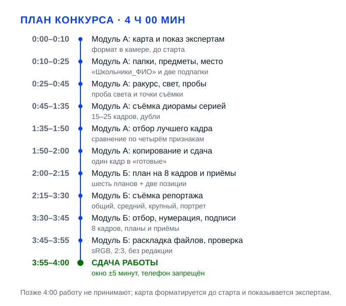
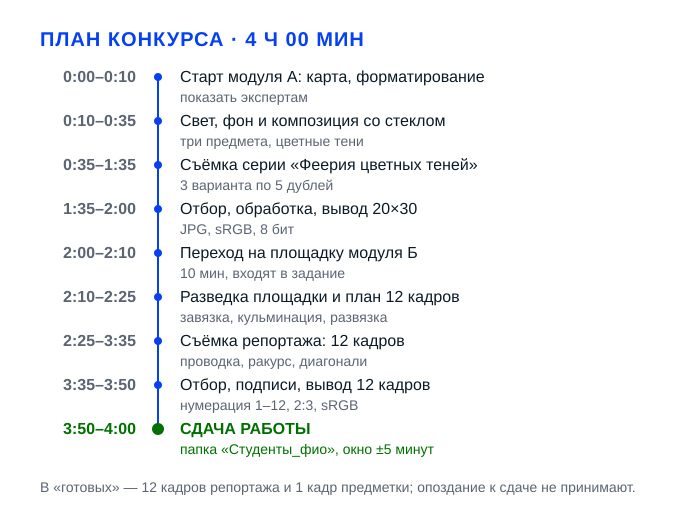
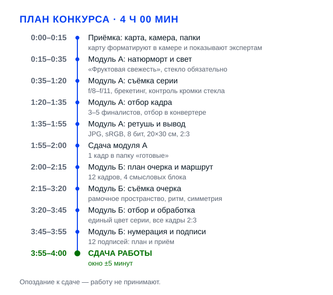

Фотограф (Р)
Задания ниже — официальные файлы «Абилимпикс» (источник: abilympics-russia.ru), разложенные по категориям. Решения написаны по тексту задания, регламенту и критериям оценки; в них указано, что именно проверяет эксперт.
Школьник
14–16 лет, базовый уровень заданияВыдержка из официального конкурсного задания: страницы, относящиеся к категории «Школьник» (стр. 9–11 источника).
Пошаговое решение
Задание категории «Школьники» состоит из двух модулей по два часа каждый, и оба построены вокруг одного умения — снимать так, чтобы кадр не нужно было спасать на компьютере. В модуле А вы снимаете многоплановую диораму на тему «Сказки народов мира»: предметы выдаёт организатор, к ним можно добавить свой предмет с национальным или региональным колоритом высотой не более 30 см, а на компьютере разрешено только отобрать лучший кадр — редакция и кадрирование запрещены. В модуле Б вы снимаете обзорный репортаж чемпионата из восьми кадров на тему «Все профессии важны!» с обязательным набором планов и приёмов, и там обработка тоже не нужна: восемь камерных JPG в sRGB, соотношение сторон 2:3, цветное изображение. Поэтому всё время вы работаете на площадке, а не в графическом редакторе: ракурс, свет, экспозиция и фокус — единственные инструменты, которые у вас есть, и именно они превращают набор предметов в сюжет.

Задача 1. Подготовить камеру, карту памяти и рабочее местоМодуль А · подготовка · первые 30 минут из 2 часов
До первого кадра нужно закрыть три вещи: карта памяти отформатирована и показана экспертам, камера настроена под требования задания, а на рабочем столе появилась папка «Школьники_ФИО» с подпапками «исходники» и «готовые». Подготовка кажется формальностью, но именно она решает, дойдут ли ваши кадры до оценки: снимок в другом соотношении сторон или в чужом цветовом пространстве формально не соответствует техническим характеристикам, а файлы, лежащие не в той папке, эксперт может просто не найти за отведённое на проверку время.
Действие 1.1. Проверить камеру и карту памяти
Шаг 1.1.1
Достаём камеру, ставим заряженный аккумулятор и вставляем карту памяти до щелчка, затем включаем камеру и смотрим на индикатор заряда и на счётчик оставшихся кадров. В меню проверяем, что карта видна и на ней есть место: на два модуля с дублями и сериями спокойно уходит 200–400 кадров, а в RAW каждый файл занимает 20–30 МБ, поэтому карта на 16 ГБ — это минимум, ниже которого лучше не опускаться. Сразу достаём запасной аккумулятор и кладём его в карман, а не в кофр на другом конце стола: на репортаже смена питания занимает секунды, но эти секунды обычно приходятся на лучший кадр.
Требования к оборудованию в задании описаны прямо: камера с перезаписываемой памятью, матрицей не менее 16 Мп, сенсором от 17,3×13 до 24×36 мм, ручной экспозицией, фокусировкой и балансом белого, записью в RAW. Проверка до старта нужна ещё и потому, что в критериях отдельно стоит техническая сохранность оборудования и порядок на площадке: севшая посреди модуля камера — это не «не повезло», а потерянная половина съёмки.
На дисплее видно число оставшихся кадров, оно измеряется сотнями; индикатор заряда полный или не ниже двух делений; запасной аккумулятор лежит рядом с камерой. Сделайте один тестовый кадр в помещении и посмотрите, что он записался и открывается на экране — так вы одновременно проверите карту, объектив и запись.
Самая частая ошибка — прийти со своей картой, на которой осталось двадцать кадров от домашней съёмки: на середине серии камера останавливается, и вы тратите время модуля на удаление файлов вместо работы. Вторая ошибка — вставить карту не до щелчка и потерять кадры при первом же переносе на компьютер, когда карта выпадает из слота.
Эксперт подходит к рабочему месту в начале модуля и смотрит, готова ли камера: включена, карта на месте, есть запас питания. Вопросы про оборудование задаёт именно в эти первые минуты, пока они не стоят вам съёмочного времени.
Шаг 1.1.2
Форматируем карту средствами самой камеры, а не компьютера: входим в меню, находим пункт форматирования, подтверждаем и ждём, пока камера закончит. После форматирования счётчик кадров должен показать максимальное для этой карты значение. Сразу после этого подходим к экспертной группе, показываем пустую карту и просим зафиксировать, что она отформатирована — это требование задания, и оно проверяется до начала соревнований, а не в конце.
Задание прямо требует перед началом соревнований отформатировать карту и показать её экспертной группе, а телефон на площадке запрещён. Смысл в том, чтобы в «исходниках» лежали только кадры, снятые на площадке: если на карте остались домашние файлы, эксперт не может отличить вашу работу от принесённой из дома, и весь модуль попадает под сомнение.
Счётчик показывает полный объём карты, в просмотре нет ни одного кадра, эксперт подтвердил форматирование. Если счётчик остался прежним — карта не отформатировалась, повторите и дождитесь сообщения об успехе, а не выходите из меню по кнопке спуска.
Ошибка — отформатировать карту на компьютере: камера иногда не видит такую разметку и отказывается писать, а выясняется это на первом же кадре. Вторая, более обидная — отформатировать карту после съёмки модуля А, «чтобы освободить место»: вместе с домашними файлами вы стираете исходники первого модуля, а они обязательны к сдаче.
Эксперт отмечает в протоколе факт форматирования и показа карты. Если участник не показал карту до старта, этот пункт остаётся незакрытым независимо от качества снимков.
Шаг 1.1.3
Проверяем объектив: снимаем крышку, осматриваем переднюю линзу на просвет под углом к окну, при необходимости смахиваем пыль грушей или чистой салфеткой, а не дышим на стекло и не трём его рукавом. Проворачиваем кольцо зума по всему диапазону и кольцо фокусировки до упора в обе стороны — они должны идти с одинаковым усилием, без заеданий и хруста. Затем проверяем байонет: объектив должен сидеть без люфта, потому что даже небольшой перекос даёт мягкую, «замыленную» одну сторону кадра.
Пылинка на передней линзе при диафрагме f/8–f/11 превращается в заметное пятно, а на диораме с её мелкими деталями пятно читается как дефект и снимает оценку по техническому качеству. Люфт байонета опаснее: он не виден на экране камеры, но на большом мониторе даёт нерезкий угол, и исправить это кадрированием нельзя — кадрирование в модуле А запрещено.
На просвет на линзе нет разводов и волокон; кольца вращаются плавно; объектив не шатается, если взяться за него и покачать с усилием пальца. Сделайте тестовый кадр листа бумаги с текстом при открытой диафрагме и посмотрите на экране с увеличением: текст должен быть резким по всему полю.
Типичная ошибка — протереть линзу бумажной салфеткой из-под принтера: остаются микроцарапины и ворс, и каждый следующий кадр снимается с «мягким» рассеянием. Вторая — не заметить, что объектив не довёрнут до щелчка: камера пишет ошибку или снимает с закрытой диафрагмой.
Эксперт смотрит на чистоту оптики в начале работы и может попросить показать кадр с увеличением. Заляпанная линза объясняет «мыло» на снимке, и объяснение принимается только в том случае, если участник её протёр.
Шаг 1.1.4
Берём штатив или монопод, раскладываем ноги до упора, проверяем, что все фиксаторы затянуты, и ставим камеру на площадку. Голову затягиваем так, чтобы камера не «кивала» под собственным весом, но двигалась от руки без рывка. Если штатива нет, готовим устойчивую опору: стол, поставленный на него кофр, ровную полку — что угодно, что не двигается, когда вы нажимаете кнопку спуска.
В модуле А диафрагма f/8–f/11 и выдержка в районе 1/15–1/60 секунды на комнатном свете — это норма, и с рук такой кадр почти всегда смазан. Штатив снимает риск целиком, а заодно позволяет выставить камеру строго по уровню и вернуться в ту же точку, если придётся переснять. В критериях качество изображения оценивается отдельно от идеи, и смазанный кадр не спасёт даже самая удачная композиция.
Нажмите на камеру пальцем: она не должна качаться. Включите сетку и уровень в видоискателе — горизонт стоит ровно. Сделайте кадр с задержкой спуска в две секунды и сравните с кадром по нажатию: если второй смазан, опора недостаточно жёсткая.
Ошибка — поставить штатив на шаткий стол и снимать с задержкой спуска, но при этом держаться за камеру рукой: микротолчки руки всё равно попадают в кадр. Вторая — выдвинуть центральную штангу до предела: конструкция теряет устойчивость, и камера дрожит от каждого шага рядом.
Эксперт обходит площадку и отмечает, организовано ли место съёмки. Штатив, поставленный на проходе, где ходят люди, считается нарушением порядка и риском для оборудования.
Действие 1.2. Настроить камеру под требования задания
Шаг 1.2.1
Переводим камеру в ручной режим, чтобы диафрагма, выдержка и светочувствительность не менялись сами между кадрами. В меню качества выбираем запись RAW и JPG одновременно: RAW нужен вам для отбора и как страховка по экспозиции, JPG — как формат сдачи, потому что в задании результат описан как файл JPG. Разрешение ставим максимальное, доступное матрице, и не трогаем его до конца конкурса.
Ручной режим — это требование к оборудованию из перечня: камера должна позволять ручную установку экспозиции, и эксперт смотрит, работает ли участник в ручном режиме или доверил всё автоматике. Пара RAW плюс JPG экономит время: вы снимаете один раз, а получаете и файл для сдачи, и файл с полным запасом по теням и светам, если экспозиция окажется чуть неточной.
На верхнем дисплее видны значения диафрагмы, выдержки и ISO, которые вы задали сами, а не «AUTO». В меню качества стоит RAW плюс JPG, размер файла в тестовом кадре соответствует полному разрешению — у камеры на 24 Мп это 6–10 МБ для JPG.
Ошибка — оставить автоматический ISO: камера поднимет его до 6400 в тёмном углу и запишет шумную кашу, которую нельзя исправить, потому что обработка в модуле А запрещена. Вторая — снимать только в RAW и потом обнаружить, что конвертировать нечем: компьютер на площадке может не иметь вашего конвертера.
Эксперт проверяет настройки камеры, когда подходит с вопросами по ходу модуля. Автоматические режимы при ручных требованиях в задании он отмечает как несоответствие квалификации.
Шаг 1.2.2
Открываем настройки изображения и ставим соотношение сторон 2:3 — в вертикальной ориентации это 2:3, в горизонтальной 3:2, и то и другое соответствует требованию. В цветовом пространстве выбираем sRGB, а не Adobe RGB: если камера пишет в Adobe RGB, на чужом мониторе цвета «поедут» в зелень. Стиль изображения ставим нейтральный или стандартный, без сверхконтрастных профилей, и убираем шумоподавление на высоких ISO до минимума.
Соотношение сторон 2:3 и sRGB — прямые технические характеристики задания для обоих модулей, и кадр в другом формате формально не соответствует. Проверять это на компьютере позже бессмысленно: обрезать кадр в модуле А запрещено, значит, соотношение должно быть выставлено в камере до первого нажатия. sRGB нужен потому, что все экраны и печать на площадке настроены на это пространство, а Adobe RGB без профиля выглядит бледным.
В меню стоит 2:3 и sRGB. Сделайте тестовый кадр, откройте его на компьютере, посмотрите свойства: ширина и высота должны давать соотношение 2:3 (например, 4000 на 6000 точек), в описании цвета — sRGB.
Классическая ошибка — снимать в 16:9 «потому что так красивее на экране»: кадр придётся либо обрезать, что в модуле А запрещено, либо сдавать не по формату. Вторая — оставить Adobe RGB из домашних настроек и получить на сдаче «серые» файлы.
Эксперт выборочно открывает свойства файлов. Несоответствие соотношения сторон видно сразу по превью, и это первый пункт, по которому кадр может уйти в минус.
Шаг 1.2.3
Ставим баланс белого вручную: берём серую карту или колорчекер, кладём его в ту зону диорамы, где будет главный объект, и делаем кадр для определения баланса по серому полю. Если серой карты нет, выставляем по листу белой бумаги, но с поправкой: бумага часто синит, поэтому после первого кадра смотрим на гистограмму по каналам и правим температуру вручную, пока красный и синий каналы не выровняются.
Смешанный свет — главная беда выставочных залов: сверху лампы с одной температурой, сбоку окно с другой, рядом чужой монитор. Автоматический баланс белого в такой ситуации даёт то жёлтый, то синеватый кадр в соседних дублях, а исправлять цвет в модуле А нельзя, потому что редакция запрещена. Точный баланс до съёмки — единственный способ получить предсказуемый цвет.
Серое поле на тестовом кадре выглядит серым, а не тёплым или холодным; в гистограмме красный, зелёный и синий каналы стоят близко друг к другу. Проверьте это на экране камеры с увеличением, а не на глаз по всему кадру.
Ошибка — оставить автоматический баланс и снимать серию: половина кадров уйдёт в желтизну, и выбрать будет не из чего. Вторая — выставить баланс по белому листу, который на самом деле голубоватый, и получить холодный, «мертвенный» кадр.
Эксперт смотрит на цветовой тон всего кадра и на то, использовал ли участник серую карту. Ровный нейтральный цвет без цветового сдвига — отдельный пункт оценки качества изображения.
Действие 1.3. Организовать рабочее место и папки
Шаг 1.3.1
На рабочем столе создаём папку с именем «Школьники_ФИО», вписав свою фамилию и имя так, как они указаны в карточке участника. Внутри создаём ровно две папки: «исходники» и «готовые». Имя проверяем посимвольно: лишний пробел, дефис вместо подчёркивания или забытая фамилия — и эксперт ищет вашу работу дольше, чем длится проверка. Надёжнее скопировать слово «Школьники» из текста задания, а фамилию набрать один раз и потом копировать её же при переименовании файлов.
Структура папок задана в задании дословно, и она же входит в критерий организации данных на компьютере, который упомянут отдельно в разделе про 30% изменений. Логика простая: в «исходники» попадает всё отснятое, в «готовые» — только отобранные кадры, один в модуле А и восемь в модуле Б. Если файлы лежат вперемешку, эксперт не может отличить отбор от черновика и оценивает работу как невыполненную.
В папке «Школьники_ФИО» ровно две вложенные папки с точными именами, третьих нет. Проверьте путь целиком: рабочий стол, папка, две подпапки. Внимательного взгляда на адресную строку для этого достаточно.
Ошибка — создать папку «Школьники Иванов» с пробелом и без подчёркивания: формально это другое имя, и часть экспертов такие папки просто не находит. Вторая — сложить всё в одну папку «готовые», а исходники оставить на карте: требование сдать исходники не выполнено.
Эксперт открывает папку с вашим именем при проверке организации данных. Наличие двух подпапок и правильное имя он фиксирует до того, как посмотрит сами кадры.
Шаг 1.3.2
Раскладываем рабочее место по зонам: слева от камеры — кофр с запасным объективом и аккумуляторами, справа — блокнот с планом кадров и ручка, перед камерой — только диорама и то, что в неё входит. Провода и ремешок убираем с пола под стол, ремешок камеры наматываем на руку или снимаем совсем. Салфетку, грушу и скотч кладём в одно место, чтобы не искать их в полутьме у диорамы.
Порядок на площадке и техническая сохранность оборудования прямо названы в критериях, а на практике порядок экономит минуты: половина потерь времени на конкурсе — это поиски аккумулятора или салфетки в набитом кофре. Убранный ремешок — это ещё и безопасность: зацепившись за него, легко уронить камеру на диораму, а разбитая оптика и раздавленные предметы организаторов означают остановку работы.
На столе перед камерой нет ничего, кроме диорамы; на полу нет петель провода; все нужные мелочи лежат в пределах вытянутой руки. Пройдите взглядом от камеры к диораме: ничего не перекрывает вид и не бросает тень.
Типичная ошибка — поставить сумку на стол рядом с диорамой: она попадает в кадр краем и портит композицию, а сдвинуть её в тесноте некуда. Вторая — оставить ремешок висеть: он цепляется за штатив и роняет камеру при каждом повороте головы.
Эксперт проходит мимо и смотрит на организацию места: свободный подход, отсутствие вещей в кадре, аккуратно убранные провода. Это одна из немногих оценок, которую ставят по взгляду, без разбора файлов.
Шаг 1.3.3
Принимаем у организатора набор предметов для диорамы и пересчитываем их по списку, отмечая каждый. Отдельно решаем, добавляем ли свой предмет с национальным или региональным колоритом: если добавляем, ставим его на стол и измеряем линейкой — высота вместе с подставкой не должна превышать 30 см. Предмет ставим так, чтобы он не закрывал выданные организаторами объекты и попадал в резкость вместе с ними.
Свой предмет разрешён, но с жёстким ограничением по высоте — не более 30 см, и это ограничение проверяется. Национальный или региональный колорит в теме «Сказки народов мира» даёт содержательный плюс: кадр становится не просто натюрмортом, а высказыванием, а соответствие теме — часть оценки. При этом свой предмет не должен вытеснить задание: диорама строится из выданного набора.
Линейка показывает не больше 30 см от стола до верхней точки предмета. На превью кадра видно и выданные предметы, и ваш, причём ни один не обрезан краем. Если свой предмет выше — оставляем его за кадром, а не «чуть-чуть подпиливаем» на месте.
Ошибка — принести предмет на 35–40 см и поставить его впереди: он перекрывает полдиорамы, а по формальному признаку работа уже не соответствует условиям. Вторая — принести предмет без всякой связи с темой, просто яркий: тема «Сказки народов мира» в кадре не читается.
Эксперт смотрит, использован ли свой предмет и соответствует ли он теме и ограничению по высоте. Если предмет выше 30 см, он может потребовать убрать его из кадра до съёмки.
Задача 2. Снять многоплановую диорамуМодуль А · съёмка · около 45 минут из 2 часов
Многоплановая диорама — это сцена, у которой есть передний, средний и дальний план, и оценивают именно то, читаются ли все три. Одна точка съёмки на уровне глаз взрослого человека превращает сцену в плоскую картинку: дальний план закрыт, передний проваливается вниз, а между предметами нет воздуха. Поэтому вы сначала ищете ракурс, потом ставите свет, и только затем выставляете экспозицию и фокусируетесь. Порядок нарушать нельзя: если начать с настройки камеры, то после смены точки съёмки всё придётся делать заново.
Действие 2.1. Выбрать ракурс и построить многоплановый кадр
Шаг 2.1.1
Обходим диораму по дуге и смотрим на неё с трёх высот: на уровне стола, на уровне середины сцены и чуть сверху, поднимая камеру на 15–20 см над верхними предметами. На каждом положении прикрываем один глаз и оцениваем, видно ли дальний план, не перекрывают ли передние предметы средние, читается ли линия, ведущая взгляд в глубину. Выбираем высоту, на которой видно максимум планов, и фиксируем камеру на штативе именно там.
Многоплановость — содержательное требование модуля: кадр должен показывать сцену, а не отдельный предмет. Низкая точка съёмки даёт выразительный передний план, но «съедает» дальний, а слишком высокая превращает диораму в план сверху, где пропадают вертикали и персонажи. Высота на уровне середины сцены обычно даёт наивный, «сказочный» взгляд — зритель оказывается внутри мира, а не над ним.
На превью видны все три плана: что-то крупное и нерезкое впереди, главное действие в середине, узнаваемый фон сзади. Проверить просто: закройте пальцем передний план — кадр должен потерять глубину; закройте дальний — должна исчезнуть обстановка.
Ошибка — снимать стоя, с привычной высоты груди: передний план уходит вниз и обрезается, дальний закрыт средним, и кадр выглядит как фотография полки. Вторая — наоборот, залезть на стул и снять всё сверху: сказочная сцена превращается в схему.
Эксперт смотрит на кадр и первым делом ищет глубину: есть ли планы и есть ли между ними воздух. Плоский кадр он отмечает как непонимание жанра, даже если резкость и цвет идеальны.
Шаг 2.1.2
Строим кадр так, чтобы главный объект стоял не в центре, а на пересечении третей или рядом с ним, а передний план занимал нижнюю треть и был чуть мягче. Следим за краями: ни один предмет не должен обрезаться наполовину, а линия стола не должна проходить через самую важную часть сцены. Если в сцене есть дорожка, лестница, ткань или луч света — ставим камеру так, чтобы эта линия входила из угла и вела к главному объекту.
Кадрирование в модуле А запрещено, поэтому композиция строится только в момент съёмки: то, что вы оставили у края, останется у края навсегда. Ведущая линия — самый дешёвый способ сделать плоскую сцену глубокой, и именно она чаще всего отличает работу, которую видно на стенде, от ровной, но скучной серии. Соответствие теме и композиционное решение — то, что эксперт смотрит раньше технических параметров.
Пройдите взглядом по периметру кадра и назовите, что у вас в каждом углу. Если в углу случайный обрезок предмета или пустая серая полоса — меняйте точку. Главный объект должен быть узнаваем с первого взгляда, без поиска.
Типичная ошибка — поставить главный объект ровно в центр «чтобы надёжнее»: кадр становится статичным, а передний план теряет роль. Вторая — обрезать крайний предмет на треть: исправить это кадрированием нельзя, а смотрится обрезка как небрежность.
Эксперт оценивает композицию до технического разбора: считывается ли сюжет, есть ли ведущая линия, не режутся ли предметы краем. Эти замечания он проговаривает вслух при просмотре.
Шаг 2.1.3
Проверяем геометрию: включаем в видоискателе сетку и электронный уровень, выравниваем горизонт по дальней стене или по краю стола, а вертикали — по стойкам декораций. Если диорама стоит на столе, смотрим, чтобы линия стола не была наклонена: на снимке сцены заваленный горизонт читается сразу и портит всё впечатление. При необходимости поднимаем или опускаем передние ноги штатива на пару сантиметров.
Завал горизонта — самая обидная ошибка, потому что она не лечится: выпрямлять кадр в редакторе запрещено, а кадрирование под наклон означает обрезку, которая тоже запрещена. При этом на сцене с архитектурными элементами — домиками, арками, заборами — наклон в два градуса виден без линейки, и эксперт отмечает его как техническую небрежность.
Линия уровня в видоискателе стоит по центру и не горит красным; край стола и дальняя стена параллельны краям кадра. Приложите к экрану линейку или край листа бумаги — так наклон видно точнее, чем на глаз.
Ошибка — выравнивать по предмету, который сам стоит криво: декоративный домик может быть поставлен под углом, и вы завалите весь кадр вместе с ним. Вторая — выровнять камеру, а потом случайно толкнуть штатив при смене настройки и не заметить этого.
Эксперт проверяет горизонт и вертикали на большом экране: открывает кадр целиком и смотрит на линию стола и на стойки декораций. Завал виден даже на превью, и это один из первых пунктов, по которым кадр теряет оценку.
Шаг 2.1.4
Проверяем в видоискателе, что рамка кадра соответствует 2:3, и заполняем её осмысленно: не оставляем пустых полос сверху и снизу, но и не прижимаем предметы к самой кромке. Если сцена не вписывается, меняем не соотношение сторон, а фокусное расстояние или расстояние до диорамы: подходим ближе или отходим на полшага, потому что лишний фон по краям читается лучше обрезанного предмета.
Соотношение сторон 2:3 — жёсткое требование задания, и в модуле А его нельзя исправить потом. Заполнение кадра при этом не менее важно: если сцена занимает половину площади, а вторая половина — пустой фон, кадр читается как случайный. Правильный ход — подобрать оптику и дистанцию так, чтобы сцена заняла кадр целиком и при этом сохранила воздух по краям.
Сцена занимает не меньше двух третей площади кадра, по краям остаётся узкий воздух, пропорции в свойствах файла дают 2:3. Сравните превью с рамкой видоискателя: линии рамки должны совпадать с тем, что вы видите.
Ошибка — снимать с широким углом вплотную: перспектива «раздувает» передние предметы, и диорама превращается в кашу. Вторая — отойти слишком далеко и оставить вокруг сцены полосы стола и стены, которые уже не убрать.
Эксперт смотрит на заполнение кадра и на пропорции. Пустые полосы по краям он отмечает как неумение работать с кадром, а несоответствие 2:3 — как нарушение технических требований.
Действие 2.2. Поставить свет и убрать паразитные отражения
Шаг 2.2.1
Сначала оцениваем то, что уже есть: смотрим, откуда падает свет в зале, где окна, где лампы, нет ли рядом чужого монитора или яркой витрины. Отмечаем, какая сторона сцены освещена сильнее и где ложатся тени. Если в сцене есть стекло, лак или полированный металл, сразу ищем, под каким углом в них отражается окно или лампа, и меняем точку съёмки так, чтобы отражение не попадало в главный объект.
Смешанный свет в зале — это не только цвет, но и разные по жёсткости источники: от окна тени мягкие, от потолочной лампы — резкие и короткие. Если не разобраться заранее, на сцене появятся двойные тени, и миниатюра будет выглядеть как настольный макет, а не как мир. Отражения в стекле и лаке — самая частая причина брака в предметной съёмке: они выглядят как белые пятна без деталей, и восстановить там ничего нельзя.
На превью нет белых пятен без текстуры; тени от предметов падают в одну сторону; цвет теней и света не различается настолько, чтобы это бросалось в глаза. Посмотрите на кадр прищуренными глазами: пятна света должны читаться как объём, а не как дырки.
Ошибка — включить накамерную вспышку «для яркости»: она даёт плоский лобовой свет, убивает объём и оставляет резкую тень за каждым предметом. Вторая — не заметить отражение окна в стеклянном флаконе и получить белую полосу вместо предмета.
Эксперт смотрит, работает ли участник со светом осознанно: есть ли объём, читаются ли тени. Лобовой свет от вспышки он отмечает как отсутствие световой схемы.
Шаг 2.2.2
Ставим один основной источник сбоку и чуть сверху: под углом примерно 45 градусов к оптической оси камеры и на высоте, при которой тень от предметов ложится в кадр, а не за него. Если источник жёсткий, ставим перед ним рассеиватель — лист кальки, белую ткань, пластиковый диффузор. С противоположной стороны кладём отражатель: белый лист, пенокартон или вторую белую поверхность, — и подбираем расстояние так, чтобы тени подсветились, но не исчезли совсем.
Схема с одним источником и отражателем — базовая и самая надёжная: она даёт объём, который читается на миниатюре, и не требует времени на согласование нескольких приборов. Рассеиватель нужен потому, что жёсткий свет на маленьких предметах даёт тени, сравнимые по размеру с самими предметами, и сцена рассыпается. Отражатель возвращает детали в тенях — без него тёмная сторона превращается в чёрное пятно, а обработка запрещена.
Тени на предметах мягкие, с видимой детализацией в тёмной части; на белом листе-отражателе видно, что он реально подсвечивает сцену. Сделайте два кадра — с отражателем и без — и сравните тени: разница должна быть заметна, но не превращать сцену в плоскую.
Ошибка — поставить свет строго в лоб, «чтобы всё было видно»: объём пропадает, миниатюра становится наклейкой. Вторая — поставить отражатель слишком близко и залить тени целиком: сцена выглядит плоско и блёкло.
Эксперт проверяет, есть ли световая схема и понимает ли участник, зачем нужен каждый элемент. Вопрос «зачем здесь отражатель» задают чаще, чем кажется.
Шаг 2.2.3
Убираем паразитный свет: закрываем листом или тканью ближайшую лампу, если она бьёт в объектив, отодвигаем яркие предметы, не входящие в сцену, разворачиваем камеру так, чтобы в кадр не попадал блик от окна. Если в сцене есть стекло, ставим на объектив поляризационный фильтр и медленно поворачиваем его до тех пор, пока отражение не ослабнет. Проверяем результат по гистограмме: в ней не должно быть узкого столба в правом краю.
Пересвет на белом или стеклянном предмете невозможно восстановить без обработки, а обработка в модуле А запрещена: в файле просто нет информации, там чистый белый. Поляризационный фильтр — единственный инструмент, который убирает отражение оптически, до записи файла, и он есть в перечне рекомендуемого оборудования. Контроль по гистограмме надёжнее, чем взгляд на экран: экран камеры завышает яркость.
В гистограмме яркости правый край не «прилипает» к границе, а мигающие пересветы на предметах отсутствуют при включённом предупреждении о пересветах. Отражение окна в стекле ослабло или сместилось в сторону от главного объекта.
Ошибка — бороться с отражением, задирая свет: вместо блика появляется пересвет на всём предмете. Вторая — крутить поляризатор наугад, не глядя в видоискатель: на миниатюре эффект виден только при точной настройке угла.
Эксперт смотрит на стекло и лак: есть ли в них детали или белые дыры. Умение управлять отражениями он относит к технической грамотности и отмечает отдельно.
Действие 2.3. Выставить экспозицию, сфокусироваться и отснять серию
Шаг 2.3.1
Выставляем светочувствительность на минимум — обычно 100 или 200 единиц, — затем подбираем диафрагму. Для многоплановой сцены начинаем с f/8 и проверяем, хватает ли глубины резкости: если дальний план мягкий, закрываем до f/11, а при необходимости до f/13. Выдержку подбираем по экспонометру так, чтобы при выбранной диафрагме и ISO индикатор экспозиции стоял на нуле, и не боимся значений вроде 1/15 секунды — камера на штативе.
Диафрагма решает главную задачу многопланового кадра: все три плана должны быть резкими одновременно, потому что склеить несколько кадров в один нельзя. На близких дистанциях глубина резкости крошечная: при съёмке с метра даже f/8 даёт всего несколько сантиметров, поэтому на миниатюре часто нужны f/11–f/13. Низкое ISO нужно, чтобы не потерять детали в тенях и не получить шум, который нельзя убрать.
Проверьте по шкале глубины резкости на объективе или по приложению-калькулятору: зона резкости должна покрывать расстояние от переднего предмета до дальнего. Сделайте кадр и посмотрите на экране с десятикратным увеличением сначала передний, потом дальний план.
Ошибка — снимать на открытой диафрагме f/2.8 «чтобы было красивое размытие»: в диораме размывается всё, кроме одной фигурки, и требование многоплановости не выполнено. Вторая — закрыть диафрагму до f/22: резкость падает из-за дифракции, а выдержка становится настолько длинной, что в кадр попадают вибрации от шагов.
Эксперт смотрит на резкость по всему полю кадра. Мягкий дальний план при резком переднем он читает как ошибку выбора диафрагмы, а не как художественный приём.
Шаг 2.3.2
Фокусируемся вручную, переводя камеру в режим увеличения: наводимся на главный объект среднего плана, затем чуть доводим фокус в сторону дальнего плана — примерно на треть глубины сцены от переднего края. Точку фокусировки выбираем не по центру кадра, а по смысловому центру: если главный герой сцены стоит слева, фокусируемся по нему, а не по пустому фону в середине.
При большой глубине резкости правило простое: фокус ставят не на ближний предмет и не на дальний, а на треть сцены, тогда зона резкости распределяется равномерно вперёд и назад. Автофокус на миниатюре часто «цепляется» за контрастную деталь декорации вместо главного объекта, поэтому ручная фокусировка по увеличению — единственный надёжный способ. Резкость главного объекта — первый технический критерий, по которому кадр либо принимают, либо нет.
На увеличенном изображении главный объект резкий, дальний план тоже читается, передний план мягкий лишь чуть-чуть. Пролистайте кадр по зонам: центр, левый край, правый край, верх, низ — нигде нет «мыла», кроме намеренно переднего плана.
Ошибка — фокусироваться по центру кадра, где пусто: главный объект оказывается вне зоны резкости, и кадр уходит в брак. Вторая — оставить автофокус с непрерывным режимом: камера перефокусируется между дублями, и серия получается с разной резкостью.
Эксперт увеличивает кадр на мониторе и смотрит именно главный объект, а не общий вид: он проверяет резкость по контуру фигурки или по надписи на предмете. Если главный объект мягкий, дальше разговор не идёт — остальное уже неважно.
Шаг 2.3.3
Снимаем серию, а не один кадр: сначала три дубля с шагом экспозиции в треть ступени — штатный, на треть темнее и на треть светлее, — затем три кадра с чуть сдвинутой точкой фокусировки, затем два-три кадра с другой высоты камеры на пять сантиметров. После каждой смены положения проверяем, что штатив не сдвинулся и уровень не ушёл. Всего на диораму уходит 15–25 кадров, и это нормально.
Брекетинг по экспозиции нужен потому, что гистограмма на экране камеры врёт в тёмном зале, а обработки не будет: один из трёх кадров почти всегда попадает в точку. Сдвиг фокуса страхует от ошибки в расчёте глубины резкости, а смена высоты даёт вариант композиции, если первый ракурс окажется слабее, чем казался. Серия — это не лишняя работа, а единственная страховка в модуле, где нельзя ничего исправить после съёмки.
В серии есть кадр, у которого гистограмма не упирается ни в левый, ни в правый край. Сравните дубли на экране камеры с увеличением: разница в резкости между ними должна быть видна, значит, вы действительно меняли параметр, а не повторяли одно и то же.
Ошибка — сделать один кадр и уйти: если в нём смазан дальний план или срезан предмет, переснять уже нечем. Вторая — менять сразу всё (и свет, и ракурс, и экспозицию) между дублями: потом невозможно понять, какой именно вариант дал лучший результат.
Эксперт видит по «исходникам», сколько кадров сделано и как менялись параметры. Серия из двадцати осмысленных дублей читается как работа, а три случайных кадра — как спешка.
Шаг 2.3.4
После серии просматриваем кадры на экране камеры с максимальным увеличением и отбраковываем те, где есть смаз, пересвет на белом, пыль на переднем плане или отражение фотографа в стекле. Остальные помечаем защитой от удаления, чтобы случайно не стереть при разборе. Если ни один кадр не устраивает — возвращаемся к пункту с ракурсом и снимаем ещё, время на это в модуле А есть.
Просмотр на камере экономит самый дорогой ресурс — время за компьютером. Кадр, забракованный сразу, не отнимает минуты на отбор и не создаёт иллюзию выбора. Защита от удаления нужна потому, что при переносе файлов на компьютер легко стереть лишнее движение, а исходники обязательны к сдаче: без них модуль считается несданным.
Из серии осталось 5–8 кадров, каждый из которых можно сдавать без стыда. Ни на одном нет смаза, белых дыр и посторонних предметов в кадре. Проверьте увеличение именно в тех местах, где ожидали проблему.
Ошибка — смотреть кадры только целиком, на маленьком экране: смаз в один пиксель и пылинка на таком просмотре не видны, а на большом мониторе сразу бросаются в глаза. Вторая — удалять «неудачные» кадры прямо в камере, а потом обнаружить, что в «исходниках» осталось три файла.
Эксперт при проверке исходников смотрит их количество и характер: сколько кадров снято и как менялись ракурс и экспозиция. Аккуратный отбор виден по тому, что в папке нет случайных кадров пола и потолка.
Задача 3. Отобрать лучший кадр и сдать модуль АМодуль А · отбор и сдача · последние 25 минут
В модуле А на компьютере разрешено ровно одно действие — отбор лучшей фотографии. Ни яркость, ни контраст, ни цвет, ни кадрирование менять нельзя, поэтому работа за компьютером сводится к аккуратному сравнению и копированию файла. Именно здесь чаще всего теряют баллы не из-за съёмки, а из-за спешки: участник «на всякий случай» подтягивает экспозицию в просмотрщике, сохраняет файл и отдаёт работу, которая формально уже не соответствует заданию.
Действие 3.1. Просмотреть серию и отобрать кадр
Шаг 3.1.1
Переносим всю карту в папку «исходники» целиком, копированием, а не перемещением, и ждём окончания копирования. Открываем папку в просмотрщике, включаем режим сетки и проходим серию первым кругом быстро, отмечая кадры с явным браком: смаз, пересвет, обрезанный предмет, посторонняя рука в кадре. Такие файлы не удаляем, а просто запоминаем — они остаются в исходниках как часть работы.
Исходники — обязательная часть сдачи: в папке «исходники» должны лежать все отснятые кадры. Если переносить перемещением, часть файлов останется на карте и в работу не попадёт. Первый быстрый круг нужен, чтобы не тратить время на детальное сравнение заведомо слабых кадров: на двадцать кадров уходит две-три минуты, а экономит он десять.
В папке «исходники» столько же файлов, сколько вы сняли, и они открываются. Отмеченных бракованных кадров — не больше трети серии; если брака больше, значит, проблема в свете или фокусе, и лучше вернуться к съёмке, а не выбирать из плохого.
Ошибка — удалять брак сразу: потом нечем доказать, что серия была, а требование сдать все исходники оказывается нарушенным. Вторая — просматривать кадры по одному в полноэкранном режиме: на двадцать кадров уходит десять минут, и на отбор времени не остаётся.
Эксперт смотрит на количество файлов в «исходниках» и на то, как выглядит отбор: сколько кадров осталось и есть ли среди них явный брак. Пропавшие кадры он воспринимает как сокрытие брака.
Шаг 3.1.2
Из оставшихся выбираем трёх финалистов и сравниваем их попарно по четырём признакам: резкость главного объекта, читаемость трёх планов, ровный горизонт, отсутствие пересветов. Открываем кадры на весь экран, а не в сетке, и увеличиваем до ста процентов в той зоне, где находится главный объект. Победителем становится кадр, у которого нет ни одного провала по этим четырём пунктам, а не тот, который «больше нравится».
Сравнение по фиксированным признакам защищает от вкусового выбора: на конкурсе оценивают соответствие заданию, а не личную симпатию. Резкость и планы — то, что проверяет эксперт первым, горизонт и пересветы — то, что нельзя исправить. Если у двух кадров всё хорошо, выбираем тот, где сильнее читается тема «Сказки народов мира»: сюжет в этом задании оценивается наравне с техникой.
У выбранного кадра все четыре признака в порядке, и вы можете назвать, чем он лучше двух других. Если не можете сформулировать — сравнение не закончено: вернитесь к увеличению в зоне главного объекта и посмотрите дубли ещё раз.
Ошибка — выбирать кадр по «красивости» на превью: в маленьком размере не видно смаза, который на большом экране убивает работу. Вторая — оставить в финалистах кадр с чуть заваленным горизонтом, рассчитывая «поправить потом»: поправить нельзя.
Эксперт при разборе спрашивает, почему выбран именно этот кадр, и просит показать в нём три плана. Ответ по признакам показывает, что участник понимает критерии, а не угадывает.
Шаг 3.1.3
Проверяем выбранный кадр на соответствие запретам: в нём нет следов кадрирования (пропорции ровно 2:3, а не «почти»), нет следов редактирования (нет вырезанных объектов, заплаток, следов клонирования), края кадра совпадают с тем, что было в видоискателе. Отдельно смотрим, не попал ли в кадр край стола, лампа или часть вашего оборудования — это не редакция, но это небрежность, которая видна сразу.
Редакция и кадрирование в модуле А прямо запрещены, и проверяется это не только по файлу, но и по исходникам: если в исходнике кадр шире, чем в «готовых», факт кадрирования очевиден. Посторонние предметы в кадре — отдельная проблема: они не нарушают формальных требований, но снижают оценку композиции и говорят о том, что участник не контролировал рамку.
Свойства файла показывают 2:3, размер совпадает с исходником, дата и время съёмки на месте. Сравните «готовый» кадр с исходником глазами: они должны быть одинаковыми по границам и по цвету, до последнего края.
Ошибка — «чуть-чуть» обрезать кадр, чтобы убрать край стола: это прямое нарушение, и обнаруживается сравнением с исходником. Вторая — прогнать кадр через редактор «только чтобы посмотреть» и сохранить: метаданные и цвет уже изменились.
Эксперт сравнивает «готовый» файл с исходником, открывая их рядом на одном экране. Любое расхождение по границам или цвету он трактует как редактирование, даже если оно случайное.
Действие 3.2. Скопировать кадр без редакции
Шаг 3.2.1
Копируем выбранный JPG из папки «исходники» в папку «готовые» обычным копированием файла, не открывая его в редакторе. Если просмотрщик при открытии предлагает «улучшить» или «сохранить изменения» — отказываемся и закрываем без сохранения. Имя файла оставляем понятным: «диорама_ФИО.jpg» или исходное имя камеры, главное — чтобы было видно, что это финальный кадр.
Копирование файла не меняет ни пикселей, ни метаданных, ни цветового профиля — это единственный способ передать кадр, не нарушив запрет на редакцию. Любая программа, которая пересохраняет JPG, заново сжимает изображение и часто сбрасывает профиль: даже без видимых изменений файл уже другой, и формально это обработка.
В папке «готовые» ровно один файл, его размер совпадает с исходником до байта, свойства показывают sRGB и 2:3. Откройте файл из «готовых» и убедитесь, что он выглядит так же, как в исходниках, — без изменений яркости и цвета.
Ошибка — «сохранить как» из просмотрщика: файл пересохраняется с другим сжатием и без профиля, цвет на чужом мониторе уезжает. Вторая — переименовать файл так, что потеряется связь с исходником, и потом невозможно доказать, что кадр не обработан.
Эксперт сверяет «готовый» файл с исходником по весу и свойствам. Совпадение размера — лучшее доказательство того, что кадр не проходил через редактор.
Шаг 3.2.2
Проверяем технические характеристики готового файла: формат JPG, цветовое пространство sRGB, соотношение сторон 2:3, изображение цветное, разрешение не меньше исходного. Смотрим свойства файла в системе или в просмотрщике: там должны быть видны и профиль, и размеры в точках. Если камера сохранила кадр в Adobe RGB, переснять уже нельзя, но можно проверить, не был ли профиль потерян при копировании.
Все четыре параметра — прямые требования задания, и каждый проверяется отдельно. Соотношение 2:3 легко проверить арифметикой: разделите ширину на высоту, должно получиться 0,667 или 1,5 в зависимости от ориентации. Цветность тоже проверяется формально: чёрно-белый кадр не соответствует заданию, даже если он художественно сильнее.
В свойствах стоит sRGB, размеры дают 2:3, изображение цветное, вес файла в мегабайтах соответствует разрешению матрицы. Пролистайте кадр в просмотрщике: на нём нет чёрно-белых участков, если вы не снимали в монохромном режиме.
Ошибка — снять в монохромном стиле камеры «для настроения»: файл получается чёрно-белым, и требование цветного изображения нарушено. Вторая — не проверить профиль и отдать кадр в Adobe RGB, который на экране эксперта выглядит тусклым.
Эксперт открывает свойства и смотрит четыре параметра подряд: формат, профиль, пропорции, цветность. Это самая быстрая часть проверки, и самая частая причина формального минуса.
Шаг 3.2.3
Раскладываем файлы по папкам окончательно: в «исходники» — вся серия без исключения, в «готовые» — один кадр. Проверяем, что в «готовых» нет случайно скопированных дублей, а в «исходниках» нет файлов из других папок. Если на рабочем столе остались промежуточные копии, убираем их в корзину, чтобы эксперт не гадал, какая из них финальная. Пустые папки с похожими именами тоже убираем: они сбивают счёт.
Порядок в файлах — часть критерия организации данных на компьютере, который указан в задании отдельно. Кроме того, лишний файл в «готовых» создаёт двусмысленность: эксперт не знает, какой кадр вы считаете итоговым, и может оценить не тот. Уборка промежуточных копий занимает полминуты, а недоразумение на проверке стоит гораздо дороже.
В «готовых» ровно один файл, в «исходниках» — вся серия, на рабочем столе нет файлов с тем же именем. Откройте обе папки рядом и пересчитайте файлы глазами: числа должны совпадать с тем, что вы сняли.
Ошибка — положить в «готовые» два кадра «пусть эксперт выберет»: задание требует один, и лишний файл читается как невыполнение условия. Вторая — оставить в «исходниках» файлы, снятые на другом мероприятии: они сразу видны по дате.
Эксперт проверяет содержимое обеих папок. Точное количество файлов в «готовых» — первое, что он смотрит ещё до просмотра снимков, и считает он их при вас.
Действие 3.3. Сдать модуль А и перейти к репортажу
Шаг 3.3.1
Проходим финальный чек-лист модуля А по пунктам: имя папки «Школьники_ФИО», две подпапки, один кадр в «готовых», вся серия в «исходниках», формат JPG, sRGB, 2:3, цветное, без кадрирования и редакции. Каждый пункт отмечаем вслух или в блокноте — так лучше видно пропуск. Если какой-то пункт не сходится, исправляем сразу, пока время модуля не вышло, а пункт «без редакции» проверяем по размеру файла.
Чек-лист закрывает именно те пункты, по которым работу чаще всего возвращают. Проговаривать пункты вслух полезно психологически: на четвёртом часу внимание падает, и «проверил в голове» означает «проверил наполовину». Показ эксперту до истечения времени модуля даёт шанс исправить формальную ошибку, пока она ещё исправима.
Все пункты отмечены, эксперт подтвердил, что видит папку и файл. Убедитесь, что путь к папке именно на рабочем столе, а не в сетевом расположении, куда у эксперта может не быть доступа, и что файл открывается двойным щелчком.
Ошибка — откладывать сдачу на последнюю минуту: тогда любая формальная ошибка становится фатальной, а переименовать файл уже нельзя. Вторая — показать эксперту папку, но не сам кадр: он должен видеть, что файл действительно открывается.
Эксперт фиксирует время сдачи модуля А. Спокойная, заранее подготовленная сдача оставляет впечатление организованной работы, а это тоже входит в оценку.
Шаг 3.3.2
Коротко объясняем эксперту свой выбор: что за сцена, где передний, средний и дальний план, почему выбран этот ракурс и этот свет, какой предмет добавили и почему он связан с темой. Достаточно трёх-четырёх фраз, сказанных спокойно и по делу. Если эксперт задаёт вопрос про технические параметры, называем диафрагму, выдержку и ISO, которые стояли при съёмке.
Устное объяснение показывает, что кадр получился в результате решения, а не случайно, и именно по нему эксперт понимает, умеет ли участник анализировать свою работу. В критериях оценивается и деловое общение: короткий точный ответ ценится выше длинного и путаного. Кроме того, объяснение помогает самому участнику: проговорив схему, он быстрее повторит её на репортаже.
Вы назвали три плана в своём кадре, объяснили ракурс и свет и не замялись на вопросе о параметрах. Если не помните точные значения — скажите принцип: «диафрагма f/11, чтобы все планы были резкими, и съёмка со штатива».
Ошибка — начинать с извинений и рассказывать, что «не очень получилось»: эксперт оценивает работу, а не самооценку. Вторая — уходить в длинную историю про замысел, не отвечая на вопрос о технике, и третья — отвечать односложным «да», не показывая хода мысли.
Эксперт задаёт один-два вопроса по кадру в момент сдачи: почему такой ракурс, где дальний план. По ответу он проверяет, понимает ли участник, что именно сделал и зачем.
Задача 4. Снять обзорный репортаж из восьми кадровМодуль Б · 2 часа · 8 кадров JPG sRGB
Второй модуль — обзорный фоторепортаж чемпионата на тему «Все профессии важны!». Восемь кадров, и в них обязаны быть общий план, средний, крупный, жанровый портрет, деталь и кадр на обложку, то есть главный кадр всего репортажа. Кроме планов нужны художественные приёмы, и три из них названы прямо: симметрия, ритм и диагонали. Каждый кадр нумеруется и подписывается — и план, и приёмы. Репортаж оценивают как набор: даже сильный отдельный снимок не спасает, если в восьмёрке нет детали или обложки.
Действие 4.1. Спланировать репортаж до первого кадра
Шаг 4.1.1
Берём лист бумаги и выписываем столбиком восемь строк — по числу кадров: общий план, средний план, крупный план, жанровый портрет, деталь, кадр на обложку и две строки на ваш выбор, например второй жанровый портрет и вторая деталь. Напротив каждой строки оставляем место для приёма и для пометки, где кадр будет снят. Лист держим при себе и вычёркиваем снятое — так видно, чего ещё нет.
Шесть типов кадров названы в задании как обязательные, а всего кадров восемь, значит, две позиции вы закрываете по своему решению. Планирование на бумаге нужно потому, что на площадке внимание рассеивается: вокруг движение, свет, люди, и без списка вы снимете десять похожих средних планов, а деталь и обложку вспомните за пять минут до сдачи. Полнота репортажа — первое, что проверяет эксперт.
В списке восемь строк, у каждой есть план, приём и место. Проверьте, что все шесть обязательных типов названы дословно так, как в задании: общий, средний, крупный, жанровый портрет, деталь, обложка. Пустых строк остаться не должно.
Ошибка — держать план в голове: к третьему кадру вы забудете про деталь, а к концу обнаружите, что обложки нет. Вторая — запланировать восемь кадров одного типа, например восемь портретов: репортаж получится однобоким.
Эксперт проверяет наличие всех шести типов планов в сданной восьмёрке. Отсутствие любого из них — прямой минус, независимо от качества остальных кадров.
Шаг 4.1.2
Проходим площадку целиком до начала съёмки: смотрим, где стоят рабочие места, откуда падает свет, где можно встать, не мешая участникам и экспертам, и где образуется свободный проход. Отмечаем на листе три-четыре точки, с которых видно сразу несколько компетенций. У организаторов или главного эксперта уточняем, в какие интервалы идут активные действия, чтобы не снимать пустые столы.
Репортаж строится на событии: если снимать в паузе, в кадре будут спины и пустые инструменты. Кроме того, на площадке действуют правила: в рабочую зону входить нельзя, участников отвлекать нельзя, вспышка в лицо — тоже. Разведка маршрута экономит время модуля и снимает риск получить замечание за нарушение порядка, а порядок и этика общения прямо входят в критерии.
У вас есть список точек с привязкой к компетенциям и понимание, когда что происходит. Вы знаете, с какой стороны подойти к каждому рабочему месту, чтобы не оказаться в кадре у другого фотографа и не перекрыть обзор эксперту.
Ошибка — начинать съёмку сразу, с первой попавшейся точки: через полчаса выясняется, что все кадры сняты с одного ракурса и в одном свете. Вторая — встать в проходе, где ходят люди: вас попросят отойти в самый неподходящий момент.
Эксперт смотрит, как участник перемещается по площадке: не мешает ли, не заходит ли в рабочую зону, не снимает ли со вспышкой в лицо. Замечание по поведению он фиксирует отдельно от оценки кадров.
Шаг 4.1.3
Распределяем приёмы по кадрам заранее: симметрию отдаём общему плану — центральная ось зала, ряды столов, повторяющиеся светильники; ритм — среднему плану или детали, где есть повтор: ряды инструментов, клавиши, стопки материалов, ноги столов; диагонали — кадру с движением, где рука, инструмент или край стола идут из угла в угол. В один кадр можно сложить два приёма, и это даже полезно: ритм плюс диагональ читаются сильнее.
Три обязательных приёма названы в задании, и минимум три приёма должны быть в репортаже вообще — значит, симметрия, ритм и диагонали закрывают минимум, а четвёртый приём, например рамка или передний план, добавит глубины. Распределять приёмы заранее нужно потому, что искать симметрию в готовой восьмёрке поздно: подписывать кадр приёмом, которого в нём нет, — значит подставляться под вопрос эксперта.
В списке напротив каждого кадра стоит приём, и вы можете показать пальцем, где он в кадре: ось симметрии, повторяющиеся элементы, диагональная линия. Если показать нечего — приём выдуман. Три обязательных приёма должны встретиться в репортаже хотя бы по одному разу.
Ошибка — снять всё «как получится» и потом придумать подписи: эксперт открывает кадр и просит показать диагональ, которой нет. Вторая — запихнуть все три приёма в один кадр и оставить остальные семь пустыми.
Эксперт сверяет подписи с кадрами и просит показать заявленный приём пальцем. Приём, которого в изображении нет, он считает ошибкой атрибуции и снимает за подписи.
Действие 4.2. Снять общий, средний и крупный планы
Шаг 4.2.1
Общий план снимаем с широким объективом, примерно 24–35 мм, отойдя настолько, чтобы в кадр вошёл весь зал или вся площадка одной компетенции. Становимся строго по центральной оси помещения, включаем сетку и выравниваем камеру по симметрии: линии потолка, ряды столов и светильники должны сходиться к центру кадра. Ждём момента, когда в кадре есть люди, но нет толпы, перекрывающей середину, и снимаем серию из трёх-пяти кадров.
Общий план — обязательный кадр, он задаёт масштаб и показывает, что происходит на чемпионате. Симметрия здесь работает лучше всего: зал с центральной осью читается как организованное пространство, а не как случайная толпа. Широкий угол при этом требует аккуратности: на 24 мм края кадра растягиваются, и люди по бокам выглядят искажёнными, поэтому центр должен быть смысловым.
В кадре видна вся площадка, есть ось симметрии, нет обрезанных людей на краях и пустого первого плана. Проверьте вертикали по стойкам и колоннам: они должны стоять ровно, без завала, а линии потолка — сходиться к центру.
Ошибка — снимать общий план с рук в толчее: горизонт завален, половина кадра — чужие спины. Вторая — снять пустой зал до начала: формально общий план есть, но события в нём нет, и тема «Все профессии важны!» не читается.
Эксперт ищет в общем плане событие и порядок: видно ли, что идёт работа, читается ли масштаб зала. Пустой зал до начала или толпу без смыслового центра он отмечает как формальный кадр.
Шаг 4.2.2
Средний план снимаем с 35–50 мм, подходя к рабочему месту на два-три метра: в кадре человек по пояс или по грудь вместе со своим инструментом и частью рабочей поверхности. Ищем ритм: повторяющиеся столы, ряды ламп, одинаковые мониторы, стопки заготовок — и ставим камеру так, чтобы повтор шёл через кадр. Ждём рабочего жеста: руки в движении, инструмент в работе, взгляд вниз, на задачу.
Средний план — это «человек и его дело»: он объясняет, чем занят участник, и связывает общий план с крупным. Ритм в среднем плане появляется сам, если не ставить человека в центр одиночного кадра: повторяющиеся элементы сбоку или сзади создают ощущение большого мероприятия. Жест важнее позы: статично стоящий человек выглядит как позирование, а репортаж требует действия.
В кадре читается профессия: видно, что человек делает, каким инструментом, на каком фоне. Ритм виден как повтор не меньше трёх элементов, идущих через кадр. Резкость на лице или руках, фон не «забивает» главное.
Ошибка — снимать человека, стоящего лицом к камере и улыбающегося: это уже не репортаж, а постановочный портрет. Вторая — заполнить кадр фоном и оставить человека маленьким сбоку: профессия не читается.
Эксперт смотрит, работает ли кадр как рассказ о профессии: понятно ли, что человек делает и чем. Средний план без действия он считает статичным и снижает оценку за репортажность.
Шаг 4.2.3
Крупный план снимаем с 50–85 мм, подходя ближе, но оставаясь сбоку, чтобы не вставать между участником и его работой. В кадр берём лицо и руки одновременно: сосредоточенный взгляд, пальцы на инструменте, деталь оборудования у щеки. Диафрагму приоткрываем до f/2.8–f/4, чтобы фон мягко уходил, а выдержку держим не длиннее 1/200 секунды, потому что руки в работе двигаются быстро.
Крупный план — единственный кадр, где видно лицо и эмоцию, и он несёт в репортаже человеческую ноту: за абстрактным «чемпионатом» появляется конкретный подросток, который старается. Открытая диафрагма нужна, чтобы убрать пёстрый фон зала, который на крупном плане превращается в визуальный шум. Короткая выдержка обязательна: смазанные руки на крупном плане читаются как брак.
Глаза или ресницы резкие, кожа не пересвечена, фон размыт, но узнаваем. На увеличенном кадре нет смаза на пальцах. Проверьте, не попал ли в кадр край стола или чужое плечо крупным пятном, которое перетягивает внимание.
Ошибка — снимать крупный план с широкого угла вплотную: лицо искажается, нос выглядит огромным. Вторая — открыть диафрагму до f/1.8 и промахнуться фокусом: резким оказывается инструмент, а глаза мягкие.
Эксперт смотрит на крупный план как на показатель умения работать с оптикой: резкость по глазам, аккуратный фон, отсутствие искажений на лице. Смаз по рукам он отмечает как ошибку выдержки.
Действие 4.3. Снять жанровый портрет, деталь и обложку
Шаг 4.3.1
Жанровый портрет отличается от крупного плана тем, что человек в нём показан в своей среде и занят делом: он не смотрит в камеру, а работает, и обстановка вокруг объясняет профессию. Ищем момент, когда участник забыл о съёмке: наклонился над заданием, проверяет результат, поправляет инструмент. Снимаем с 50–85 мм с уровня его глаз или чуть ниже, ждём, пока в кадре появится второй смысловой слой — лампа, чертёж, экран, готовое изделие.
Жанровый портрет назван в задании отдельным пунктом именно потому, что он требует другого поведения фотографа: не постановки, а наблюдения. Такой кадр ценится выше постановочного, потому что в нём есть подлинность и видна среда. Съёмка с уровня глаз возвращает зрителю равноправие с героем: сверху вниз человек выглядит маленьким, а снизу — плакатным.
Человек в кадре занят делом, а не позирует, взгляд направлен на работу, и в кадре есть предмет, по которому понятна профессия. Резкость по глазам, выражение лица живое, а не застывшее, руки не перекрывают лицо.
Ошибка — попросить участника «посмотреть в камеру и улыбнуться»: получается любительский портрет, а не жанровый. Вторая — снять со спины или в момент, когда лицо закрыто рукой: человек превращается в силуэт.
Эксперт отличает жанровый портрет от постановочного по взгляду и позе. Кадр, где человек смотрит в объектив, он может не засчитать как жанровый, даже если тот технически безупречен.
Шаг 4.3.2
Деталь снимаем крупно и почти абстрактно: только руки и инструмент, только край изделия, только экран с кодом, только стружка под фрезой. Подходим максимально близко или используем телеположение, заполняем кадр объектом на восемьдесят-девяносто процентов площади, а линию инструмента или руки ведём по диагонали. Диафрагму закрываем до f/5.6–f/8, чтобы вся деталь была резкой.
Деталь — обязательный кадр, и она делает репортаж достоверным: именно по ней зритель верит, что человек действительно работает, а не изображает работу. Диагональ в детали появляется естественно, потому что инструмент почти всегда лежит или движется под углом к рамке. Закрытая диафрагма нужна из-за короткой дистанции: на близком расстоянии глубина резкости измеряется миллиметрами.
Деталь занимает почти весь кадр, посторонних предметов по краям нет, резкость по всей площади объекта. По кадру понятно, что это за инструмент и что им делают. Диагональ видна как направление движения или линии инструмента.
Ошибка — снять деталь с большого расстояния и оставить вокруг много пустого стола: кадр перестаёт быть деталью. Вторая — открыть диафрагму «для красоты»: половина инструмента уходит в мягкость, и деталь не читается.
Эксперт ищет в детали смысл: понятно ли, что происходит и чем работает человек. Размытая или далёкая деталь не засчитывается как деталь, даже если она подписана словом «деталь».
Шаг 4.3.3
Обложка — главный кадр репортажа, и снимать её нужно с расчётом на то, что по ней будут судить о всей работе. Ищем кадр, где есть и человек, и его дело, и эмоция: момент удачи, сосредоточение, жест мастера. Оставляем в кадре воздух — свободное место сверху или сбоку, куда можно поставить заголовок, — и следим, чтобы этот участок не был пёстрым. Снимаем несколько вариантов, в том числе вертикальный 2:3.
Кадр на обложку назван в задании отдельно, и он оценивается как главный: именно он представляет репортаж. Воздух под заголовок — практическое требование к обложке в любом издании, и эксперты смотрят на это как на понимание назначения кадра. Эмоция в главном кадре работает сильнее техники: зритель запоминает лицо, а не диафрагму.
В главном кадре есть герой, действие и читаемая эмоция; одна сторона кадра относительно свободна от деталей; резкость по лицу; кадр выделяется среди остальных семи по силе. Если вы не можете сказать, почему этот кадр главный, — он не главный.
Ошибка — назначить обложкой первый снятый кадр, потому что он «нормальный»: обложка должна быть лучшей, а не первой. Вторая — снять обложку так плотно, что в кадре нет воздуха: заголовок ставить некуда.
Эксперт смотрит обложку первой, и от неё зависит первое впечатление о всей восьмёрке. Слабый главный кадр он отмечает как непонимание структуры репортажа.
Действие 4.4. Отобрать восемь кадров, проверить технику и подписать
Шаг 4.4.1
Переносим всю серию на компьютер в папку «исходники», открываем сеткой и отбираем по одному кадру на каждую строку списка. Сначала закрываем обязательные шесть позиций, потом две свободные. При равных вариантах выбираем тот, где сильнее действие, а не тот, где чище фон. Отобранное сразу копируем в отдельную временную папку, чтобы не путаться с остальной серией.
Восемь кадров должны сложиться в рассказ, а не в подборку: если два кадра дублируют друг друга по плану и смыслу, один из них лишний, и вместо него лучше взять другую сцену. Закрывать сначала обязательные позиции — значит гарантировать полноту репортажа даже в случае нехватки времени. Действие важнее чистого фона: репортаж оценивают за событие.
На каждую из восьми строк списка есть ровно один кадр, все шесть обязательных типов закрыты, дублей по смыслу нет. Просмотрите восьмёрку подряд: она должна читаться как последовательность, а не как восемь разных фотографий.
Ошибка — набрать восемь красивых кадров одного типа и не заметить, что детали и обложки нет. Вторая — взять два почти одинаковых средних плана с разницей в полшага: репортаж выглядит беднее, чем был на самом деле.
Эксперт раскладывает восемь кадров и смотрит на набор целиком, как на подборку для публикации. Отсутствие типа плана или явный дубль он фиксирует до разбора качества отдельных снимков.
Шаг 4.4.2
Нумеруем кадры от 1 до 8 и подписываем каждый: в имени файла ставим номер, план и приёмы, например «1_общий-план_симметрия.jpg» или «5_деталь_диагональ.jpg». Дополнительно создаём текстовый файл «подписи» в папке «готовые», где те же данные идут списком по номерам: номер, план, приёмы, короткое описание сюжета. Имена проверяем на опечатки: «крупный план» и «крупный план» должны писаться одинаково во всех строках.
Задание требует пронумеровать все кадры и подписать используемые планы и приёмы, и это проверяется буквально: эксперт должен видеть и номер, и подпись. Дублирование в имени файла и в отдельном списке страхует от того, что переименование не сохранится или файл потеряет подпись при копировании. Единообразие формулировок — признак аккуратной работы, а организация данных на компьютере входит в критерии.
Восемь файлов названы по схеме, номера идут без пропусков, у каждого указан план и хотя бы один приём. В файле подписей те же восемь строк. Проверьте, что номера в именах совпадают с номерами в списке.
Ошибка — подписать кадры «1.jpg», «2.jpg» без планов и приёмов: требование выполнено наполовину, и эксперт не видит, что участник понимает разницу между планами. Вторая — перепутать номера при копировании, и подпись перестаёт соответствовать кадру.
Эксперт сверяет подписи с изображениями по одному, начиная с обложки, и просит открыть любой кадр наугад. Несовпадение подписи и кадра он трактует как ошибку в работе с материалом.
Шаг 4.4.3
Проверяем каждый из восьми кадров по техническим требованиям: JPG с камеры, соотношение сторон 2:3, цветовое пространство sRGB, изображение цветное, файл не проходил через редактор. Отдельно проверяем резкость на увеличенном просмотре и экспозицию по гистограмме: не должно быть кадров, где свет упирается в правый край. Кадр, который не проходит хотя бы по одному пункту, заменяем другим из серии, а не «спасаем» обработкой.
Все четыре технических требования названы в задании для модуля Б, и обработка изображения для категории «Школьники» не предусмотрена — в отличие от категорий студентов и специалистов, где она разрешена прямо. Значит, единственный способ исправить технический брак — заменить кадр другим из отснятой серии. Резкость и экспозиция проверяются на увеличении, потому что на превью ошибки не видны.
У всех восьми файлов в свойствах стоит sRGB и соотношение 2:3, размер соответствует разрешению камеры, на увеличенном просмотре главный объект резкий, гистограмма не упирается в края. Цветной кадр — без монохромных участков.
Ошибка — оставить один кадр с чуть заваленным горизонтом, рассчитывая, что «не заметят»: именно его и заметят. Вторая — «поправить» кадр в редакторе, когда до сдачи десять минут: формально это нарушение, и оно видно по метаданным.
Эксперт открывает свойства выборочно, но минимум два-три файла из восьми. Несоответствие по формату или цвету он проверяет по метаданным, а не на глаз.
Задача 5. Сдать репортаж и привести площадку в порядокМодуль Б · сдача · последние 20 минут
Финальная часть стоит отдельного разговора, потому что здесь теряют то, что заработали за четыре часа. Нужно разложить файлы по двум папкам в нужном количестве, пройти чек-лист по восьми кадрам и сдать работу до окончания времени, а не «через минуту». После сдачи — убрать оборудование и оставить рабочее место таким, каким вы его получили: порядок на площадке и сохранность техники входят в критерии оценки отдельно.
Действие 5.1. Разложить файлы и сделать резервную копию
Шаг 5.1.1
Копируем восемь отобранных кадров в папку «готовые», а всю серию оставляем в «исходниках». Проверяем количество: в «готовых» ровно восемь файлов, в «исходниках» — всё, что снято за модуль, включая дубли и брак. Переименовываем восемь кадров по схеме с номерами и подписями, затем открываем папку заново и пересчитываем файлы глазами: имена должны идти по возрастанию номера.
Восемь кадров в «готовых» и полная серия в «исходниках» — прямые требования задания, и проверяются они первыми. Исходники нужны не для красоты: по ним эксперт видит объём работы и может убедиться, что кадры сняты на площадке, а не принесены готовыми. Точное количество файлов в «готовых» исключает вопрос «какой из девяти считать восьмым».
В «готовых» восемь файлов, номера от 1 до 8 без пропусков, в «исходниках» — все кадры модуля. Ни один файл не открыт в редакторе, размеры совпадают с исходными, а порядок сортировки по имени совпадает с порядком кадров в репортаже.
Ошибка — положить в «готовые» девять кадров «на выбор»: задание требует восемь, лишний файл создаёт путаницу и читается как невыполнение условия. Вторая — оставить в «исходниках» только удачные кадры, удалив остальное: объём работы становится недоказуемым.
Эксперт пересчитывает файлы в обеих папках и смотрит на имена: номера должны идти подряд. Расхождение по количеству или отсутствие нумерации он фиксирует до просмотра снимков.
Шаг 5.1.2
Делаем резервную копию: копируем папку «Школьники_ФИО» целиком на второй носитель — флешку, внешний диск или в разрешённое место на компьютере, — и проверяем, что копия открывается. Карту памяти при этом не форматируем и не вынимаем до сдачи: на ней остаётся последняя линия защиты. После копирования сверяем количество файлов в копии и в оригинале по каждой из двух папок.
Четыре часа работы существуют в одном экземпляре, пока копии нет: одно неверное движение — и папка уезжает в корзину или файл перезаписывается. Резервная копия занимает две минуты и снимает этот риск целиком. Карту не форматируем до сдачи, потому что именно она доказывает, что кадры сняты сегодня и здесь.
Копия папки открывается, в ней те же восемь кадров и вся серия, количество файлов совпадает. Карта на месте: вставлена в камеру или лежит в кофре, а не в чужом кармане и не на столе под чужими вещами.
Ошибка — копировать только папку «готовые»: при потере исходников работа всё равно считается неполной. Вторая — отформатировать карту «чтобы освободить место» сразу после копирования, до сдачи: тогда исчезает последняя линия защиты.
Эксперт может спросить, есть ли копия, если с файлами что-то случилось на площадке. Наличие резерва он отмечает как профессиональную привычку, а его отсутствие — как лишний риск.
Действие 5.2. Пройти чек-лист, сдать работу и убрать место
Шаг 5.2.1
Проходим финальный чек-лист по порядку: имя папки «Школьники_ФИО»; две подпапки; восемь кадров в «готовых»; все кадры в «исходниках»; у каждого кадра номер и подпись плана и приёмов; все шесть типов планов присутствуют; минимум три приёма, включая симметрию, ритм и диагонали; формат JPG, sRGB, 2:3, цветное; файл подписей на месте. Каждый пункт отмечаем в блокноте, а не «в голове».
Чек-лист повторяет требования задания дословно, и это не формальность: на четвёртом часу работы внимание падает, и пропущенной оказывается самая простая вещь — например, подпись приёма у одного кадра. Один незакрытый пункт стоит дороже, чем десять идеально снятых кадров, потому что формальное требование проверяется раньше художественного.
Все девять пунктов отмечены, ни один не оставлен «на потом». Пройдите чек-лист второй раз быстро, только по файлам: открыли папку, посчитали, проверили подписи. Второй проход занимает минуту и ловит опечатки.
Ошибка — проверять чек-лист по памяти: «вроде подписывал» обычно означает, что один кадр остался без подписи. Вторая — начать чек-лист за две минуты до сдачи, когда исправлять уже нечего и остаётся только сдавать как есть.
Эксперт проверяет работу по тому же списку требований, что и вы. Полный комплект он отмечает как организованную сдачу, а неполный — как невнимательность, даже если кадры сильные.
Шаг 5.2.2
Зовём эксперта, показываем папку на экране и коротко называем, что внутри: восемь кадров репортажа по теме «Все профессии важны!», номера и подписи, исходники отдельно. Отвечаем на вопросы по конкретным кадрам: где снят, какой план, какой приём. Сдаём работу до окончания времени, а не в последнюю минуту, чтобы остался запас на исправление формальной ошибки.
Сдача — это тоже оцениваемое действие: от того, насколько внятно участник представляет работу, зависит, увидит ли эксперт заложенные в кадры решения. Деловое общение и профессиональная этика прямо названы в требованиях к квалификации. Запас времени нужен потому, что после замечания эксперта иногда достаточно переименовать файл, но сделать это можно только до истечения времени модуля.
Эксперт подтвердил приём работы, время сдачи зафиксировано. Вы можете назвать номер любого кадра и объяснить, что в нём снято, какой это план и какие приёмы в нём использованы. Если вопрос застал врасплох, откройте кадр на экране и говорите по нему.
Ошибка — сдавать молча, просто показав папку: эксперт может не заметить заявленные приёмы, и они останутся неоценёнными. Вторая — тянуть до последней минуты и сдавать в спешке, когда любая опечатка в имени файла становится неисправимой.
Эксперт фиксирует время и комплектность сдачи в протоколе. Вопросы задаёт по тем кадрам, где подписи выглядят спорно или где заявлен приём, который надо показать.
Шаг 5.2.3
Убираем рабочее место: снимаем камеру со штатива, складываем штатив, ставим крышку на объектив, аккуратно сматываем ремешок, складываем оборудование в кофр. Предметы, выданные организаторами, возвращаем в том же составе, в котором получали; свой предмет забираем. Стол оставляем чистым: ни бумажек, ни скотча, ни следов работы. Камеру выключаем и показываем эксперту, что оборудование в порядке.
Порядок на площадке и техническая сохранность оборудования — отдельный пункт критериев, и он оценивается в конце, когда все уже расслабились. Возврат предметов важен не только из вежливости: недостача фиксируется как порча имущества организаторов. Убранное место — это последнее впечатление, которое остаётся у эксперта, и оно влияет на итоговую оценку организации работы.
Стол пустой, оборудование сложено и выключено, предметы возвращены и пересчитаны, камера закрыта крышкой. Пройдите по столу взглядом сбоку: на светлой поверхности не должно оставаться мелочей, скотча и обрезков.
Ошибка — уйти сразу после сдачи, оставив на столе скотч, бумажки и штатив: это замечают почти всегда. Вторая — забыть свой предмет или, наоборот, унести чужой: недостача фиксируется в протоколе и портит итоговую оценку.
Эксперт обходит площадку после сдачи и смотрит на состояние рабочих мест. Порядок он отмечает в протоколе отдельной строкой, и это последняя оценка за день.
Студент
учащиеся колледжей и техникумовВыдержка из официального конкурсного задания: страницы, относящиеся к категории «Студент» (стр. 9–12 источника).
Пошаговое решение
Задание категории «Студенты» — два модуля по два часа. В модуле А вы делаете одну цветную имиджевую предметную фотографию на тему «Феерия цветных теней», в модуле Б — линейный фоторепортаж из двенадцати кадров на тему «Динамика творческого процесса». Результат модуля А — один файл JPG в sRGB, размером 20 на 30 сантиметров, 8 бит; результат модуля Б — двенадцать кадров JPG в соотношении 2:3 и sRGB, пронумерованных и подписанных. В предметке обязательны минимум три предмета организаторов и стеклянный предмет, в репортаже — шесть планов и три обязательных приёма: проводка, ракурс и диагонали. Всё складывается в папку «Студенты_фамилия» с подпапками «исходники» и «готовые», карту форматируют до старта и показывают экспертам, телефон запрещён. Четыре часа делятся ровно пополам, и главная ошибка здесь — увлечься предметкой и оставить репортаж на последние сорок минут, когда площадка пустеет.

Задача 1. Подготовить камеру, карту памяти и площадкуМодуль А · старт · форматирование карты и свет
Первые сорок минут модуля А уходят не на съёмку, а на то, чтобы съёмка вообще стала возможной: чистая карта, показанная экспертам, камера с правильным профилем цвета, собранная световая схема и разложенные по местам предметы. Всё это входит в оценку отдельной строкой — за организацию рабочего места и техническую сохранность оборудования баллы начисляют и снимают по ходу конкурса, а не в конце. Поэтому подготовка идёт первым пунктом и делается спокойно, без спешки: спешка здесь стоит дороже, чем кажется, потому что исправлять её приходится уже под таймер.
Действие 1.1. Отформатировать карту и проверить камеру
Шаг 1.1.1
До старта достаём карту памяти, вставляем её в камеру и форматируем средствами самой камеры: в меню находим пункт «Форматирование карты» и подтверждаем. Форматировать на компьютере нельзя — камера создаёт свою таблицу размещения файлов, и после компьютерного форматирования часть камер теряет последние кадры серии. Затем вынимаем карту, подходим к экспертной группе и показываем пустую папку DCIM и нулевой счётчик на верхнем дисплее. Если на карте лежит что-то нужное, берём вторую, чистую: одна испорченная карта обнуляет все четыре часа работы.
Требование отформатировать карту и показать её экспертам прописано в технических характеристиках обоих модулей, и это не формальность: так исключают подмену кадров и чужие файлы в зачёте. Порядок «сначала показал, потом снимал» защищает вас же: дефект карты выясняется до начала работы, а не в момент сдачи, когда переснять уже ничего нельзя. Именно форматирование в камере даёт предсказуемую запись длинных серий.
Счётчик кадров показывает ноль, в меню виден объём свободного места, равный объёму карты, а на компьютере в папке DCIM нет ни одного файла. Проверьте, что карта защёлкнулась до конца и камера её видит: надпись «нет карты» или мигающий индикатор на дисплее лучше увидеть сейчас, чем в середине съёмки кульминации.
Самая частая ошибка — отформатировать карту дома и «забыть» показать её экспертам: требование проверяется, и без отметки в протоколе кадры могут не принять к оценке. Вторая ошибка — оставить на карте вчерашнюю серию: при отборе легко отдать в «готовые» старый файл, и несоответствие даты сразу видно по метаданным.
Эксперт смотрит карту в первые десять минут, пока вы раскладываетесь, и фиксирует в протоколе, что она пустая. Позже он сверяет, что кадры в папке «исходники» сняты сегодня и именно на эту карту.
Шаг 1.1.2
Проверяем настройки записи: качество — RAW плюс JPG, размер кадра — полный, соотношение сторон — 2:3, цветовое пространство — sRGB, а не Adobe RGB. Разрешение ставим максимальное, потому что итоговый кадр модуля А печатается в размер 20 на 30 сантиметров, и запас по пикселям нужен для кадрирования. Профиль sRGB фиксируем в двух местах — в самой камере и потом в конвертере, — иначе цвет уйдёт при экспорте. Заодно отключаем всё, что вмешивается в кадр: шумодав на длинных выдержках, автоматическую коррекцию яркости, автоспуск по улыбке и прочие «улучшайзеры».
Соотношение 2:3 и sRGB — требования конкурсного задания к результату, и проще сразу снимать в них, чем потом кадрировать каждый кадр. RAW нужен для модуля А, где разрешена обработка: из RAW вытягиваются тени в стекле и цветные отсветы, которые в JPG уже размазаны. Автокоррекции в камере опасны тем, что работают по-разному от кадра к кадру: серия репортажа получается с разной яркостью, и связность сюжета рассыпается.
На верхнем дисплее и в меню стоят: RAW+JPG, 2:3, sRGB, полный размер, ISO в ручном режиме. Сделайте тестовый кадр и откройте его на камере: в строке информации должно быть написано sRGB и 2:3, а не 4:3 и Adobe RGB.
Типичная ошибка — оставить профиль Adobe RGB, потому что «он шире»: на экране эксперта и в итоговом JPG такой файл выглядит блёкло, а задание требует sRGB. Вторая — снимать только JPG: тогда вылезти из провала в тенях стеклянного предмета уже не получится.
Эксперт проверяет настройки до старта, иногда прямо на дисплее камеры, и отдельно смотрит, не включена ли съёмка в пониженном разрешении — это сразу видно по размеру файлов.
Шаг 1.1.3
Собираем камеру на штатив: площадка затянута, голова зафиксирована, ноги раздвинуты так, чтобы центр тяжести был внутри треугольника. Ставим объектив, снимаем крышку, проверяем, что на передней линзе нет пыли и отпечатков — протираем микрофиброй от центра к краю. Вставляем свежий аккумулятор, второй держим заряженным в кофре. Делаем тестовый кадр на ISO 100, диафрагме 8 и смотрим гистограмму: она должна быть заполнена без упора в правый край. Спуск — с тросика или по таймеру на 2 секунды, чтобы не трясти камеру рукой.
Штатив для предметной съёмки обязателен: на выдержках от четверти секунды дрожание рук даёт смаз, который не лечится обработкой. Тестовый кадр до начала работы нужен, чтобы поймать расфокус, пыль на матрице или залипшую диафрагму на своей территории, а не на кадре, который вы уже считаете финальным. Тросик и таймер решают ту же задачу: сотрясение камеры при спуске портит именно те кадры, где нужна максимальная резкость.
Тестовый кадр резкий по всему полю, гистограмма без клиппинга справа, на матрице нет тёмных пятен при диафрагме 11. Проверьте резкость на увеличении 100 процентов в том месте, где будет главный предмет: если край предмета «двоится», штатив или фокусировка не в порядке.
Ошибка — снимать с рук «пока быстро»: на предметке это почти гарантированный смаз по бликам. Вторая — не проверить пыль на матрице: пятно проявится на однотонном фоне ровно там, где у вас будет самое чистое место кадра, и убрать его ретушью без следов на градиенте трудно.
Эксперт обращает внимание на устойчивость конструкции и на то, трогаете ли вы камеру руками во время съёмки. Падение камеры со штатива — это ещё и пункт о технической сохранности оборудования.
Действие 1.2. Собрать световую схему под цветные тени
Шаг 1.2.1
Ставим фон: для темы «Феерия цветных теней» лучше всего работает тёмный или нейтрально-серый задник, потому что цветные тени читаются на нём как свет. Отодвигаем предметы от фона минимум на 60–80 сантиметров: тогда тени от источников падают на фон, а не липнут к предмету, и их можно двигать независимо. Задник крепим так, чтобы не было складок и заломов — любая морщина поймает цветной свет и превратится в яркую полосу. Под предметы кладём лист или стол с матовой поверхностью: глянец даст второе отражение и запутает композицию.
Расстояние до фона — главный рычаг в этой теме. При близком фоне тени от предметов получаются резкими и короткими, а управлять их цветом и размером невозможно; при удалении на 60–80 сантиметров появляется пространство, куда можно направить цветной источник и получить ту самую «феерию». Тёмный фон нужен ещё и потому, что задание требует имиджевой предметной съёмки: цветное свечение на чёрном выглядит как рекламный кадр, а не как учебная раскладка.
Отойдите в сторону и посмотрите на просвет: между предметом и фоном должен быть виден зазор, фон однотонный, без пятен и складок. Включите моделирующий свет и проверьте, что тень от предмета не начинается прямо у его основания.
Ошибка — поставить предмет вплотную к фону: тень прилипает, и цветной свет ложится на сам предмет, окрашивая его в чужой цвет. Вторая — оставить на фоне складку: на кадре она читается как светлая полоса, а на печати 20 на 30 сантиметров видна ещё отчётливее.
Эксперт смотрит на организацию площадки и на то, рационально ли использовано место: в критериях прямо указана организация работ на съёмочной площадке и рациональное использование её площади.
Шаг 1.2.2
Ставим основной источник слева или справа от камеры, под углом примерно 45 градусов и чуть выше предметов, через софтбокс или рассеиватель. Мощность подбираем так, чтобы светлый предмет не выбивался в белое: начинаем с минимальной и поднимаем до появления деталей. Заполняющий свет — с противоположной стороны, через отражатель или второй источник мощностью в два-три раза слабее основного. Соотношение яркостей сторон примерно 1:3: тогда объём читается, но тени не проваливаются в чёрное.
Имиджевая предметка отличается от технической тем, что свет должен рисовать форму, а не просто освещать. Жёсткий нерассеянный свет даёт резкие блестящие точки на стекле, которые невозможно убрать; рассеиватель превращает их в мягкие полосы. Соотношение 1:3 — рабочая середина: при 1:1 предмет становится плоским, при 1:8 теневая сторона уходит в чёрный провал и теряет фактуру.
Проверьте по гистограмме: слева нет вертикальной стены (теней в провале), справа нет упора в максимум (пересвета). На самом предмете видны и светлая, и теневая сторона, но в теневой различимы детали — край, фактура, отражение.
Ошибка — включить всё на полную мощность «чтобы ярче»: стекло начинает светиться и теряет форму, а блики сливаются в белое пятно. Вторая — поставить заполняющий свет ровно напротив основного: тени исчезают, композиция становится плоской.
Эксперт оценивает световую схему по результату: читается ли объём, есть ли блик, который рисует форму, и нет ли паразитных отсветов на фоне. Смотрит он на кадр целиком, а не в окне редактора: пересвет на фоне виден только на весь экран.
Шаг 1.2.3
Добавляем цвет: на два узких фоновых источника ставим гелевые фильтры разных цветов — например, тёплый красный и холодный синий, — и направляем их на фон с двух сторон под углом 30–40 градусов к его плоскости. Источники ставим за предметами, вне кадра, и следим, чтобы их свет не попадал на предмет спереди. Мощность фоновых источников подбираем отдельно от основного: они должны давать на фоне насыщенное пятно, но не забивать фактуру задника.
Цветные тени в этой теме — не украшение, а смысл задания: они должны быть видны в кадре как самостоятельный элемент. Угол 30–40 градусов к фону даёт вытянутые цветные пятна, которые читаются как тени, а не как равномерная подсветка. Раздельная регулировка мощности обязательна, потому что фоновый свет и рисующий решают разные задачи, и одним регулятором их не свести.
На фоне видны два цветных пятна с чёткими границами, между ними остаётся нейтральная зона. Сам предмет не окрашен в цвет фоновых источников — проверьте по белому или серому участку: он должен остаться нейтральным.
Ошибка — направить цветной источник в лоб предмету: он окрашивает стекло и белую поверхность, и вместо «цветных теней» получается цветной предмет. Вторая — поставить фильтр вплотную к лампе без держателя: гель перегревается, коробится и даёт пятно неровного цвета.
Эксперт смотрит именно на тени: есть ли они в кадре, читаются ли как цвет, не выглядят ли случайным отсветом. Ему важно, чтобы цветные пятна были частью кадра, а не подсветкой: он сравнивает их с предметами по насыщенности.
Действие 1.3. Разложить предметы и организовать файлы
Шаг 1.3.1
На рабочем столе создаём папку с именем «Студенты_фамилия» — именно так, как требует задание, без сокращений и латиницы. Внутри — две папки: «исходники» и «готовые». Сразу проверяем, что путь короткий и без пробелов в конце: длинные имена с лишними символами иногда не открываются на машине эксперта. Все дальнейшие кадры складываем только сюда, а не в «Загрузки» и не на рабочий стол россыпью.
Структура папок — отдельный пункт технических характеристик обоих модулей, и он проверяется буквально: эксперт открывает папку и смотрит, есть ли обе вложенные. Кроме того, порядок в файлах экономит время: когда двенадцать кадров репортажа лежат в одном месте и пронумерованы, отбор занимает минуты, а не полчаса поисков. В критериях оценки прямо указана организация данных на компьютере.
В папке «Студенты_фамилия» ровно две вложенные папки, названия совпадают с заданием посимвольно. Убедитесь, что вы видите расширения файлов: если система их скрывает, включите отображение, иначе легко перепутать RAW и JPG.
Ошибка — создать папку с названием «Студенты Иванов» с пробелом и без указания, что это фамилия: формально похоже, но эксперт ищет строгое соответствие. Вторая — складывать готовые кадры в корень папки: считается, что работа не сдана.
Эксперт открывает папку в момент сдачи и сверяет имена. Это одна из немногих проверок, где ошибка видна сразу и не требует разглядывания кадра. Ему важно, чтобы папка открывалась на его машине без предупреждений: кириллица и длинные имена иногда дают сбой.
Шаг 1.3.2
Надеваем белые перчатки, если они есть в наборе, и раскладываем инструменты по местам: салфетки из микрофибры, грушу для сдувания пыли, кисть, пинцет или палочки для перестановки предметов, скотч для фиксации. Всё лишнее — чехлы, сумки, бумаги — убираем со стола в кофр: на площадке должно остаться только то, что участвует в съёмке. Проверяем, что провода от источников не тянутся через проход, и закрепляем их скотчем.
Порядок на площадке и техническая сохранность оборудования прямо названы в разделе о тридцатипроцентных изменениях как то, что учитывается в критериях оценки. Практическая сторона проще: пока вы ищете салфетку, свет остывает, а предмет покрывается пылью, которую видно на каждом кадре. Провода на полу — ещё и риск уронить штатив или источник.
Стол свободен от посторонних предметов, инструменты под рукой, провода закреплены, проход не перекрыт. Оглядитесь: если вам нужно сделать шаг, чтобы взять салфетку, — переложите её ближе. Вода и напитки на столах с техникой не стоят — это прямое нарушение требований охраны труда, и оно фиксируется.
Ошибка — работать в перчатках, но брать стекло за рабочую поверхность: отпечаток на просвет виден как радужное пятно и требует пересъёмки. Вторая — оставить провода лежать петлёй: их цепляют ногой, и источник падает.
Эксперт проходит по площадке и отмечает порядок и безопасность. Это те баллы, которые нельзя добрать обработкой. Он смотрит и на безопасность: лежащие на полу провода и незакреплённые источники — отдельное замечание в протокол.
Шаг 1.3.3
Раскладываем выданные предметы и выбираем три, которые будут в кадре: обязательный стеклянный — бутылка, бокал, ваза или банка — и два предмета, дающих цвет и фактуру. Стекло берём только за грань или за донышко, протираем микрофиброй на просвет и ставим последним, чтобы не трогать его больше. Если предметы выдали в упаковке, распаковываем аккуратно и складываем упаковку в сторону, чтобы потом вернуть всё в том же виде.
Требование «минимум три предмета от организаторов плюс обязательный стеклянный» — граница между зачётом и незачётом модуля А, и его проверяют на кадре. Стекло выбирают первым, потому что оно диктует и свет, и композицию: прозрачный предмет требует контрового света, и вся схема строится вокруг него. Протирать стекло нужно до последнего касания, иначе отпечаток останется на самом заметном месте.
Пересчитайте предметы в кадре: три и больше, среди них один прозрачный. Посмотрите на стекло против света — на нём не должно быть разводов и ворсинок. Убедитесь, что предметы именно от организаторов, а не свои.
Ошибка — поставить стеклянный предмет и забыть про два других, увлёкшись светом: кадр красивый, но требование по количеству не выполнено. Вторая — взять своё стекло вместо выданного: замена предметов допускается только в рамках тридцатипроцентного изменения и по решению экспертов.
Эксперт пересчитывает предметы на итоговом кадре и проверяет наличие стеклянного. Это первое, что он смотрит, открыв «готовые». Он считает именно те предметы, что лежат в кадре, а не на столе: лишний предмет за кадром не считается.
Задача 2. Снять имиджевую предметную композициюМодуль А · 2 часа · 1 кадр 20×30, sRGB, 8 бит
Модуль А — это одна фотография, ради которой строится вся студия: цветная композиция из трёх и более предметов организаторов, обязательно со стеклом, тема «Феерия цветных теней». Оценивают не количество дублей, а один итоговый кадр, поэтому время тратится не на съёмку «пока не надоест», а на управляемую серию: сначала композиция, потом свет, потом цветные тени, и только затем серия вариантов с осмысленным изменением одного параметра за раз. Полтора часа из двух уходят именно сюда, а последние полчаса — на отбор и обработку.
Действие 2.1. Собрать композицию из трёх предметов со стеклом
Шаг 2.1.1
Отбираем предметы под тему: стеклянный — обязательно, дальше два-три предмета с насыщенным цветом и разной фактурой, чтобы кадр не превратился в ряд одинаковых банок. Хорошо работает пара «прозрачное плюс плотное»: бутылка или бокал и рядом что-то матовое, керамическое или тканевое. Высокие предметы ставим сзади, низкие впереди, и следим, чтобы силуэты не сливались: между контурами должен читаться зазор в палец-два.
Композиция в имиджевой предметке продаёт идею, а не перечисляет предметы. Контраст фактур нужен, чтобы стекло читалось как стекло: рядом с матовой поверхностью прозрачность видна, рядом с другой прозрачностью теряется. Разная высота и зазор между силуэтами дают глубину и не дают кадру «схлопнуться» в плоскую полосу.
Посмотрите на группу прищуренным глазом: если предметы сливаются в одно пятно — переставьте. Каждый предмет должен читаться отдельно, стеклянный — узнаваться как прозрачный, а не как светлое пятно. Проверьте зазор между силуэтами: если он меньше сантиметра, на печати предметы слипнутся в одно пятно.
Ошибка — поставить три предмета в линейку на одной линии: кадр становится плоским, а задние перекрываются передними. Вторая — взять два стеклянных и один маленький: тема уходит в «посуду», а не в цветные тени.
Эксперт смотрит на композицию как на рекламный кадр: читается ли группа, есть ли центр, не спорит ли фон с предметами. Он смотрит кадр сначала целиком, а потом на увеличении в 100 процентов, чтобы увидеть чистоту поверхностей.
Шаг 2.1.2
Ставим группу по правилу треугольника: главный предмет чуть в стороне от центра, два других образуют с ним неровный треугольник. Главный — стеклянный, он получает акцент света. Расстояние между предметами разное: 5–7 сантиметров между первым и вторым, 10–12 до дальнего, чтобы появилась глубина. Фиксируем положение малярным скотчем на столе по донышкам: во время съёмки предметы не должны сдвигаться ни на миллиметр, иначе серия перестанет быть сравнимой.
Треугольник с разными интервалами — это классическая схема, которая сразу даёт глубину и не выглядит перечислением. Метки скотчем кажутся мелочью, но именно они позволяют менять свет и цвет между дублями, оставляя композицию неизменной: так вы сравниваете варианты света, а не два разных натюрморта. Без фиксации предметы сползают от касания, и лучший кадр серии оказывается с другой композицией.
Проверьте по камере на Live View: все три предмета в кадре целиком, между ними есть воздух, ничего не обрезано по краям. Посмотрите на метки скотча — они не попали в кадр и не видны на фоне. Проверьте, что камера стоит ровно, без завала горизонта: вертикали фона должны оставаться вертикалями.
Ошибка — поставить всё симметрично и ровно: кадр становится статичным, как каталог. Вторая — не зафиксировать предметы: после третьего дубля композиция «съезжает», и сравнивать кадры бессмысленно. Третья — поставить предметы так, что передний перекрывает половину заднего: в кадре останется два предмета из трёх.
Эксперт оценивает композиционное решение и то, насколько осознанно выбрана точка съёмки. Он смотрит на кадр вместе с фоном: если фон спорит с предметами по яркости, композиция читается хуже, и это снижает оценку.
Шаг 2.1.3
Протираем стекло на просвет микрофиброй, держа за грань или донышко, и ставим его последним. Если на стекле остался ворс, сдуваем грушей, а не вытираем рукавом. Проверяем предметы на пыль при боковом свете: пылинки видны только под углом, зато на кадре при диафрагме 11 они превращаются в светлые точки. Воду в стеклянный предмет наливаем только если она предусмотрена заданием, и наливаем ровно столько, чтобы уровень читался.
Пыль и отпечатки — главная причина пересъёмки в предметке: на печати 20 на 30 сантиметров каждая ворсинка видна как светлая риска, а ретушь стекла с градиентами оставляет следы. Боковой свет — единственный способ увидеть дефекты до съёмки: спереди они не читаются, а на готовом кадре проступают, когда уже поздно.
Наклоните стекло к источнику и посмотрите на просвет: разводов, ворсинок и отпечатков нет. Проверьте предметы на пыль под углом примерно 30 градусов к свету — поверхность должна быть чистой. Стекло должно быть сухим: капля воды на поверхности читается как линза и искажает то, что за ней.
Ошибка — протереть стекло и сразу поставить, держа за середину: остаётся отпечаток ровно в центре, где будет блик. Вторая — вытирать стекло бумажной салфеткой: она оставляет волокна, которые потом видно на каждом кадре.
Эксперт увеличивает итоговый кадр и смотрит чистоту поверхности предметов. Это первое, что отличает аккуратную работу от небрежной. Он смотрит на стекло против света: разводы и волокна на градиенте видны сразу, а убрать их ретушью почти невозможно.
Действие 2.2. Выставить экспозицию и баланс белого
Шаг 2.2.1
Ставим ручной режим: ISO 100, диафрагма 8–11, выдержка подбирается по экспонометру так, чтобы гистограмма стояла серединой, но не длиннее 1/160 секунды при съёмке с импульсным светом — иначе сработает синхронизация и часть кадра уйдёт в тёмную полосу. Фокусировку переводим в ручной режим, стабилизатор на штативе отключаем. Снимаем в RAW, чтобы потом спокойно править экспозицию без потери качества.
Диафрагма 8–11 — рабочий диапазон для предметки: на 5,6 глубина резкости слишком мала, и дальний предмет выпадает из фокуса, а на 16 и больше начинается дифракция и общая мягкость. ISO 100 даёт максимальную чистоту градиентов на фоне, где любой шум виден как зерно. Выдержка ограничена синхронизацией: при более короткой, чем паспортная, вспышка не успевает отработать весь кадр.
Гистограмма заполнена, но без упора в края; на увеличении 100 процентов резки и передний, и дальний предмет. Проверьте кадр на тёмную полосу сверху или снизу — если она есть, выдержка слишком короткая для вашей синхронизации.
Ошибка — открыть диафрагму «для боке» на предметке: один предмет в фокусе, остальные мыльные, и задание «минимум три предмета» формально выполнено, а по сути нет. Вторая — забыть отключить стабилизатор: на штативе он сам вносит микросмаз.
Эксперт смотрит резкость по всей группе и чистоту фона. Дифракционная мягкость и шум на градиенте видны сразу, даже без увеличения. Он проверяет и шум: на однотонном фоне зерно видно даже при ISO 400, если кадр недодержан.
Шаг 2.2.2
Кладём в кадр серую карту или колорчекер, снимаем один тестовый кадр, затем убираем её и снимаем рабочий. По серой карте выставляем баланс белого в камере или фиксируем его по тестовому кадру в конвертере — цифры записываем, чтобы потом применить ко всей серии. Отдельно проверяем самые светлые и самые тёмные участки: на стекле не должно быть выбитых в белое блик-пятен, а в тенях — провалов без деталей.
Цветные тени в этой теме делают баланс белого критичным: если белое уйдёт в синеву, красная тень станет пурпурной, а синяя — голубой, и вся задуманная цветовая пара рассыплется. Серая карта даёт объективную точку отсчёта, а не «на глаз по экрану камеры», который всегда врёт по насыщенности. Фиксация баланса важна и для серии: при авторежиме каждый дубль получает свой оттенок, и выбрать лучший по цвету невозможно.
Тестовый кадр с серой картой лежит в «исходниках», баланс белого зафиксирован числом, а серое поле на нём нейтрально — в нём равны каналы R, G и B. Проверьте пипеткой в конвертере: значения должны расходиться не больше чем на два-три пункта.
Ошибка — оставить баланс белого в автомате: при смене цветного геля камера «поплывёт» и уравняет цвета, убив задумку. Вторая — не сохранить тестовый кадр с картой: доказать нейтральность потом нечем, а эксперт смотрит именно на цвет.
Эксперт оценивает цветовую нейтральность и общий колорит. Наличие тестового кадра с серой шкалой в «исходниках» он тоже видит и отмечает. Он же смотрит, не «уплыл» ли цвет у стекла: прозрачный предмет первым выдаёт ошибку баланса белого.
Шаг 2.2.3
Снимаем контрольный кадр при полном свете и разбираем его на камере с увеличением: смотрим края, углы, зону под предметами. Отдельно проверяем пересвет на фоне рядом с цветными источниками — там яркость складывается, и пятно легко выбивается в белое. Если гистограмма упирается справа, снижаем мощность фоновых источников, а не диафрагму: диафрагма изменит и рисунок основного света.
Контрольный разбор до серии экономит полчаса: ошибки, найденные на большом экране после съёмки, обычно требуют полной пересборки света. Пересвет на фоне опаснее, чем кажется: в имиджевом кадре белое пятно выглядит как дырка, а в печати 20 на 30 сантиметров превращается в заметную засветку, которую не спасает никакая коррекция. Снижение мощности фоновых источников — точечное вмешательство, которое не трогает основной рисунок.
На гистограмме справа есть запас, самое яркое пятно фона не дошло до максимума. В тенях под предметами различима фактура поверхности, а не чёрное пятно. Края кадра чистые, без обрезанных предметов. Проверьте кадр на увеличенном превью камеры: там пересвет видно как мигающую зону, если включена подсветка.
Ошибка — «поднять яркость» общим регулятором экспозиции, когда пересвечен только фон: вместе с фоном уйдёт в пересвет и стекло. Вторая — не смотреть на кадр в масштабе, а оценивать по превью: на превью пересвет не виден.
Эксперт проверяет техническое качество файла: гистограмму, отсутствие клиппинга, детали в светах и тенях. Он смотрит кадр на своём мониторе: клиппинг в светах виден как ровное белое пятно без переходов.
Действие 2.3. Отработать цветные тени
Шаг 2.3.1
Двигаем фоновые источники по высоте и углу, пока тени от предметов не лягут в кадр красиво: поднимаем источник до уровня чуть выше предметов и отводим назад, чтобы тень вытянулась по фону в сторону от предмета. Каждое положение фиксируем и снимаем по одному кадру — так видно, что даёт изменение угла на десять градусов. Работаем по одному изменению за раз: сдвинули источник, сняли, посмотрели.
Форма цветной тени — главный изобразительный элемент темы, и она управляется только геометрией: углом, высотой и расстоянием. Если менять сразу угол и мощность, вы не поймёте, что именно дало результат, и не сможете повторить удачный вариант. Пошаговое сравнение превращает поиск в управляемый процесс и экономит время, которого в модуле всего два часа.
На кадре видны цветные тени с читаемой формой: они не сливаются с предметом, не уходят за край кадра и не превращаются в ровную заливку фона. Сравните два соседних кадра серии: разница должна быть понятной и объяснимой.
Ошибка — поставить источник цветного света на пол: тень уходит вниз и в кадр не попадает, а фон просто окрашивается. Вторая — двигать источник, не фиксируя кадры: удачное положение теряется, и повторить его не получается.
Эксперт смотрит, насколько осознанно построен свет: видно ли, что тени — часть замысла, а не случайный отсвет. Ему важно понять, управлял ли участник светом осознанно: одинаковые по форме тени в серии — признак системы.
Шаг 2.3.2
Подбираем пару цветов: тёплый и холодный, например оранжево-красный и синий, или жёлтый и бирюзовый. Насыщенность регулируем мощностью источников и плотностью геля: сначала ставим оба на минимум, потом поднимаем по одному до появления чистого цвета, но не до «кислотности». В месте, где цветные пятна пересекаются, следим за смешением: оно должно давать третий оттенок, а не грязное пятно.
Цветовой контраст — то, что делает кадр имиджевым: пара тёплого и холодного читается даже на маленьком превью, а два близких оттенка сливаются в одноцветную заливку. Насыщенность нужно поднимать постепенно, потому что перекачанный цвет в sRGB выходит за охват и на печати превращается в плоское пятно без переходов. Смешение в зоне пересечения — признак живой световой схемы, но только если оно чистое.
Пятна цветные и чистые, без серой грязи в середине; переходы между цветом и нейтральным фоном плавные, без резкой границы. Посмотрите на кадр с расстояния вытянутой руки: пара цветов должна читаться как пара.
Ошибка — выкрутить насыщенность до предела: цвет выходит за пределы sRGB, и в файле остаётся ровное пятно без оттенков. Вторая — взять два близких цвета, например красный и оранжевый: тени перестают различаться, и тема «феерия» не читается.
Эксперт оценивает цветовое решение и чистоту цвета. Плоские перекачанные пятна он отмечает как техническую ошибку. Он смотрит на печать: перекачанный цвет на бумаге теряет переходы и выглядит плоским пятном.
Шаг 2.3.3
Убираем паразитные отсветы: ставим флаги или чёрные картонки между цветными источниками и предметом, чтобы свет не попадал на его лицевую сторону. Проверяем, не окрашивает ли цветной свет нейтральные участки — для этого держим в кадре небольшую серую карту на время настройки. Заодно смотрим, не появилось ли второе отражение стекла от цветного источника: его убирают, меняя угол, а не ретушью.
Паразитный отсвет разрушает всю идею: вместо цветных теней на фоне получается цветной предмет, а задание требует именно тени. Флаги — самый дешёвый способ отделить одно от другого, и они не требуют менять мощности. Второе отражение в стекле убрать ретушью почти невозможно: оно лежит на градиенте, и заплатка видна.
Серая карта в кадре осталась нейтральной, на стекле нет цветных полос от фоновых источников, тени на фоне есть. Сравните кадр с флагами и без: разница должна быть видна именно на предмете. Проверьте, что флаг не попал в кадр: чёрная картонка на краю читается как обрезанный предмет.
Ошибка — пытаться убрать отсвет снижением мощности: вместе с отсветом уходит и цветная тень, ради которой всё делалось. Вторая — лечить отражение ретушью: на стекле остаётся размытое пятно, и эксперт это видит.
Эксперт смотрит чистоту цветового решения: не «поплыли» ли предметы в цвет фона, сохранилась ли их собственная окраска. Он смотрит на нейтральные участки: серый или белый предмет не должен окрашиваться в цвет теней.
Действие 2.4. Снять серию вариантов и выбрать точку съёмки
Шаг 2.4.1
Фокусируемся вручную по экрану Live View с увеличением 10 крат: наводим на передний край стеклянного предмета, затем проверяем, что дальний предмет тоже в фокусе. При диафрагме 11 глубина резкости покрывает всю группу, но только если камера стоит не слишком близко. Камеру ставим на уровне середины группы или чуть ниже: на уровне глаз предметка выглядит документально, снизу — имиджево.
Ручная фокусировка по увеличению — единственный способ попасть точно в нужно место: автофокус на стекле цепляется за блик и уводит фокус на фон. Проверка дальнего предмета обязательна, потому что при диафрагме 8 глубина резкости может не покрыть группу целиком, и дальний предмет окажется мягким. Высота камеры задаёт жанр: чуть снизу — реклама, сверху — раскладка для каталога.
На увеличении 100 процентов резкие и передний край стекла, и дальний предмет, и поверхность под ними. Проверьте три точки, а не одну: центр, передний план и дальний угол. Проверьте и низ кадра: поверхность под предметами должна быть резкой, иначе группа «плывёт».
Ошибка — фокусироваться по центру кадра, где пустое место между предметами: фокус уходит на фон. Вторая — снимать сверху «чтобы всё влезло»: кадр становится плоским, и тени на фоне теряют форму. Третья — снимать вплотную широким углом: передний предмет вырастает, задние уходят, и группа разваливается.
Эксперт смотрит резкость по всей группе и выбранную точку съёмки. Мягкий дальний предмет — типичная потеря баллов на предметке. Он смотрит кадр в масштабе: если дальний предмет мягче переднего, диафрагму надо было прикрыть.
Шаг 2.4.2
Делаем серию: три варианта композиции по пять дублей, в каждом варианте меняем один параметр — высоту камеры, положение главного предмета или угол фонового света. Внутри варианта дубли отличаются экспозицией в пределах половины ступени: снимаем на ступень темнее и светлее, чтобы потом выбрать кадр с лучшим балансом света и тени. Все кадры идут в «исходники», ничего не удаляем на месте.
Серия с одним изменением за раз — это и есть профессиональный подход: она даёт сравнимые варианты и позволяет выбрать объективно, а не по принципу «первый показался красивым». Брекетинг по экспозиции страхует от пересвета на стекле, который на маленьком экране камеры не виден. Удалять кадры на месте нельзя: оценка складывается из суммы баллов за снимки, а «исходники» проверяются на полноту.
В серии не меньше пятнадцати кадров, все резкие, все с одинаковой композицией внутри варианта. Просмотрите серию подряд: должно быть видно, что менялось от кадра к кадру. Проверьте, что внутри варианта кадры отличаются только экспозицией: композиция должна стоять на месте.
Ошибка — снимать двадцать почти одинаковых дублей «на всякий случай»: время уходит, а выбрать всё равно не из чего. Вторая — менять сразу свет и композицию: варианты становятся несравнимыми. Третья — снимать всю серию на одной экспозиции: если она неверная, весь вариант уходит в брак.
Эксперт смотрит на итоговый кадр, но по «исходникам» видит, была ли работа системной или случайной. Он смотрит и на количество: пятнадцать-двадцать осмысленных кадров читаются как работа, триста случайных — как суета.
Шаг 2.4.3
Смотрим отснятое на экране ноутбука, а не на камере: на камере видно примерно шестьдесят процентов дефектов. Проверяем каждый вариант по короткому списку: резкость по группе, чистота предметов, форма цветных теней, отсутствие пересвета и посторонних отражений. Кадры, прошедшие проверку, помечаем — звёздами или цветом, чтобы к отбору не возвращаться дважды.
Экран ноутбука в разы точнее камерного: на нём видны пыль, ворсинки, лёгкий смаз и цветные ореолы. Помечать удачные кадры сразу нужно потому, что к моменту отбора в папке будет уже несколько десятков файлов, и повторный просмотр всех подряд съест время, которое нужно на обработку. Это же и есть та организация данных на компьютере, которую оценивают отдельно.
Отмечено три-пять кадров-кандидатов, каждый просмотрен на увеличении. У каждого кандидата понятно, чем он лучше соседнего: это нужно будет объяснить себе при финальном выборе. Проверьте, что кандидаты помечены одинаковым способом: смешанные метки потом только путают.
Ошибка — отбирать по превью в проводнике: там не видно ни пыли, ни мягкости. Вторая — не помечать кандидатов и потом заново пересматривать всю серию. Третья — удалять кадры на месте: вернуться к ним уже не получится, а лучший вариант иногда находится среди «неудачных».
Эксперт видит организацию работы по папкам и по тому, насколько быстро участник выходит на итоговый кадр. Он может открыть папку «исходники» и посмотреть, сколько кадров было снято до финального выбора.
Задача 3. Отобрать и вывести кадр модуля АМодуль А · 1 файл JPG · sRGB · 20×30 см · 8 бит
Из серии остаётся один кадр, и он должен уйти в папку «готовые» в строго заданном виде: JPG, соотношение сторон 2:3, цветовое пространство sRGB, физический размер 20 на 30 сантиметров, глубина 8 бит на канал. Обработка и кадрирование в модуле А разрешены, и это единственный модуль, где можно спокойно править кадр, — но именно поэтому здесь легко «перекрутить» и потерять естественность. Правило простое: обработка доводит то, что снято, и не изобретает новое.
Действие 3.1. Отобрать один кадр из серии
Шаг 3.1.1
Открываем папку «исходники» в просмотрщике, который умеет показывать RAW, и включаем режим сравнения по два кадра. Идём по серии по порядку, отбрасывая кадры с явным браком: смаз, потеря фокуса, отпечаток на стекле, обрезанный предмет. Остаётся пять-семь кандидатов, их раскладываем рядом и сравниваем уже между собой, а не с пустым экраном. Идём по серии без остановок на разглядывание: скорость здесь важнее тщательности.
Отбор в два прохода экономит время: первый проход отсекает технический брак, второй выбирает из хороших лучший. Сравнение по два кадра точнее, чем просмотр по одному, потому что глаз плохо запоминает оттенок и форму тени. Пять-семь кандидатов — комфортное число: больше — и выбор затягивается, меньше — и вы выбираете не лучшее, а единственное.
После первого прохода осталось не меньше пяти кадров, все резкие. Во втором проходе у вас есть три-четыре кадра, которые отличаются цветом тени или высотой камеры, но не качеством. Если после второго прохода осталось меньше трёх кадров, значит, серия снята неудачно — выбирайте лучший из оставшихся, а не переснимайте.
Ошибка — оставить один кадр «потому что он первый нормальный»: разница в форме цветной тени между вариантами бывает решающей. Вторая — отбрасывать кадры по внешнему виду превью, не открывая на 100 процентов.
Эксперт не присутствует при отборе, но по «исходникам» видит, сколько было снято и как быстро участник вышел на результат. Он смотрит и на то, не осталось ли в «готовых» кадров из другой съёмки: даты в метаданных он проверяет выборочно.
Шаг 3.1.2
Проверяем кандидатов по чек-листу из пяти пунктов: резкость по всем трём предметам, чистота стекла, форма и цвет теней, отсутствие пересвета в светах, отсутствие провала в тенях. Каждый пункт отмечаем для себя словами «да» или «нет» — так решение перестаёт быть вкусовым. Кадр, у которого «нет» больше одного пункта, отбрасываем без сожаления: исправлять в обработке сразу два дефекта означает гарантированные следы.
Чек-лист нужен потому, что на конкурсе решение принимается за минуты, а глаз под усталостью цепляется за одно достоинство и не видит трёх недостатков. Пять пунктов — это ровно те требования, которые перечислены в задании: предметы, стекло, цветные тени, качество изображения. Формализованный отбор защищает и от спора с самим собой в последние десять минут.
У победителя чек-листа все пять пунктов «да». Убедитесь, что тени на фоне действительно читаются как цветные, а не как общий цветной фон, — это разные вещи и разные оценки. Проверьте пункт «резкость» на всех трёх предметах отдельно, а не по центру кадра: центр часто пустой.
Ошибка — выбрать кадр с красивой тенью, но с отпечатком на стекле: отпечаток на градиенте убирается только грубой ретушью. Вторая — не проверить провал в тенях: на печати тёмная зона станет чёрным пятном без деталей.
Эксперт оценивает итоговый кадр по тем же признакам, по которым вы отбирали: ему важно увидеть все три предмета, стекло и цветные тени. Он смотрит и подпись к работе, если её требуют: в модуле А подпись не нужна, но объяснить выбор он может попросить.
Шаг 3.1.3
Фиксируем выбор: переименовываем выбранный кадр понятным именем, например «A_final_01», и копируем в отдельную папку «отбор» внутри «исходников». Проговариваем себе одной фразой, почему именно этот: «тени читаются, стекло чистое, камера на уровне середины группы». Остальные кандидаты не удаляем, они остаются в «исходниках» как доказательство работы.
Отдельная папка отбора — страховка от путаницы: когда в работе двенадцать кадров репортажа и один предметный, легко вывести не тот файл. Проговаривание причины выбора дисциплинирует: если причину сформулировать не удаётся, значит выбор случайный. Исходники сохраняются полностью, потому что по ним проверяют и полноту съёмки, и отсутствие подмены.
Выбранный кадр лежит отдельно и легко находится, его имя не совпадает с именами остальных файлов. Убедитесь, что копия, а не перемещение: оригинал должен остаться на месте. Проверьте, что в папке «отбор» только один файл: два файла с похожими именами приводят к ошибке при выводе.
Ошибка — переименовать файл, но оставить копию в корне карты: потом непонятно, какая версия итоговая. Вторая — удалить «лишние» кадры из исходников, чтобы «не мешали»: это уменьшает доказательную базу работы.
Эксперт открывает «исходники» и «готовые» и сверяет, что итоговый файл действительно из этой съёмки. Он сверяет время съёмки в свойствах и наличие всех кадров серии: выборочный файл из середины он замечает.
Действие 3.2. Обработать кадр в конвертере
Шаг 3.2.1
Открываем кадр в RAW-конвертере и первым делом применяем баланс белого, снятый по серой карте: либо подставляем сохранённые значения температуры и тона, либо используем пипетку по серому полю тестового кадра. Затем правим экспозицию в пределах половины ступени и аккуратно поднимаем тени, чтобы в стекле и под предметами появилась фактура. Света опускаем только если есть пересвет — и не больше, чем на треть ступени.
Порядок операций важен: баланс белого и экспозиция — база, и всё остальное строится на них. Если сначала тянуть насыщенность, а потом менять баланс, цвета поедут, и придётся начинать заново. Подъём теней в пределах разумного возвращает детали, которые физически есть в RAW; сильный подъём вытаскивает шум, и фон становится зернистым — а на однотонном фоне это особенно заметно.
Серое поле на кадре нейтрально, гистограмма не упирается в края, в тенях появились детали, но фон не «зашумел». Сравните до и после на увеличении: если фон стал рябым, подъём теней слишком большой. Проверьте, что баланс белого одинаков на всех кадрах серии: если значения разные, значит, применяли автомат.
Ошибка — «вытянуть» тени до появления серого тумана: кадр становится плоским, а стекло теряет прозрачность. Вторая — править экспозицию на глаз, без серой карты: цвет уходит в холод или в тепло, и красная тень становится пурпурной.
Эксперт смотрит на естественность: правился ли кадр по опорным точкам или «по вкусу». Он смотрит на тени в стекле: если они вытянуты до серого, кадр выглядит плоским, и это видно без всяких измерений.
Шаг 3.2.2
Дальше работаем с контрастом и цветом точечно: лёгкая S-кривая для общего контраста, отдельная коррекция насыщенности только для цветных теней, а не для всего кадра. Для этого удобно использовать маски по цветовому диапазону: выделяем синюю тень и добавляем ей плотности, не трогая предметы. Яркость фона правим градиентной маской, чтобы выровнять переход у краёв.
Локальная коррекция — то, что отличает профессиональную обработку от «ползунков на максимум»: общая насыщенность окрашивает и предметы, и они перестают быть собой. Маски по цвету позволяют усилить именно тени, ради которых снимался кадр. Выравнивание фона градиентом убирает неравномерность, которая появляется от близкого расположения источников.
Цветные тени стали плотнее, а предметы сохранили свою окраску; переход фона к краям плавный, без полос. Отключите и включите обработку: разница должна быть заметна, но кадр не должен выглядеть «переработанным».
Ошибка — поднять общую насыщенность: вместе с тенями «кислотными» становятся предметы, и кадр выдаёт любительскую обработку. Вторая — рисовать градиент слишком резко: на печати появляются полосы (бандинг).
Эксперт оценивает цветокоррекцию: сохранён ли естественный цвет предметов при выразительных тенях. Он смотрит и на кожу, и на бумагу, если они есть в кадре: на них ошибка насыщенности заметнее всего.
Шаг 3.2.3
Убираем дефекты точечно: пыль на фоне, ворсинки на стекле, мелкие царапины на поверхности — инструментом точечной ретуши с мягкой кистью и небольшим размером. Каждый дефект правим отдельным мазком, а не одной большой заплатой. Крупные пятна на градиенте убираем с восстановлением текстуры, а не заливкой: заливка на градиенте даёт видимое пятно другого оттенка.
Ретушь в предметке — это аккуратность, а не художество: задача убрать пыль, а не изменить предмет. Мягкая кисть и мелкий мазок сохраняют градиент, а большая заплата переносит на него чужую текстуру, и это видно при увеличении. В критериях отдельно указано, что ретушь не должна нарушать структуру изображения.
На увеличении 100 процентов не видно пятен, «залитых» участков и повторяющихся фрагментов. Проверьте особенно зону вокруг стеклянного предмета: там градиенты, и любая заплата заметна. Если при увеличении 100 процентов фон выглядит ровным, а на 50 — пятнистым, значит, заплаты легли неровно.
Ошибка — затереть пыль штампом с жёсткой границей: остаётся круглое пятно другого тона. Вторая — «почистить» фон целиком размытием: кадр теряет фактуру и выглядит пластиковым. Третья — ретушировать блик на стекле: блик — часть формы предмета, и после затирки стекло выглядит матовым.
Эксперт смотрит ретушь при увеличении и отмечает следы вмешательства, если они есть. Он смотрит зону вокруг главного предмета при увеличении: там градиенты, и любая заплата видна как пятно другого тона.
Действие 3.3. Вывести файл под требования задания
Шаг 3.3.1
Кадрируем под соотношение 2:3: либо оставляем как снято, либо подрезаем так, чтобы пропорция была ровно 2 к 3, а не «примерно». При размере 20 на 30 сантиметров и разрешении 300 пикселей на дюйм это 2362 на 3543 пикселя; при 240 — 1890 на 2835. Проверяем, что после кадрирования все три предмета целиком в кадре и цветные тени не обрезаны краем. Кадрирование делаем один раз: повторная подрезка съедает пиксели и ломает пропорцию.
Соотношение 2:3 и физический размер 20 на 30 сантиметров — прямые требования задания, и проверяются они в свойствах файла. Кадрирование в модуле А разрешено, поэтому подрезка — законный инструмент, но именно она чаще всего отрезает тень или край предмета. Расчёт пикселей от сантиметров нужен, чтобы файл действительно печатался в заданный размер, а не «примерно в него».
В свойствах файла стоит 2:3, размер в сантиметрах — 20 на 30, разрешение — 300 или 240 ppi. На кадре все три предмета целиком, тени на фоне не срезаны. Проверьте размер в пикселях: 2362 на 3543 при 300 ppi, иначе печать 20 на 30 пойдёт с интерполяцией.
Ошибка — кадрировать «на глаз» и получить 4:5 вместо 2:3: файл не соответствует требованию, и его могут не принять. Вторая — подрезать слишком плотно, обрезав тень: именно тень и была смыслом кадра. Третья — кадрировать до экспорта в редакторе и ещё раз в окне вывода: двойная подрезка даёт 3:4 вместо 2:3.
Эксперт открывает свойства файла и проверяет размер и пропорции. Это формальная проверка, которая делается до просмотра самого кадра. Он смотрит и разрешение: 72 ppi при тех же сантиметрах означает, что файл не напечатается в размер.
Шаг 3.3.2
В окне экспорта выставляем: формат JPEG, цветовое пространство sRGB с встраиванием профиля, глубину 8 бит на канал, качество 90–95, без уменьшения резкости «для экрана». Разрешение ставим 300 ppi и размер в сантиметрах 20 на 30. Имя файла — понятное, без кириллицы в пути, если есть риск проблем с открытием на другой машине. Проверьте, что в окне вывода стоит «не менять профиль», а не повторная конвертация в sRGB.
sRGB и 8 бит — требования задания, и они проверяются в свойствах: 16-битный TIFF или Adobe RGB формально не подойдут, даже если кадр выглядит лучше. Встраивание профиля нужно, чтобы цвет не «поплыл» на чужом мониторе. Качество 90–95 — баланс: ниже 85 появляются артефакты на градиентах фона, выше 95 файл растёт без видимой пользы.
В свойствах экспортированного файла: JPEG, sRGB, 8 бит, 2362 на 3543 пикселя (или 1890 на 2835 при 240 ppi), размер печати 20 на 30. Откройте файл заново — он должен открыться без предупреждений о профиле.
Ошибка — экспортировать в Adobe RGB, потому что «так шире»: на машине эксперта цвета выглядят блёкло, а требование не выполнено. Вторая — сохранить с качеством 60 «чтобы файл был меньше»: на градиенте фона появляются квадратные артефакты.
Эксперт проверяет свойства файла: формат, профиль, битность, размер. Это те пункты, которые не обсуждаются и не зависят от красоты кадра. Он открывает файл в просмотрщике, который показывает профиль: sRGB там подписан явно, Adobe RGB тоже видно.
Шаг 3.3.3
Кладём итоговый файл в папку «готовые» — ровно один файл модуля А, без дублей и черновиков. Переименовываем по схеме «Студенты_фамилия_A» и проверяем, что в «готовых» нет ничего лишнего. Затем открываем файл ещё раз, уже из папки «готовые», и просматриваем целиком на весь экран: так видно то, что не видно при работе в редакторе. Если файл не открывается из «готовых», значит, копирование прервалось — повторите его.
В «готовых» должен лежать ровно один кадр модуля А — это требование задания, и лишние файлы создают путаницу при оценке. Повторное открытие из целевой папки нужно, чтобы убедиться: скопировался именно тот файл, а не соседний, и он не повреждён. Просмотр на весь экран ловит композиционные ошибки, которые теряются в интерфейсе редактора.
В папке «готовые» один файл модуля А, он открывается, соответствует 2:3 и sRGB, все предметы и тени в кадре. В «исходниках» при этом лежат все отснятые кадры. Проверьте, что файл в «готовых» не тяжелее двадцати мегабайт: слишком большой файл иногда не открывается на слабой машине.
Ошибка — оставить в «готовых» два варианта «пусть выберут»: выбор за участника никто не делает, а формально требование нарушено. Вторая — не проверить скопированный файл: битая копия выглядит как чёрный прямоугольник.
Эксперт открывает «готовые» и видит один кадр. Наличие двух файлов он отмечает как нарушение структуры сдачи. Он проверяет и то, что в «исходниках» нет кадров, снятых не вами: чужие файлы в зачёте запрещены.
Задача 4. Снять линейный репортаж «Динамика творческого процесса»Модуль Б · 2 часа · 12 кадров · JPG 2:3, sRGB
Модуль Б — это двенадцать кадров с площадки чемпионата, связанных одним сюжетом и выстроенных в хронологическом порядке: завязка, кульминация, развязка. Кроме сюжета требуется набор планов и приёмов, причём три приёма названы обязательными: проводка, ракурс и диагонали. Здесь нельзя снимать «что понравилось»: репортаж собирается как рассказ, где каждый кадр отвечает за свой план, а вместе они показывают, как рождается работа. Два часа на площадке — это примерно по десять минут на кадр с запасом на переходы и перестановку.
Действие 4.1. Разведать площадку и собрать сюжет
Шаг 4.1.1
Обходим площадку заранее, до начала активной работы участников: смотрим, откуда падает свет, что в кадре на заднем плане, где можно встать так, чтобы не мешать. Отмечаем три-четыре точки съёмки: у входа, у рабочего стола, сбоку у инструмента и у зоны сдачи. Для каждой точки запоминаем фон: стены, баннеры, окна — всё, что может испортить кадр или, наоборот, дать рамочное пространство.
Репортаж выигрывает не количеством кадров, а тем, что в каждом есть понятный фон и чистый передний план. Если точки не продуманы, на съёмке приходится искать место в спешке, и половина кадров получается с мусорными деталями на фоне. Заранее найденный свет экономит время: на площадке чемпионата освещение смешанное, и в разных зонах нужны разные настройки.
У вас есть список из трёх-четырёх точек с описанием фона и света. Проверьте пробным кадром в каждой точке: видно ли главное действие, не перекрывает ли что-то обзор, не бьёт ли свет в объектив. Проверьте и то, не мешает ли ваша точка съёмки проходу: эксперты и волонтёры двигаются по площадке постоянно.
Ошибка — начинать съёмку с первой попавшейся точки: фон забит сумками и спинами, и кадр не спасает даже хороший момент. Вторая — встать так, что вы перекрываете проход экспертам: это нарушение порядка на площадке.
Эксперт наблюдает, как участник ведёт себя на площадке: не мешает ли работе, умеет ли найти точку, не суетится ли. Он отмечает и то, как участник держится с людьми в кадре: спокойная просьба отойти в сторону лучше, чем окрик.
Шаг 4.1.2
Расписываем двенадцать кадров на бумаге до съёмки: кадр 1 — общий план площадки, кадры 2–3 — завязка, кадры 4–8 — кульминация с обязательными приёмами, кадры 9–11 — развязка, кадр 12 — итог или деталь. В этом же списке заранее распределяем планы: общий, средний, крупный, жанровый портрет, деталь, портрет в интерьере — каждый должен встретиться в наборе. Отдельно отмечаем, в каких кадрах будет проводка, в каких ракурс, в каких диагональ.
Линейный репортаж отличается от подборки тем, что кадры идут по времени и рассказывают историю: без плана съёмка превращается в набор красивых фрагментов, и на защите нечего объяснить. Распределение планов на бумаге гарантирует, что ни один обязательный план не забыт, — а забыть его легко, увлекшись эмоциями. Список приёмов нужен и для подписей: их придётся писать под каждым кадром, и лучше знать это заранее.
В списке двенадцать строк, у каждой есть план и приём, и все шесть планов встречаются хотя бы раз. Проверьте по списку, что проводка, ракурс и диагонали распределены по разным кадрам, а не собраны в один.
Ошибка — снимать «по ходу» и потом искать недостающий план: нужного момента уже не будет. Вторая — запланировать все двенадцать кадров с одним приёмом: требование «минимум три приёма» формально выполнено, но набор выглядит однообразно.
Эксперт оценивает набор по полноте планов и по тому, читается ли сюжет при просмотре подряд. Он может попросить показать кадры по порядку, и тогда видно, продуман ли сюжет или собран из того, что вышло.
Шаг 4.1.3
Настраиваем камеру под репортаж: RAW плюс JPG, ISO в автоматическом режиме с верхним пределом 6400, минимальная выдержка в настройках автоISO — не длиннее 1/250 секунды, режим приоритета выдержки или ручной с плавающим ISO. Автофокус — следящий, по области, зона выбирается джойстиком по месту действия. Включаем серийную съёмку на 5–8 кадров в секунду, стабилизатор — в режим для съёмки с рук.
Репортаж снимается в движении и в смешанном свете: фиксированные настройки предметной съёмки здесь не работают, потому что свет меняется от зоны к зоне. Автоматический ISO с ограничением даёт технически приемлемый кадр в любой точке площадки, а минимальная выдержка 1/250 останавливает движение рук и инструмента. Следящий автофокус нужен из-за постоянного перемещения людей в кадре.
Сделайте пробную серию на проходящем человеке: из пяти кадров минимум четыре должны быть резкими по лицу или по рукам. Проверьте, что ISO не улетает выше 6400 и шум на кадре приемлем. Проверьте и баланс белого: при смешанном свете он «пляшет», и в серии кадры получаются разного оттенка.
Ошибка — оставить ISO 100 и диафрагму 11 «как в модуле А»: в помещении выдержка уходит в четверть секунды, и все кадры смазаны. Вторая — снимать с точечным автофокусом по центру: движение уходит из зоны резкости мгновенно.
Эксперт смотрит техническое качество репортажных кадров: резкость по движению и отсутствие смаза — первое, что отличает рабочий репортаж. Он смотрит и на выдержку в свойствах: если она длиннее 1/125 при движении, кадр почти наверняка смазан.
Действие 4.2. Снять завязку: общий план и начало действия
Шаг 4.2.1
Открываем репортаж общим планом: встаём так, чтобы в кадр вошла вся зона работы — стол, участник, инструмент, элементы площадки. Снимаем с фокусным расстоянием 24–35 миллиметров, с нижней или средней точки, и обязательно строим кадр по диагонали: линия стола, край баннера или направление рук должны идти из угла в угол. Делаем 5–7 дублей, потому что в общем плане люди двигаются и композиция меняется каждый момент.
Общий план задаёт место действия — без него зритель не понимает, где происходит история, и остальные кадры висят в воздухе. Диагональ в общем плане делает статичную сцену динамичной и одновременно закрывает обязательный приём из задания. Широкий угол здесь предпочтительнее длинного фокуса: он показывает пространство и связи между людьми.
В кадре читается, что это за место и что здесь делают; линии идут по диагонали, а не параллельно краям. Никто из участников не перекрыт спинами, края кадра не обрезают главное действие. Проверьте, что в кадре нет вашей тени и тени штатива: на общем плане они читаются как посторонние объекты.
Ошибка — снять общий план «сверху из-за голов»: читается только макушка и стол, история теряется. Вторая — поставить камеру строго параллельно стенам: кадр становится плоским, диагональ пропадает. Третья — снимать общий план на длинном фокусе: пространство «сжимается», и площадка выглядит как тесная комната.
Эксперт смотрит, есть ли в наборе общий план и работает ли он как начало истории. Он смотрит и на порядок кадров: общий план должен открывать набор, а не появляться в середине.
Шаг 4.2.2
Переходим на средний план: подходим ближе, оставляем в кадре участника по пояс или по грудь вместе с руками и рабочим инструментом. Снимаем с уровня глаз участника, чтобы кадр был «на равных», и ловим момент, когда руки заняты делом. Строим по правилу третей: участник чуть в стороне, движение направлено в свободную сторону кадра. Проверьте, что в кадре нет чужих рук и инструментов, которые отвлекают от главного действия.
Средний план — связующее звено между общим и крупным: он показывает человека и его действие одновременно. Уровень глаз важен психологически: сверху человек выглядит подчинённым, снизу — героем, а на равных — коллегой, который наблюдает работу. Свободное место впереди движения даёт кадру воздух и направление.
В кадре видны и лицо, и руки с инструментом; взгляд или движение направлены в свободную часть кадра. Проверьте, что фон не спорит с человеком: пёстрая стена за спиной отвлекает. Проверьте линию глаз: она должна быть в верхней трети, а не по центру — иначе кадр выглядит статично.
Ошибка — снимать средний план с большой дистанции и длинным фокусом: получается «сжатая» перспектива, и человек кажется приклеенным к фону. Вторая — обрезать кисти рук: именно они несут действие. Третья — кадрировать по суставам: обрезка точно по локтю или по запястью читается как ошибка.
Эксперт оценивает, показывает ли средний план процесс, а не просто человека. Он смотрит, узнаётся ли по кадру профессия или компетенция: если да, средний план работает.
Шаг 4.2.3
Снимаем портрет в интерьере: человек в рабочей обстановке, но с акцентом на лицо и характер, а не на действие. Для этого отходим так, чтобы в кадр вошла часть интерьера — оборудование, инструмент, стена с логотипом, — но человек оставался главным. Ловим момент, когда он поднимает голову, смотрит на работу или прислушивается к объяснению; ждём, а не просим «посмотреть в камеру».
Портрет в интерьере — отдельный обязательный план, и он отличается от жанрового портрета: здесь важен человек в контексте места, а не момент работы. Естественные взгляды и жесты ценятся выше постановочных, потому что репортаж документален по своей природе. Просить позировать в репортаже не запрещено, но такой кадр проигрывает по достоверности.
В кадре человек и узнаваемый интерьер, лицо резкое, глаза в фокусе. Проверьте, что в кадр не попали случайные прохожие и мусор на заднем плане. Проверьте, что лицо не перекрыто инструментом или рукой: в репортаже это частая потеря кадра.
Ошибка — снять портрет в интерьере «на бегу» с длинной выдержкой: лицо смазано, и кадр непригоден. Вторая — поставить человека у стены и попросить улыбнуться: получается студийный портрет, а не репортаж.
Эксперт смотрит, есть ли в наборе портрет в интерьере и насколько он документален. Он смотрит на взгляд: направленный в работу, а не в камеру, читается как документальный.
Действие 4.3. Снять кульминацию: проводка, ракурс, детали
Шаг 4.3.1
Снимаем проводку: находим движение, которое повторяется, — взмах руки, ход инструмента, шаг, — и провожаем его камерой, поворачивая корпус вместе с объектом. Выдержку ставим 1/30–1/60 секунды, включаем серийную съёмку и ведём объект так, чтобы он оставался в одной точке кадра. Фон при этом смазывается в полосы, а объект остаётся резким — это и есть эффект проводки.
Проводка названа обязательным приёмом в задании, и она же лучше всего передаёт «динамику творческого процесса». Механика простая: камера движется синхронно с объектом, поэтому объект остаётся на месте в кадре, а фон уходит в смаз. Короткая выдержка убивает эффект, слишком длинная — превращает объект в кашу, поэтому рабочий диапазон узкий и его надо проверить на месте.
На кадре объект резкий, а фон — полосы движения. Из серии в 10–15 кадров обычно получаются два-три с читаемой проводкой; остальные уходят в брак по смазу объекта. Проверьте, что фон действительно смазан в одном направлении: рваные полосы означают, что камера шла рывками.
Ошибка — пытаться снять проводку с рук на 1/15 секунды без тренировки: смазывается всё, включая объект. Вторая — вести камеру только кистями, а не корпусом: линия движения получается ломаной. Третья — снимать проводку на светлом фоне без деталей: смаз не читается, и эффект пропадает.
Эксперт смотрит именно на проводку: есть ли резкий объект и смазанный фон, или это просто смазанный кадр. Он смотрит на выдержку в свойствах файла: 1/30 при проводке видна сразу, и это подтверждает приём.
Шаг 4.3.2
Ищем неожиданный ракурс: опускаем камеру почти до уровня стола и снимаем снизу вверх, либо поднимаем над головой и снимаем сверху. При этом следим, чтобы кадр не превратился в случайный — снизу должно быть видно действие, а не потолок. Широкий угол на близком расстоянии усиливает эффект ракурса: передний план вырастает, дальний уходит. Снимаем по четыре-шесть кадров с каждой точки: резкость при необычном ракурсе держится хуже.
Ракурс — второй обязательный приём, и он даёт тот самый взгляд «изнутри процесса», которого нет в обычных репортажных кадрах. Съёмка снизу делает движение масштабнее и эмоциональнее, съёмка сверху показывает структуру работы. Главное — чтобы ракурс работал на содержание, а не был трюком ради приёма.
В кадре видна точка съёмки, отличная от уровня глаз, и при этом действие читается. Проверьте: если убрать подпись, зритель поймёт, что происходит, — значит ракурс сработал. Проверьте, что вертикали не завалены: ракурс меняет перспективу, но не должен превращать стены в наклонные.
Ошибка — снять снизу так, что в кадре потолок и лампы, а действие где-то в углу. Вторая — использовать ракурс во всех кадрах подряд: набор становится однообразным и утомляет. Третья — снимать ракурс без контроля горизонта: на печати наклон читается как ошибка построения кадра.
Эксперт отмечает ракурс как приём и оценивает, оправдан ли он содержанием кадра. Он смотрит, меняется ли точка съёмки по сравнению с остальными кадрами набора.
Шаг 4.3.3
Добираем крупный план и деталь: руки на инструменте, глаза, характерный жест, фактура материала. Крупный план снимаем на длинном фокусе с близкого расстояния, диафрагму приоткрываем до 2,8–4, чтобы отделить главное от фона. Деталь строим так, чтобы она читалась как самостоятельный символ процесса: стружка, нить, клавиша, мазок. Снимаем сериями по три-четыре кадра: на открытой диафрагме резкость уходит от малейшего движения.
Крупный план и деталь — это то, из чего складывается ощущение подлинности: зритель видит не «человека за столом», а конкретную работу рук. Открытая диафрагма на длинном фокусе даёт малую глубину резкости, и внимание само уходит на главное. Деталь в репортаже часто становится тем кадром, который запоминают.
На крупном плане резкость точно по глазам или по кончикам пальцев, фон мягкий. Деталь узнаваема без пояснений: понятно, что это за материал и что с ним делают. Проверьте, что фон не пёстрый: на открытой диафрагме он размывается, но цветные пятна всё равно отвлекают.
Ошибка — снимать крупный план на широкий угол вплотную: лицо искажается, пропорции уходят. Вторая — промахнуться фокусом на 2,8: резкость уезжает на ресницы или на инструмент, и кадр непригоден. Третья — снимать деталь со вспышкой в лоб: плоский свет убивает фактуру, ради которой кадр и делается.
Эксперт смотрит, есть ли крупный план и деталь и насколько они точны технически. Он смотрит, читается ли по детали процесс: стружка от резца и нить от иглы рассказывают о работе по-разному.
Действие 4.4. Снять развязку и добрать недостающие планы
Шаг 4.4.1
Ловим финал работы: готовый результат, момент сдачи, рукопожатие, аплодисменты, отдых после напряжения. Снимаем средним и общим планом, чтобы было понятно, что действие завершилось. Если финала ещё нет, снимаем ожидание — но так, чтобы кадр читался как «после», а не как «до»: другой свет, другой ритм, спокойные позы. Держите камеру наготове: финал длится несколько секунд, и переставлять настройки уже поздно.
Развязка закрывает сюжет, и без неё репортаж обрывается на полуслове. Оценка складывается из суммы баллов за снимки, а кадр, который не двигает историю, эту сумму не увеличивает. Развязка должна визуально отличаться от кульминации: спокойнее по композиции, иначе зритель не почувствует, что напряжение спало.
Кадр читается как завершение: есть результат или расслабленная поза, композиция спокойнее, чем в кульминации. В наборе после него остаётся один-два кадра, и история заканчивается. Проверьте, что в кадре виден результат работы, а не только человек: смысл развязки — в завершённом деле.
Ошибка — снять развязку тем же плотным планом, что и кульминацию: зритель не понимает, что действие закончилось. Вторая — пропустить финал, увлекшись съёмкой процесса: момент уходит, и развязку приходится выдумывать.
Эксперт просматривает набор подряд и смотрит, есть ли в нём завершение. Он смотрит, заканчивается ли история: если последний кадр набора — кульминация, репортаж выглядит оборванным.
Шаг 4.4.2
Сверяемся со своим списком из двенадцати кадров и добираем недостающее: если не хватает общего плана — отходим, если детали — подходим. Проверяем по списку планов: общий, средний, крупный, жанровый портрет, деталь, портрет в интерьере — все шесть должны быть закрыты. То же по приёмам: проводка, ракурс, диагонали, плюс любые дополнительные. Список держим на столе, а не в телефоне: телефон на площадке запрещён.
Именно на этом шаге чаще всего теряются баллы: снято много хорошего, но не хватает одного обязательного плана, и набор не соответствует заданию. Сверка по списку занимает минуту, а переснять недостающее потом негде — площадка работает по времени. Список должен быть под рукой, а не в памяти.
Все шесть планов есть хотя бы по одному разу, все три обязательных приёма присутствуют. Отметьте кадры на бумаге: номер — план — приём. Если какая-то строка пустая, идём снимать её немедленно. Проверьте, что каждый план подтверждён своим кадром, а не подписью: эксперт смотрит на изображение, а не на слово.
Ошибка — надеяться, что «жанровый портрет получится сам»: он не получается сам, его надо целенаправленно ловить. Вторая — подменять один план другим, например считать деталь крупным планом: эксперт различает их по функции в кадре.
Эксперт проверяет набор по перечню планов из задания. Отсутствие одного плана — потеря баллов за весь модуль, а не за кадр. Он проверяет и то, что планы не подменены: деталь и крупный план различаются функцией в кадре, и это видно.
Шаг 4.4.3
Перед уходом с площадки просматриваем отснятое на камере: проверяем нумерацию по порядку съёмки, чтобы кадры не перепутались, и сразу отбрасываем явный брак. Отмечаем в списке, какие кадры уже закрыты, а какие сняты «на всякий случай». Убеждаемся, что серия по проводке и ракурсу записана полностью, а не обрезана на середине. Сразу отмечаем, какие кадры пригодны в набор, а какие пойдут только в «исходники».
Проверка до ухода с площадки — единственная возможность что-то исправить: после возврата за компьютер времени на пересъёмку не будет. Нумерация по порядку съёмки важна потому, что линейный репортаж строится по хронологии, и перепутанные кадры ломают сюжет. Полнота серий по приёмам нужна, чтобы был выбор при отборе.
Все двенадцать позиций списка закрыты, брак отмечен, серии полные. Вы уходите с площадки, зная, что переснимать ничего не нужно. Проверьте, что все кадры записаны на карту: индикатор записи должен погаснуть до того, как вы вынете карту.
Ошибка — уйти, не проверив серию проводки: из десяти кадров может не оказаться ни одного с резким объектом. Вторая — перепутать порядок кадров при съёмке вразнобой, и потом не восстановить хронологию.
Эксперт видит полноту набора по «исходникам» и по количеству отснятого. Он смотрит на количество отснятого: двенадцать кадров набора обычно собираются из восьмидесяти-ста сделанных.
Задача 5. Отобрать, подписать и сдать репортажМодуль Б · 12 файлов JPG · sRGB · 2:3
Финальная часть модуля Б: из отснятого выбрать ровно двенадцать кадров, выстроить их по хронологии, подписать планы и приёмы, привести все кадры к единому виду, вывести в JPG 2:3 sRGB и разложить по папкам. Обработка в модуле Б разрешена, но она не должна превратить репортаж в серию открыток: единый вид здесь важнее эффектности каждого кадра. На всё это уходит последние двадцать-тридцать минут, и их нельзя занимать съёмкой.
Действие 5.1. Отобрать двенадцать кадров и подписать их
Шаг 5.1.1
Раскладываем отснятое по времени съёмки и отбираем двенадцать кадров так, чтобы они читались подряд: начало работы, нарастание, пик, завершение. Каждый кадр проверяем по технике — резкость по движению, отсутствие смаза, отсутствие пересвета — и по содержанию: двигает ли он историю. Затем нумеруем по порядку от 1 до 12, переименовывая файлы, чтобы номер стоял в имени.
Линейный репортаж — это последовательность, а не подборка: если кадры идут не по времени, сюжет рассыпается, и завязка с кульминацией перестают различаться. Нумерация прямо требуется заданием, и она же помогает эксперту: он открывает папку и видит историю в правильном порядке. Отбраковка по технике обязательна, потому что один смазанный кадр портит впечатление от всего набора.
Двенадцать файлов пронумерованы от 1 до 12, при просмотре подряд видно развитие действия. Все кадры резкие, горизонтальные или вертикальные, но одинаково ориентированные — перевёрнутые кадры в набор не берём.
Ошибка — отобрать двенадцать лучших по красоте, не глядя на хронологию: набор получается красивым, но бессмысленным. Вторая — оставить смазанный кадр, потому что «момент хороший»: технический брак виден сразу.
Эксперт просматривает набор подряд и оценивает, читается ли сюжет и нет ли технического брака. Он смотрит набор подряд, как читатель: если на третьем кадре теряется смысл, дальше история уже не спасает.
Шаг 5.1.2
Подписываем каждый кадр: в имени файла или отдельным текстовым файлом указываем номер, план и приёмы, например «05_средний_план_диагональ_кульминация». Для каждого кадра находим свой план из перечня задания и честно называем приёмы, которые в нём действительно есть. В подписи к трём ключевым кадрам добавляем слова «завязка», «кульминация», «развязка» — задание требует, чтобы сюжет был изложен последовательно.
Подписи — не формальность: по ним эксперт проверяет, что в наборе есть все шесть планов и все три обязательных приёма, и что участник понимает разницу между планом и приёмом. Честная подпись важнее красивой: если назвать диагональю кадр, где её нет, это заметно сразу и стоит дороже, чем отсутствие приёма. Отметка кульминации помогает выстроить порядок кадров и показывает, что сюжет продуман.
У каждого из двенадцати кадров есть подпись с номером, планом и приёмами; все шесть планов и три обязательных приёма встречаются в подписях. Проверьте, что подписи не противоречат кадрам: откройте кадр и прочитайте свою же подпись.
Ошибка — подписать все кадры словами «средний план, диагональ»: набор выглядит как отписка, и обязательные приёмы не подтверждены. Вторая — забыть про кульминацию в подписи: сюжет формально не изложен.
Эксперт сверяет подписи с кадрами и по ним определяет полноту набора. Он сверяет подписи с кадрами выборочно: две-три проверки показывают, честно ли подписан весь набор.
Действие 5.2. Обработать и вывести двенадцать кадров
Шаг 5.2.1
Приводим кадры к единому виду: выравниваем экспозицию и баланс белого по первому кадру серии, затем применяем те же значения к остальным. Правим только явные отклонения — пересвет на белом халате, провал в тенях, лёгкий наклон горизонта. Насыщенность и контраст держим одинаковыми для всех двенадцати: репортаж должен выглядеть как одна съёмка, а не как двенадцать разных.
Единый вид — признак профессионализма в репортаже: если один кадр теплее, а другой холоднее, набор рассыпается на отдельные снимки. Пакетная обработка по опорному кадру экономит время, которого в конце модуля мало. Править нужно отклонения, а не «улучшать» каждый кадр по вкусу: обработка разрешена, но она не должна менять документальную природу съёмки.
Кадры, открытые подряд, выглядят как одна серия: одинаковый баланс белого, одинаковая плотность, одинаковый контраст. Горизонты выровнены, явных пересветов нет. Проверьте кадры на одном мониторе в режиме сетки: разница в оттенке между соседними кадрами видна именно так.
Ошибка — обрабатывать каждый кадр отдельно «по настроению»: набор пестрит оттенками. Вторая — вытягивать тени до шума на репортажных кадрах с высоким ISO: зерно становится заметным и выдаёт технику. Третья — ставить разную насыщенность в разных кадрах: глаз читает это как разные съёмки, и серия рассыпается.
Эксперт смотрит набор целиком и оценивает его как серию, а не как двенадцать отдельных работ. Он листает кадры быстро, как слайды: на такой скорости расхождение в цвете и плотности бросается в глаза.
Шаг 5.2.2
Выводим все двенадцать кадров одним пакетным экспортом: JPEG, sRGB с профилем, 8 бит, качество 90, соотношение сторон 2:3, размер по длинной стороне 3000 пикселей — этого достаточно для просмотра и печати. Имена файлов — с номером в начале, чтобы порядок сохранялся при сортировке по имени. Кадры, снятые в другом соотношении, кадрируем до 2:3, а не растягиваем.
Соотношение 2:3, sRGB и JPG — требования задания к репортажу, и проверяются они в свойствах каждого файла. Пакетный экспорт гарантирует одинаковые параметры у всех двенадцати: ручной экспорт почти всегда даёт расхождение в одном-двух файлах. Номер в начале имени нужен, чтобы сортировка по имени совпадала с порядком истории.
У всех двенадцати файлов: JPG, sRGB, 2:3, одинаковый размер. Проверьте свойства двух-трёх файлов выборочно и убедитесь, что порядок по имени совпадает с номерами. Проверьте, что все файлы одного размера по длинной стороне: разнобой выдаёт разную обработку.
Ошибка — растянуть кадр до 2:3: пропорции искажаются, лица становятся шире. Вторая — экспортировать часть кадров в Adobe RGB: на просмотре они выглядят бледнее остальных, и серия перестаёт быть единой.
Эксперт открывает свойства файлов и проверяет формат, профиль и пропорции. Расхождение хотя бы в одном файле — потеря баллов. Он проверяет и то, что кадры не растянуты: искажённые пропорции видны по лицам и круглым предметам.
Действие 5.3. Сдать работу по правилам
Шаг 5.3.1
Раскладываем файлы: двенадцать готовых кадров — в папку «готовые», все отснятые — в «исходники», вместе с кадром модуля А. Пересчитываем: в «готовых» должно быть тринадцать файлов — двенадцать репортажных и один предметный. Проверяем, что в корне папки «Студенты_фамилия» нет ничего лишнего, а названия подпапок совпадают с заданием посимвольно. Если чего-то не хватает, лучше найти это сейчас, чем после объявления сдачи.
Структура сдачи прописана в задании буквально: папка «Студенты_фамилия», внутри «исходники» и «готовые», в «готовые» — двенадцать кадров репортажа и один предметный. Пересчёт файлов занимает полминуты и снимает риск самой обидной потери: работа сделана, а один кадр не скопирован. Лишние файлы в корне создают путаницу и читаются как небрежность.
В «готовых» тринадцать файлов, в «исходниках» — все отснятые, названия папок совпадают с заданием. Откройте по одному файлу из «готовых»: все открываются и соответствуют ожидаемому кадру. Проверьте, что папка открывается на другом компьютере: скопируйте её на флешку и откройте, если есть время.
Ошибка — положить двенадцать кадров в корень папки: считается, что работа не сдана в требуемом виде. Вторая — забыть предметный кадр модуля А в «готовых»: он оценивается отдельно, и его отсутствие обнуляет целый модуль.
Эксперт открывает папку при сдаче и пересчитывает файлы. Это первое, что он делает, — до просмотра кадров. Он сверяет имена папок с заданием посимвольно: «Студент_Иванов» вместо «Студенты_Иванов» он отмечает.
Шаг 5.3.2
За десять минут до конца объявляем о готовности эксперту, показываем папку и коротко называем, что сделано: один кадр предметки и двенадцать репортажных, все подписаны. Убираем рабочее место: свет выключен и остыл, камера снята со штатива и убрана в кофр, штатив сложен, предметы возвращены организаторам, провода смотаны. Сдаём карту, если её требуют, и остаёмся на месте до команды.
Порядок на площадке и техническая сохранность оборудования прямо названы в критериях оценки, а сдача вовремя — условие, при котором работу вообще рассматривают. Короткий доклад нужен, чтобы эксперт знал, что вы закончили, и не искал вас в момент пересчёта. Уборка до команды важна ещё и потому, что оценивают состояние места после работы, а не только кадры.
Рабочее место убрано, оборудование выключено и уложено, папка сдана и пересчитана при вас. Вы можете назвать, сколько файлов в каждой папке, не заглядывая в неё. Проверьте, что свет выключен и остыл: горячий прибор нельзя убирать в кофр, и это вопрос безопасности.
Ошибка — продолжать съёмку до последней минуты и сдавать «на бегу»: файлы не пересчитаны, папка не проверена, и одна ошибка обнуляет часы работы. Вторая — уйти, не дождавшись команды: сдача фиксируется по факту присутствия.
Эксперт фиксирует время сдачи и состояние площадки. Опоздание к сдаче — работа не принимается, а беспорядок снимает баллы за организацию. Он отмечает и то, вернули ли вы предметы организаторам: их отсутствие ищут после смены.
Специалист
работающие профессионалыВыдержка из официального конкурсного задания: страницы, относящиеся к категории «Специалист» (стр. 9–15 источника).
Пошаговое решение
Категория «Специалисты» — два модуля по два часа и четыре часа всего: сначала художественный натюрморт «Фруктовая свежесть» с обязательным стеклянным предметом и минимум тремя предметами от организаторов, потом нелинейный фотоочерк с чемпионата из двенадцати кадров на тему «Верь в себя и побеждай!». Результат модуля А — один файл JPG в sRGB, 20×30 см, 8 бит, 2:3, с разрешённой обработкой и кадрированием; результат модуля Б — двенадцать пронумерованных и подписанных кадров 2:3 в sRGB с обязательными планами и приёмами: рамочное пространство, ритм и симметрия. Оценивают не «красивость», а управляемость результата: попали ли в технические требования, читается ли свет, есть ли стекло, все ли планы и приёмы названы. Поэтому первые пятнадцать минут уходят на карту, камеру и папки: карту форматируют в камере и показывают экспертам до старта, телефон запрещён, а порядок на столе входит в оценку.

Задача 1. Подготовить камеру, карту памяти и рабочее место до стартаМодули А–Б · 4 часа · подготовка 0:00–0:15
До первого кадра нужно получить три вещи: чистую отформатированную карту, которую видел эксперт, камеру с правильными установками и рабочее место, где ничего не падает и не путается. Эти пятнадцать минут не входят в съёмочное время модулей, зато именно здесь появляются потери, которые потом не отыгрываются: пыль на матрице, снятые в Adobe RGB кадры, файлы в чужой папке. КЗ отдельно учитывает организацию данных на компьютере, порядок на площадке и техническую сохранность оборудования, поэтому подготовка — не формальность, а первый оцениваемый блок.
Действие 1.1. Привести в порядок карту и камеру
Шаг 1.1.1
Вставляем карту в слот, заходим в меню камеры и выбираем форматирование именно в камере, а не на компьютере: так создаётся родная для камеры файловая структура и счётчик начинается с нуля. После форматирования показываем эксперту экран со свободным объёмом и нулевым количеством кадров, а вторую карту держим как резерв и форматируем так же. Карту подписываем маркером или наклейкой, чтобы не перепутать с чужой на общем столе.
КЗ прямо требует отформатировать карту перед началом соревнований и показать её экспертной группе; телефон на площадке запрещён. Карта с прошлыми файлами — это риск, что при отборе вы случайно возьмёте чужой или старый кадр, а эксперты не смогут подтвердить, что двенадцать сданных снимков сняты сегодня. Показ карты до старта снимает и второе подозрение — что материал принесён с собой.
На экране камеры счётчик показывает ноль кадров, свободный объём совпадает с заявленным (например, 64 ГБ), папка пустая. Эксперт отметил показ в протоколе, резервная карта лежит отдельно и тоже пустая.
Самая частая ошибка — отформатировать карту на компьютере или оставить на ней вчерашние кадры: при сдаче эксперты не смогут отделить ваши двенадцать снимков от старых, и модуль могут не принять целиком, сколько бы сил ни ушло на съёмку.
Эксперт фиксирует показ карты до старта, отмечает в протоколе свободный объём и дальше следит, чтобы съёмка шла только на эту карту, а не на вторую, спрятанную в кармане: подмена карты после старта считается нарушением и ставит под сомнение все кадры.
Шаг 1.1.2
Заряжаем два аккумулятора и ставим первый в камеру, второй кладём в кофр, а не на стол. Матрицу продуваем грушей при поднятом зеркале, если камера это позволяет, и ни в коем случае не трогаем салфеткой или ватной палочкой. Ставим рабочий объектив — для натюрморта удобен полтинник или зум в районе 50–70 мм, — проверяем прыжок диафрагмы на f/16 и делаем тестовый кадр однородной светлой поверхности, чтобы увидеть пыль.
Пыль на матрице в предметной съёмке видна не сразу: на f/4 её почти нет, а на f/11, где снимают натюрморт ради глубины резкости, она превращается в серые пятна на светлом фоне и на стекле. Вычистить их ретушью можно, но это двадцать минут из двух часов модуля А, и на них обязательно найдутся отпечатки и капли, которые тоже надо убирать.
Тестовый кадр на f/16 по белому листу или серой карте: при увеличении до 100% на нём нет тёмных точек и волосков. Оба аккумулятора показывают полный заряд, диафрагма закрывается и открывается без задержки, байонет без люфта.
Снимать весь натюрморт на f/8 «чтобы пыли не было видно» — значит потерять глубину резкости: у стекла и дальнего фрукта не будет одновременной резкости, а на печати 20×30 см это заметно сильнее, чем на экране ноутбука.
Эксперт смотрит готовность техники до старта: заряжены ли батареи, есть ли запасная, протиралась ли матрица и не снимает ли участник на чужую или неотформатированную карту. Замечание по пыли он не делает, но на защите кадров пятна видит и учитывает.
Шаг 1.1.3
В меню выставляем качество RAW плюс JPG максимального размера, цветовое пространство sRGB, стиль изображения «Нейтральный» с контрастом минус один и насыщенностью минус один, шумоподавление на минимум, базовое ISO 100 и ручной режим экспозиции. Включаем предупреждение о пересветах и гистограмму в просмотре, отключаем автоматический ISO и автоматический баланс белого, чтобы кадры серии не «прыгали» по цвету.
КЗ требует JPG в sRGB и цветное изображение, а камера, снимающая в Adobe RGB, отдаёт файлы, которые при открытии без профиля выглядят бледными и сдвинутыми по цвету — это видно на защите и читается как невыполнение технических характеристик. RAW нужен для ретуши и восстановления светов на стекле, JPG — для быстрой сдачи и как страховка. Нейтральный стиль экономит время: контраст и насыщенность вы доделаете сами.
На экране в строке качества стоит RAW плюс JPG, в цветовом пространстве — sRGB, ISO 100, режим M. Тестовый кадр открывается в конвертере с профилем sRGB и без предупреждения о несоответствии цветового пространства.
Оставить Adobe RGB или «Авто» по всему: серия из двенадцати кадров получится с разной температурой, а натюрморт после конвертации потеряет насыщенность фруктов, и эксперты увидят расхождение с требованием sRGB.
Эксперт открывает EXIF первого кадра и смотрит цветовое пространство, ISO, размер и наличие RAW; по этим данным видно, настраивал ли участник камеру осознанно или оставил заводские установки, а также снималось ли всё в один день.
Действие 1.2. Организовать файлы и площадку
Шаг 1.2.1
На рабочем столе создаём папку с именем «Специалисты_фамилия», внутри — две папки: «исходники» и «готовые». В «исходники» потом пойдут все отснятые кадры без исключения, в «готовые» — один файл натюрморта и двенадцать кадров очерка. Рядом кладём текстовый файл «подписи» — в нём будет легенда к кадрам модуля Б, чтобы не собирать её в последние пять минут.
Структура папок задана в КЗ дословно, и её проверяют при сдаче: работа, лежащая на рабочем столе россыпью или в папке с чужим именем, может быть не найдена. Кроме того, отдельные «исходники» — это доказательство вашей съёмки: если эксперт сомневается в кадре, он открывает исходник и видит, что это ваш материал, а не скачанный.
Путь до файлов читается глазами: Рабочий стол, «Специалисты_фамилия», внутри ровно две папки с точными названиями. Имя набрано без ошибок и без пробелов в слове «Специалисты», фамилия — ваша, а не соседа по площадке.
Сделать одну папку «фото» и сваливать туда всё — при сдаче эксперт не найдёт ни «исходников», ни «готовых», работа может быть не принята по формальному признаку, а время на переименование пойдёт из модуля Б, где его и так мало.
Организацию данных на компьютере эксперт проверяет отдельным пунктом при сдаче: структуру папок, имена файлов, наличие легенды и отсутствие лишних копий на рабочем столе, а не только сами снимки.
Шаг 1.2.2
Освобождаем стол: убираем всё, что не участвует в кадре, включая чехлы, крышки, бумаги и телефон. Штатив ставим так, чтобы ноги не выходили в проход и не мешали соседям, а тумблеры фиксируем. Провода от источников света укладываем вдоль стола и приклеиваем скотчем, синхронизатор проверяем тестовым импульсом, отражатели и флаги складываем в стороне, чтобы не искать их в темноте.
КЗ учитывает поддержание порядка на площадке и техническую сохранность оборудования. Задетый штатив — это не только испорченный кадр: камера с объективом падает с полутора метров, и работа заканчивается до начала. Провод, лежащий поперёк прохода, — прямая опасность и для вас, и для участников с нарушением зрения или опорно-двигательного аппарата, которые работают рядом.
Проход шириной не меньше метра свободен, ноги штатива не выступают за границу рабочего места, провода приклеены к столу, тестовый импульс срабатывает с первого раза, а на столе нет ничего, кроме предметов для съёмки и инструментов.
Поставить штатив «пока так» и оставить провода на полу — типичная причина падения камеры с объективом и замечания по технике безопасности, которое снимает баллы независимо от качества снимков и может остановить работу до конца модуля.
Эксперт обходит площадку до старта и смотрит на проходы, крепление штатива, укладку проводов и порядок на столе; замечания он фиксирует сразу, а не копирует к концу конкурса.
Задача 2. Снять натюрморт «Фруктовая свежесть»Модуль А · 2 часа · 1 кадр 20×30 см, sRGB, 8 бит
Натюрморт — единственный жанр, где всё решается до нажатия кнопки: композиция, свет и чистота предметов. В кадре должны быть минимум три предмета от организаторов и обязательно стеклянный предмет, поэтому набор сначала разбирают руками, потом строят схему света под стекло, и только затем снимают серию. Обработка и кадрирование разрешены, но они не спасают кадр, в котором стекло слилось с фоном, а фрукты выглядят лежалыми. Два часа делятся примерно так: двадцать минут на композицию и свет, сорок пять на съёмку, остальное на отбор и обработку.
Действие 2.1. Разобрать набор и построить композицию
Шаг 2.1.1
Раскладываем выданные предметы на чистой белой подложке и осматриваем каждый: сколы на стекле, вмятины на фруктах, потёртости, наклейки. Стеклянный предмет выбираем первым, потому что он задаёт высоту и центр композиции; затем подбираем к нему два-три фрукта или предмета, разные по размеру и тону. Работаем в белых перчатках, стекло берём за грань или за донышко, а не за лицевую поверхность, и сразу протираем микрофиброй.
КЗ требует минимум три предмета от организаторов и обязательный стеклянный предмет; если стекла в кадре нет, модуль теряет баллы по формальному признаку, каким бы удачным ни был свет. Отпечаток на стекле — это не грязь, которую «не видно на маленьком экране»: на печати 20×30 см он читается как мутное пятно, а убрать его ретушью сложнее, чем не поставить.
На подложке лежат минимум три предмета, стеклянный — целый, без скола на кромке, без разводов и отпечатков. Посмотрите на стекло на просвет у окна: любые следы видны именно так, и если они есть, протирайте ещё раз.
Взять стекло с незаметным сколом на кромке: под контровым светом скол превращается в яркую зазубренную линию, и кадр приходится переснимать, а времени на новую постановку и повторную настройку света уже нет.
Эксперт проверяет состав кадра по перечню: сколько предметов, есть ли стеклянный, все ли они из выданного набора, а не принесены с собой, и не добавлено ли что-то, чего в задании нет.
Шаг 2.1.2
Выбираем главный объект и точку съёмки: камеру ставим на штатив так, чтобы оптическая ось была примерно на уровне середины стеклянного предмета или чуть ниже — тогда стекло читается объёмно, а не превращается в плоское пятно. Кадр сразу компонуем вертикально под 2:3, потому что итоговый файл печатается 20×30 см; горизонтальная композиция потом обрежется и потеряет края. Высоту штатива фиксируем и записываем, чтобы не искать её заново после перестановки предметов.
Соотношение сторон 2:3 и формат 20×30 см заданы в КЗ, и кадрирование под печать делается на съёмке, а не в редакторе: если снять широко и потом обрезать в вертикаль, от 24 мегапикселей останется меньше, а резерв на кроп нужен для выравнивания. Уровень середины стекла — классическая точка для натюрморта: она даёт естественную перспективу и не «заваливает» вертикали.
В видоискателе видны вертикальные границы кадра 2:3, стекло стоит в средней трети по высоте, горизонт ровный по сетке, вертикали фона не завалены. Штатив затянут, голова не проседает под весом камеры при наклоне.
Снимать с верхней точки «чтобы всё влезло»: стекло теряет объём, фрукты выглядят плоскими кругами, а вертикальные линии фона сходятся — кадр читается как технический снимок, а не как художественный натюрморт.
Эксперт смотрит на постановку до съёмки: читается ли главный объект, не режется ли стекло краем кадра, выдержана ли вертикаль и не стоит ли камера выше или ниже уровня, который выбрал бы профессионал.
Шаг 2.1.3
Строим композицию по одной из понятных схем: треугольник с вершиной на стекле, диагональ из фруктов от нижнего угла к верхнему, или спокойная горизонтальная группа с воздухом сверху. Между предметами оставляем зазоры в палец-два, чтобы силуэты не слипались, и следим, чтобы ни один фрукт не перекрывал контур стекла. Мелкие предметы ставим на подложку из двух книг или пенокартона, если нужно приподнять уровень, и маскируем подложку тканью.
Оценка натюрморта идёт по композиции и читаемости, а не по количеству предметов: три предмета, стоящие в ряд с одинаковыми интервалами, выглядят как каталог, а не как художественная постановка. Зазоры и воздух дают глазу «вход» в кадр, а неперекрытый контур стекла — главный признак того, что стекло снято осознанно.
Отойдите от камеры на два шага и прищурьтесь: должно остаться три-четыре читаемых пятна, главное — стекло. Проверьте по сетке: главный объект не в самом центре и не прижат к краю, между силуэтами есть просветы фона.
Поставить предметы вплотную «чтобы композиция была плотной»: силуэты сливаются, стекло теряется на фоне фруктов, и эксперты видят набор предметов, а не постановку, — за композицию баллы снимаются при любом качестве света.
Эксперт оценивает композицию и целостность: есть ли центр, есть ли воздух, не возникает ли случайных касаний и «прилипших» к краю деталей, читается ли группа как единое целое.
Шаг 2.1.4
Подбираем фон и подложку под тему свежести: холодный серо-голубой или тёмно-зелёный задник оттеняет тёплые фрукты, светлый тёплый фон даёт «утреннее» настроение. Ткань натягиваем без складок и заломов, задник ставим на расстоянии не меньше метра от предметов, чтобы он уходил в мягкий градиент. Проверяем, что цвет фона не спорит со стеклом: на пёстром фоне преломление в стекле читается хуже.
Фон — половина ощущения свежести: серый бетон и мятая ткань убивают тему быстрее, чем неудачный свет. Удалённый задник нужен ещё и технически: вблизи он попадает в зону резкости, и на нём видны каждая складка и пылинка, а на печати 20×30 см это заметно.
Фон без складок и посторонних предметов, градиент ровный от центра к краям, цвет фона не повторяет цвет фруктов и не спорит со стеклом. На тестовом кадре нет резких теней от задника и видимых пылинок.
Поставить задник вплотную к предметам: он попадает в зону резкости, и вместе с ним в кадр входят складки, ворс и пыль, которую потом придётся вычищать по всему полю, а на это уходит время, отведённое на обработку.
Эксперт смотрит на цветовое решение и чистоту фона: поддерживает ли фон тему свежести, нет ли на нём отвлекающих деталей, пятен и резких переходов, которые спорят с предметами.
Действие 2.2. Поставить свет под стекло
Шаг 2.2.1
Ставим основной источник слева или справа под углом примерно 45 градусов к оси камеры и на такой же высоте, чтобы свет скользил по фруктам и давал объём. Источник берём большой относительно предметов — софтбокс 60×90 или окно с рассеивателем, — и подносим ближе, чем кажется нужным: чем больше площадь источника, тем мягче переход светотени. Мощность выставляем так, чтобы на самой светлой части фрукта оставался запас по пересвету примерно в треть ступени.
Свет — главный критерий в художественном натюрморте: оценивают характер светотени, объём и чистоту бликов. Мягкий большой источник даёт длинный плавный переход и «дорогой» вид, жёсткий даёт резкую границу и жёсткую тень, которая на фруктах читается как дефект. Запас по пересвету нужен потому, что сок и кожица фрукта бликуют сильнее, чем кажется на экране камеры. Эксперты вправе изменить до 30% задания, в том числе схему света и число источников.
На фрукте есть светлая часть, полутень и собственная тень, граница между ними мягкая, без резкой полосы. Гистограмма не упирается в правый край, а предупреждение о пересвете мигает только на крошечных бликах сока.
Поставить маленькую жёсткую вспышку в лоб: получаются «открыточные» плоские фрукты с резкой тенью и полным отсутствием объёма, и это видно уже на экране камеры, когда время на переделку схемы света ушло.
Эксперт оценивает схему света: направление, мягкость, наличие объёма и оправданность выбора — читается ли постановка как художественная, а не как технический снимок предметов для каталога.
Шаг 2.2.2
Стекло отрабатываем отдельно: за ним, чуть выше уровня, ставим узкий стрип или второй источник с рассеивателем, чтобы на стенках появились две вертикальные светлые полосы, а по кромке — тонкий контурный блик. Спереди, со стороны камеры, ставим большой белый отражатель на уровне предметов, а с противоположной стороны — чёрный флаг, который не даёт свету «заливать» стекло и держит контур. Если стекло прозрачное, следим, чтобы за ним не было пёстрых предметов: пусть там будет ровный фон или мягкий градиент.
Стекло в этом задании обязательное, и именно оно чаще всего проваливает кадр: без контрового света оно превращается в тёмный силуэт, без флага — в мутное светлое пятно. Две полосы и контурный блик — это то, по чему глаз опознаёт стекло; они же дают ощущение чистоты и свежести, на котором держится тема.
На стенках стекла видны две аккуратные полосы света, кромка обведена тонким бликом, содержимое читается, фон за стеклом ровный. Уберите флаг и верните — разница должна быть очевидной, иначе контровой свет слишком слабый.
Осветить стекло только спереди: получаются мутные стенки и тёмная середина, предмет выглядит грязным, а эксперты фиксируют, что обязательный стеклянный предмет снят без учёта его оптики, и снимают баллы за технику съёмки материала.
Эксперт смотрит именно на стекло: читается ли материал, есть ли блик по кромке и полосы на стенках, нет ли мутных засветок и случайных отражений камеры или самого участника в кадре.
Шаг 2.2.3
Фон подсвечиваем отдельно, если он уходит в серость: небольшой источник с узким рассеивателем направляем на задник сзади и чуть сбоку, мощность ставим на две-три ступени ниже основного. Так получается мягкий градиент — светлее за главным объектом, темнее к краям. Следим, чтобы свет от фона не попадал на предметы и не давал паразитной засветки на стекле.
Ровный серый фон без градиента делает кадр плоским, и на печати 20×30 см это особенно заметно: изображение выглядит как снятое на документы. Управляемый градиент отделяет главный объект от фона и добавляет глубину, не требуя второго плана. При этом подсветка фона не должна конкурировать с контровым светом на стекле.
На заднике виден плавный переход от светлого пятна за стеклом к более тёмным краям, без резких границ и цветных пятен. Предметы не освещены фоновым источником: их тени не изменились после включения фонового света.
Подсветить фон в полную силу: он становится ярче предметов, глаз уходит с натюрморта на пустое поле, а на стекле появляются лишние отражения источника — кадр теряет центр и на печати выглядит пересвеченным.
Эксперт проверяет, управляется ли фон: есть ли градиент, не пересвечен ли он, не спорит ли по цвету с предметами и не тянет ли внимание на себя вместо главного объекта.
Шаг 2.2.4
Ставим в кадр серую карту или колорчекер на первое место, снимаем тестовый кадр и делаем по нему баланс белого: в конвертере или в камере пипеткой по нейтральному полю. Затем убираем карту и снимаем контрольный кадр, по гистограмме выставляя экспозицию так, чтобы самые светлые участки были в пределах трёх четвертей шкалы, а тени не проваливались в ноль. Значения диафрагмы, выдержки и ISO записываем, чтобы вернуться к ним после перестановки.
Баланс белого по серой карте — единственный способ получить предсказуемый цвет при смешанном свете в зале, где рядом окна и лампы. Без этого фрукты уходят в зелень или желтизну, а стекло получает цветной оттенок, который потом вытягивать по памяти. Записанные параметры экономят время: после любой перестановки вы возвращаетесь к проверенной экспозиции, а не начинаете замер заново.
На тестовом кадре серая карта выглядит нейтрально-серой, без цветного оттенка. Гистограмма укладывается в диапазон без клиппинга справа, значения f/8–f/11, 1/125 и ISO 100 записаны и совпадают с настройками камеры.
Полагаться на автоматический баланс белого: между кадрами серии температура меняется, натюрморт получается то тёплым, то холодным, а исправить это в редакторе по памяти о цвете фруктов невозможно, и цвет уходит в зелень.
Эксперт смотрит на нейтральность цвета и на то, снимался ли кадр с серой картой: по нему видно, контролирует ли участник цвет или надеется на автоматику, которая в смешанном свете зала не работает.
Действие 2.3. Снять серию кадров
Шаг 2.3.1
Фокусируемся вручную по экрану с десятикратным увеличением: точку ставим на переднюю кромку стекла или на самый близкий к камере фрукт, диафрагму закрываем до f/8–f/11. После первого кадра обязательно смотрим его на увеличении по всей глубине — от переднего края до дальнего фрукта, — и если дальний край мягкий, диафрагму прикрываем ещё на ступень или слегка отодвигаем камеру. Автофокус по центру стекла не используем: он цепляется за блик.
Глубина резкости — техническое требование, а не вкусовое: на печати 20×30 см видно, что дальний фрукт «поплыл», хотя на экране камеры всё казалось резким. Ручная фокусировка по увеличению точнее автоматической, потому что камера не знает, что главное в кадре — кромка стекла, а не контрастный блик на нём.
Открытый кадр на 100%: резкие передняя кромка стекла, ближний фрукт и дальний предмет, фон мягкий, но не мыльный. Если дальний объект мягкий — прикройте диафрагму до f/13 и повторите, следя за выдержкой.
Снимать на открытой диафрагме f/2.8 ради красивой размытости: в натюрморте это даёт один резкий сантиметр, остальное в мыле, и кадр не проходит по технике даже при идеальной композиции и поставленном свете.
Эксперт проверяет резкость по всему полю на увеличении и смотрит EXIF: диафрагму, выдержку, ISO — по ним видно, сознательно ли выбрана глубина резкости или камера осталась на автомате.
Шаг 2.3.2
Снимаем серию, а не один кадр: три варианта композиции, в каждом по три-четыре экспозиции с брекетингом плюс-минус две трети ступени, плюс варианты с поворотом стекла на десять-пятнадцать градусов и с каплями на фруктах. Капли наносим кистью или пульверизатором по одному-два, а не сплошным слоем, и подсушиваем салфеткой лишнее. После каждого варианта проверяем кадр на экране, а не надеемся на потом.
Брекетинг — страховка от пересвета на стекле и от провала в тенях: слить два кадра или взять лучший по гистограмме быстрее, чем переставлять свет. Варианты с поворотом стекла нужны потому, что блики зависят от угла, и лучший находится за три-четыре попытки. Капли, нанесённые по одной, читаются как свежесть, а разбрызганные — как конденсат из холодильника.
На карте не меньше двенадцати-пятнадцати кадров натюрморта, среди них есть варианты с разной экспозицией и разным углом стекла. На каждом проверены гистограмма, резкость кромки и отсутствие отпечатков.
Сделать один кадр и уйти к компьютеру: если в нём пересвечена кромка стекла или смазан дальний фрукт, пересъёмка займёт больше времени, чем вся серия, а свет к тому моменту уже сбит и восстанавливать его долго.
Эксперт смотрит количество и качество отснятого материала: видно ли, что участник искал вариант — менял угол стекла, экспозицию, капли, — а не снял первое, что получилось.
Шаг 2.3.3
По ходу съёмки ведём контроль: после каждого кадра смотрим гистограмму и предупреждение о пересвете, раз в несколько кадров протираем стекло микрофиброй и убираем пыль с подложки, следим за каплями — они подсыхают и оставляют следы. Если сцена меняется (сдвинули предмет, поправили флаг), помечаем кадры, чтобы при отборе не сравнивать разные постановки.
Пыль и капли копятся незаметно: за двадцать кадров на подложке появляется заметный мусор, а на стекле — разводы от высохшей воды. На печати это выглядит как грязь на всём кадре, и ретушь занимает время, которого нет. Пометки по ходу съёмки экономят отбор: вы сразу видите, где какая постановка.
Перед каждым новым вариантом стекло и подложка чистые, на кадрах нет новых пятен и разводов, номера кадров с разными постановками различимы. Счётчик кадров показывает запас по карте, достаточный на весь модуль Б.
Снимать сорок кадров, не протирая стекло: к концу серии на нём разводы и ворс, и лучший по свету кадр приходится либо ретушировать полчаса, либо выбрасывать, теряя удачную постановку целиком и не имея времени на новую.
Эксперт наблюдает за процессом: чистит ли участник предметы, убирает ли пыль с подложки, следит ли за качеством каждого кадра, а не только за количеством снятого.
Действие 2.4. Отобрать кадр для обработки
Шаг 2.4.1
Переносим все кадры в папку «исходники» и открываем их в конвертере, а не в просмотрщике: там видно реальную резкость и гистограмму. Отбраковываем по трём признакам: смазанная кромка стекла, пересвет на фруктах, случайные касания и мусор в кадре. Из оставшихся оставляем три-пять финалистов и ставим им звёзды, остальные не удаляем. Отбор делаем в два прохода — сначала техника, потом композиция, — чтобы не спорить с собой о красоте смазанного кадра.
КЗ требует положить в «исходники» все отснятые кадры, и это проверяется: если папка пуста, а в «готовых» лежит один файл, доказать авторство съёмки нечем. Отбор в конвертере, а не в просмотрщике, нужен потому, что превью в галерее уже отшарплено и скрывает смаз — на печати он вылезет.
В «исходниках» лежат все кадры серии без исключения, в конвертере отмечены три-пять финалистов. У каждого финалиста проверены резкость кромки на 100% и отсутствие клиппинга, а превью открыто без автоматической резкости.
Удалить «неудачные» кадры из исходников: эксперт видит только один файл и не может убедиться, что серия действительно снята, а требование КЗ о папке «исходники» оказывается невыполненным — это прямой минус по организации работы.
Эксперт сверяет количество кадров в «исходниках» с заявленной серией и смотрит, есть ли среди них варианты постановки: по этому видно, искал ли участник кадр или снял один и сразу ушёл.
Шаг 2.4.2
Из финалистов выбираем один по совокупности: читаемая композиция, целая кромка стекла, живые фрукты без вмятин, ровный фон и отсутствие мусора. Сравниваем кадры рядом на одном экране при увеличении до 50% и смотрим на них прищуренными глазами — так видно, какой кадр держит внимание. Выбранный кадр помечаем и записываем его номер на бумаге, чтобы не потерять при обработке.
Оценка идёт по одному кадру, поэтому выбор решает больше, чем последующая ретушь: из двух кадров с одинаковой техникой выигрывает тот, где стекло читается, а композиция ведёт взгляд. Записанный номер нужен потому, что после правок в конвертере превью меняется и «тот самый» кадр легко перепутать с соседним.
Выбранный кадр отмечен, его номер записан, при увеличении 100% резки передний план и кромка стекла, гистограмма без клиппинга, фон ровный. Взгляд при прищуривании идёт сначала на стекло, потом на фрукты.
Выбрать кадр «по настроению» с пересвеченной кромкой стекла: настроение не спасёт от того, что материал снят с ошибкой, эксперты увидят пересвет сразу, а пересъёмки уже не будет — свет сбит, время вышло.
Эксперт смотрит выбранный кадр и сравнивает его с остальными: понимает ли участник, почему выбран именно этот, и не подменил ли технику простым «нравится».
Задача 3. Обработать натюрморт и вывести файл 20×30Модуль А · финал · JPG, sRGB, 8 бит
Обработка здесь не про «сделать красиво», а про то, чтобы привести кадр к техническим характеристикам и не потерять то, что снято. Нужно сохранить 16 бит на время правок, выставить нейтральный цвет по серой карте, убрать пыль и отпечатки, усилить блик на кромке стекла и вывести ровно 20×30 см в sRGB и 8 битах. Кадрирование разрешено, поэтому композицию можно дожать, но с запасом: при кропе из 2:3 в 2:3 резерв невелик, и обрезать «до лучшего» можно только за счёт краёв.
Действие 3.1. Подготовить файл к правкам
Шаг 3.1.1
Открываем выбранный RAW в конвертере, ставим глубину обработки 16 бит на канал и рабочим пространством оставляем широкий профиль, а sRGB назначаем только на выводе. Проверяем, что в настройках процесса нет автоматического применения резкости и шумоподавления — их делают в конце и осознанно. Копию файла не создаём: исходник остаётся в папке нетронутым, а правки хранятся отдельным пресетом.
8 бит на входе дают ступенчатые переходы на плавных градиентах фона — а фон в натюрморте занимает половину кадра, и «лесенки» на печати видны отчётливо. Работа в широком пространстве сохраняет насыщенность фруктов при переводе в sRGB, тогда как правки сразу в sRGB обрезают цветовой охват. Нетронутый исходник нужен, если эксперты попросят показать кадр до обработки.
В заголовке окна конвертера стоит 16 бит на канал, профиль процесса не sRGB, резкость по умолчанию выключена, автоматы не применяются. Исходный файл в папке «исходники» не изменён — дата и размер те же, что при копировании.
Обрабатывать JPG в 8 битах: после подъёма теней на тёмном фоне появляются цветные полосы и шум, а вытянуть их обратно уже нельзя, и кадр приходится выводить с видимыми дефектами на градиенте, который занимает половину изображения.
Эксперт смотрит, в каком виде открыт файл и сохранился ли исходник: по этому видно, понимает ли участник разницу между правкой RAW и пересохранением JPG, и не потерян ли оригинал.
Шаг 3.1.2
Первым делом выставляем баланс белого пипеткой по серой карте с тестового кадра и переносим значение на рабочий снимок, затем правим экспозицию так, чтобы светлые участки фруктов не потеряли фактуру, а тени остались с деталями. Дальше включаем коррекцию дисторсии и хроматических аберраций по профилю объектива, потому что на кромке стекла цветная кайма читается сильнее всего. Контраст и насыщенность пока не трогаем.
Нейтральный цвет — база, от которой считается вся остальная работа: если сначала поднять насыщенность, а потом искать баланс, фрукты уйдут в кислотные тона, а стекло получит цветной оттенок. Хроматическая аберрация на стеклянной кромке выглядит как фиолетовая или зелёная полоска и на печати 20×30 см видна как брак оптики.
Серая карта на тестовом кадре нейтральна, на рабочем кадре белая салфетка или светлая часть фона не имеет цветного оттенка. На кромке стекла при увеличении 200% нет цветной каймы, а тени не ушли в синеву.
Крутить насыщенность до баланса белого: цвет фруктов становится неестественным, а попытка потом «вернуть» нейтральность тянет за собой весь кадр, и на это уходит время, которого в модуле А нет, — обработка съедает съёмку.
Эксперт оценивает цветовую нейтральность и естественность цвета: не «кислотные» ли фрукты, нет ли цветного налёта на стекле и синевы в тенях, совпадает ли цвет с тем, что было на столе.
Шаг 3.1.3
Строим тональную кривую мягко: небольшая S-образная форма, точка чёрного поднята на два-три уровня, чтобы тени не были провалены, светлые участки не дотянуты до самого верха. Локально затемняем углы кадра градиентной маской и слегка подсвечиваем зону за стеклом, чтобы взгляд шёл к центру. Все правки делаем на отдельных виртуальных копиях, а не поверх исходника.
Плоский кадр после конвертера выглядит «сырым», а перетянутый контраст убивает нежность темы «Фруктовая свежесть». Мягкая S-кривая даёт глубину без потери деталей, а локальные градиенты заменяют второй источник света, которого нет. Виртуальные копии позволяют вернуться на шаг назад, если правка не понравилась.
Гистограмма заполнена без провалов на концах, в тенях видна фактура ткани и подложки, на фруктах сохранены полутона, а светлые участки не выжжены. Взгляд при беглом просмотре идёт к стеклу, а не к углам кадра.
Задрать контраст и клирити: кожица фруктов становится «пластиковой», на стекле появляются грязные ореолы, а тени проваливаются в чёрное — кадр теряет главное, ощущение свежести и объёма, и на печати это видно сразу.
Эксперт смотрит тональный баланс и аккуратность правок: нет ли ореолов вокруг контуров, не «пережарен» ли контраст, сохранены ли детали в светах и в тенях.
Действие 3.2. Убрать дефекты и усилить стекло
Шаг 3.2.1
Осматриваем кадр при увеличении 100% по всей площади и выписываем дефекты: пыль на подложке, ворс на ткани, отпечатки на стекле, брызги на фоне. Убираем их точечным восстановлением с мягкой кистью, беря образец рядом с дефектом и меняя его на каждом пятне, чтобы не появилось повторяющегося узора. Работаем на отдельном слое, чтобы можно было отключить правку и сравнить.
На экране ноутбука пыль почти не видна, а на печати 20×30 см она превращается в заметные серые точки, которые эксперт находит сразу: чистота кадра — часть оценки художественного натюрморта. Мягкая кисть и смена образца нужны потому, что грубая ретушь на градиентном фоне оставляет пятна и «зализывания», более заметные, чем сама пыль.
Пройдите кадр по зонам — фон, подложка, фрукты, стекло — при 100%: посторонних точек нет, градиент фона остался ровным, ворс не размазан в полосы. Отключите слой ретуши и сравните: новых пятен не появилось.
Ретушировать одной жёсткой кистью с фиксированным образцом: на фоне появляются повторяющиеся фрагменты и полосы, кадр выглядит «затёртым», и это читается как неумелая обработка, а не как чистый ровный фон.
Эксперт смотрит кадр на увеличении и ищет следы ретуши: пятна на градиенте, повторяющийся узор, размытые участки и «зализанные» края предметов; сильнее всего правки заметны на ровном фоне.
Шаг 3.2.2
Отдельно доводим стекло: осветляем контурный блик по кромке мягкой кистью с малой непрозрачностью, усиливаем две вертикальные полосы на стенках и убираем лишние мелкие отражения, если они отвлекают. Внутри стекла слегка поднимаем прозрачность, чтобы содержимое читалось, но не становилось «нарисованным». Если на стекле остался отпечаток в зоне блика, его проще заменить образцом с соседнего участка той же кривизны.
Стеклянный предмет обязателен, и именно по нему оценивают, умеет ли участник работать с материалом: кромка должна светиться, стенки — читаться, отражения — не мешать. Усиление блика на кромке — единственная правка, которая заметно повышает «дороговизну» кадра, но перебор превращает стекло в пластиковую трубку.
Кромка стекла читается тонкой светлой линией по всей высоте, стенки дают две полосы, содержимое видно, отражений камеры и участника нет. При увеличении 200% границы правок не видны, блик не пересвечен до белого.
Пересветлить блик до белого: кромка «выгорает» и сливается с фоном, стекло теряет форму, и обязательный предмет в кадре читается как мутное пятно — прямой минус по композиции и по технике съёмки материала.
Эксперт оценивает, читается ли стекло как стекло: есть ли блик по кромке, нет ли мутных засветок и отражений самой камеры или участника в стенке предмета.
Шаг 3.2.3
Доводим фрукты: выборочно поднимаем насыщенность на один-два пункта только в тёплых тонах, чтобы зелень фона не «позеленела» сильнее, и слегка повышаем локальный контраст на кожице. Капли делаем читаемее точечным осветлением верхней части каждой капли и лёгким затемнением нижней. Срез фрукта, если он есть, проверяем на потемнение и при необходимости приглушаем желтизну.
Тема модуля — свежесть, и она держится на трёх признаках: чистый цвет, влажный блеск, целая кожица. Выборочная работа по тёплым тонам не даёт уйти в «кислотность» всему кадру, а точечная проработка капель превращает их из случайных точек в аккуратные объёмы. Потемневший срез читается как лежалый фрукт, что прямо противоречит теме.
Кожица выглядит влажной, но не лакированной, капли имеют свет и тень, срез без серых и бурых пятен. Сравните с исходником: цвет стал чище, но остался естественным, а оттенки фруктов различимы между собой.
Поднять общую насыщенность на двадцать пунктов: фрукты становятся оранжево-кислотными, зелень фона уходит в неон, и кадр выглядит переработанным, хотя тема требует естественной свежести продукта, а не рекламного каталога.
Эксперт смотрит на естественность цвета фруктов и на то, поддерживает ли обработка тему: свежо ли выглядит продукт, нет ли «пластика» и кислотных оттенков.
Действие 3.3. Кадрировать и вывести файл
Шаг 3.3.1
Кадрируем строго под 2:3 и под печать 20×30 см: при 300 ppi это 2362×3543 пикселя, при 240 ppi — 1890×2835. Тянем края так, чтобы главный объект остался в средней трети, а воздух сверху сохранился; выравниваем вертикали по линии задника или по кромке стола. После кропа проверяем композицию заново, потому что обрезка меняет баланс и может «прижать» предмет к краю.
Соотношение 2:3 и размер 20×30 см заданы в КЗ, и файл с другим соотношением либо обрежут при печати, либо он не пройдёт проверку. Разрешение 300 ppi даёт нормальную печать без интерполяции, а 240 ppi — допустимый минимум для формата 20×30. Проверка после кропа нужна потому, что кроп всегда съедает часть задуманного воздуха.
В свойствах файла 2362×3543 пикселя (или 1890×2835), соотношение ровно 2:3, вертикали ровные, главный объект не прижат к краю, сверху остался воздух. При печати 20×30 см разрешение не ниже 240 ppi, иначе печать пойдёт с интерполяцией.
Оставить кадр 3:2 и надеяться, что «при печати подгонят»: при обрезке срежется низ или верх композиции, и на защите будет видно, что участник не выполнил требование по соотношению сторон, а кадр обрежут произвольно.
Эксперт проверяет размер и соотношение сторон в свойствах файла, а также композицию после кадрирования: не съел ли кроп воздух и не сдвинул ли главный объект к краю.
Шаг 3.3.2
Выводим файл: 8 бит на канал, профиль sRGB с встраиванием, JPEG максимального качества (уровень 11–12), без интерполяции вверх и без лишнего шарпинга. Называем файл по понятной схеме — «натюрморт_фамилия», кладём в папку «готовые», а рабочую версию с правками оставляем отдельно, чтобы не перепутать. Сразу открываем сохранённый JPG заново и проверяем, что он читается и выглядит так же, как в редакторе.
8 бит и sRGB — прямые требования КЗ, а невстроенный профиль приводит к тому, что на другом компьютере кадр выглядит бледнее и зеленее. Пересохранение JPG поверх JPG добавляет артефакты на градиентах, поэтому вывод делается один раз из 16-битной версии. Повторное открытие — единственный способ убедиться, что файл не повреждён.
В свойствах: 8 бит, sRGB, размер 20×30 см при 300 ppi, вес файла в пределах 6–15 МБ, профиль встроен. Открытый заново JPG не имеет полос на фоне и артефактов вокруг кромки стекла, цвета совпадают с редактором.
Сохранить в 16 битах или в Adobe RGB «для качества»: файл не откроется в требуемом виде на проверке, цвета уедут, и модуль потеряет баллы за технические характеристики при идеальном визуальном результате.
Эксперт сверяет свойства готового файла с требованиями КЗ: битность, профиль, размер, соотношение сторон, и открывает его на своём компьютере, чтобы увидеть цвет без вашего профиля.
Задача 4. Снять нелинейный фотоочерк из 12 кадровМодуль Б · 2 часа · 12 кадров JPG, 2:3, sRGB
Фотоочерк отличается от репортажа тем, что кадры не выстраиваются в хронологию: они собираются в смысловые блоки, и зритель читает не «сначала было так, потом так», а тему целиком. Тема задана — «Верь в себя и побеждай!», и в двенадцати кадрах должны быть общий, средний и крупный планы, жанровый портрет, деталь и кадр на обложку. Обязательные приёмы — рамочное пространство, ритм и симметрия — нужно не просто применить, но и подписать. Поэтому съёмка начинается не с камеры, а с плана на бумаге: какие двенадцать кадров и в каком блоке вы ищете.
Действие 4.1. Спланировать очерк и маршрут
Шаг 4.1.1
Читаем тему «Верь в себя и побеждай!» и разбиваем её на четыре смысловых блока: испытание (человек за работой, напряжение), руки и инструмент (детали процесса), взгляд (жанровый портрет, эмоция), победа (поддержка, результат, радость). На листе бумаги пишем двенадцать строк — по три кадра на блок — и напротив каждой ставим план и приём. Такой план не догма, но он не даёт снимать всё подряд.
Нелинейный очерк оценивают по цельности: если двенадцать кадров — это двенадцать разных сюжетов, очерк рассыпается, даже когда каждый кадр хорош по отдельности. Блоки нужны, чтобы тема читалась без подписей, а строки с планами — чтобы к концу съёмки не обнаружить, что крупных планов нет вовсе. План на бумаге занимает десять минут и экономит полчаса беготни. Локация и идея съёмки тоже входят в 30% изменений задания.
На листе двенадцать строк, в каждой — блок, план, приём и предполагаемое место съёмки. Проверьте по списку: общих планов два, средних два, крупных два, жанровых портретов два, деталей две, обложка одна, ещё один кадр в резерв.
Начать съёмку без плана: через час выясняется, что снято десять похожих средних планов, а жанрового портрета и детали нет, и доборы делаются в спешке у выхода из зала, где уже ничего не происходит и свет ушёл вместе с людьми.
Эксперт смотрит, есть ли у участника план и распределение планов по блокам: по нему видно, понимает ли он разницу между линейным репортажем и нелинейным очерком.
Шаг 4.1.2
Проходим по площадке и намечаем точки: где свет из окон, где стоят рабочие места компетенций, откуда видно зал целиком, где можно встать, не мешая участникам и экспертам. Договариваемся с волонтёром или экспертом площадки, где разрешено снимать и как близко можно подходить; в зоны, закрытые для съёмки, не заходим. Отмечаем три-четыре точки, с которых можно работать в течение всего модуля, и время, когда там будет активность.
На площадке чемпионата нельзя ходить где угодно: съёмка в упор мешает участникам, а съёмка через плечо эксперта — ещё и нарушение процедуры. Заранее найденные точки дают возможность не метаться, а ждать момента: свет и композиция уже проверены, остаётся поймать действие. Это же спасает от кадров «в спину» и от пустых планов с аппаратурой без людей.
Намечено не меньше трёх точек, с каждой видно рабочий процесс, свет не бьёт в объектив, вы не перекрываете проход. Согласование с организатором площадки получено и не противоречит правилам чемпионата.
Залезть в рабочую зону «на минутку» ради кадра: участник отвлекается, эксперт делает замечание, и дальше снимать в этом секторе уже не разрешат — а именно там был нужный свет и нужные люди, а обходить зал заново нет времени.
Эксперт наблюдает, как участник ведёт себя на площадке: не мешает ли работе, соблюдает ли границы секторов, умеет ли договориться с волонтёром и не загораживает ли обзор зрителям.
Шаг 4.1.3
Расписываем двенадцать кадров по планам и приёмам: два общих с симметрией и ритмом, два средних с рамочным пространством, два крупных с диагональю, два жанровых портрета с рамой из оборудования, две детали с ритмом, обложка — самый сильный эмоциональный кадр, плюс один резервный. В каждом кадре отмечаем, какой приём обязательный, а какой добавочный, чтобы подпись потом писалась по факту, а не придумывалась.
КЗ требует минимум три приёма, среди них обязательные рамочное пространство, ритм и симметрия, и все кадры нужно подписать. Распределение заранее гарантирует, что обязательные приёмы попадут в разные кадры, а не соберутся в одном. Подпись по факту точнее: вы снимаете и сразу знаете, что именно применили, вместо того чтобы вспоминать это через два часа.
В списке каждый из трёх обязательных приёмов встречается минимум в двух кадрах, у каждого кадра есть план и приём, обложка отмечена отдельно, резервный кадр тоже. Ни одна строка не осталась без пары «план плюс приём».
Снять все двенадцать кадров «на симметрию» и потом искать ритм и рамку в готовом материале: приёмы не появятся сами, а подписывать кадры тем, чего в них нет, — прямой путь к снижению оценки за соответствие заданию.
Эксперт сверяет подписи с изображениями: есть ли в кадре заявленный приём и план, не приписаны ли они для вида, совпадает ли замысел с результатом и нет ли подписи «на всякий случай».
Шаг 4.1.4
Переводим камеру в репортажный режим: ISO в диапазон 800–3200, выдержка не длиннее 1/250, диафрагма f/2.8–4, автофокус непрерывный с выбором зоны, тихая или электронная съёмка без звука и вспышки, баланс белого по залу с проверкой по серой карте. Формат — RAW плюс JPG, чтобы сдавать JPG, но иметь запас по цвету; карту и аккумуляторы проверяем ещё раз перед входом в зал.
В зале света мало и он смешанный: окна дают холодный, лампы — тёплый, и без выдержки 1/250 руки и инструменты смазываются. Вспышка на чемпионате запрещена — она мешает участникам, а телефон запрещён отдельно. RAW плюс JPG даёт возможность обработать серию в едином ключе, что важно, когда двенадцать кадров сняты в разных точках зала.
Пробный кадр в зале: выдержка 1/250 и короче, ISO не выше 3200, лица не смазаны, гистограмма без клиппинга. Звук затвора выключен или минимален, вспышка отключена физически, телефон лежит в сумке, а не в кармане.
Снимать на 1/60 с ISO 400 «чтобы меньше шума»: половина кадров смазана движением рук, а поднять ISO уже некогда — момент ушёл, и в набор идут кадры с техническим браком, который обработкой не исправить.
Эксперт проверяет EXIF репортажных кадров: выдержку, ISO, наличие вспышки. Смаз и шум видны и без EXIF, но по нему понятно, был ли расчёт или надежда на автомат.
Действие 4.2. Отработать обязательные планы
Шаг 4.2.1
Общий план снимаем с верхней точки — с балкона, лестницы или подняв камеру над головой, — чтобы в кадре читался масштаб: ряды рабочих мест, люди, оборудование, свет. Строим его по симметрии: центральная ось зала или стола, ровные горизонтали, человек в средней трети, а не в центре. Снимаем два варианта: широкий, где зал целиком, и чуть плотнее, где видно конкретную компетенцию в окружении.
Общий план — обязательный элемент очерка, он задаёт место действия и без него серия читается как набор портретов. Симметрия на общем плане работает лучше всего: зал с рядами столов сам по себе ритмичен, и задача — не разрушить это случайным углом. Два варианта нужны потому, что широкий кадр часто «пустой», а плотный уже показывает профессию.
На кадре видны минимум два ряда рабочих мест или группа участников, горизонт ровный, вертикали не завалены, центральная ось выдержана. При уменьшении до размера обложки понятно, что это чемпионат, а не офис.
Снять общий план с уровня глаз в толпе: в кадре спины и головы, зала не видно, симметрия разрушена, и кадр не выполняет роль общего плана, хотя формально людей в нём много и все заняты делом, а зритель не понимает, где происходит действие.
Эксперт смотрит, читается ли масштаб и место: понятно ли по кадру, что это чемпионат с рядами рабочих мест, а не случайное помещение с людьми, и как распределены люди в кадре.
Шаг 4.2.2
Средний план строим на человеке по пояс или по грудь: участник за рабочим столом, руки в работе, инструмент в кадре, фон — рабочее место, а не стена. Подходим на два-три метра, снимаем на 35–50 мм, следим, чтобы за головой не было яркого окна или пёстрого стенда. Ждём действия: поднятая деталь, движение инструмента, поворот головы — статичная поза «смотрит в камеру» для очерка не годится.
Средний план — связка между общим и крупным: он показывает, чем человек занят, и держит внимание зрителя. Яркое окно за головой даёт пересвет и «венчик», а пёстрый стенд отвлекает, поэтому точку съёмки смещают на полшага. Момент действия важен потому, что очерк про процесс, а не про позирование.
В кадре человек и его работа, инструмент читается, за головой ровный фон без пересвета, лицо не в тени, руки в резкости. Кадр не приходится обрезать, чтобы убрать лишнее с краёв, а фон не спорит с главным действием.
Попросить участника «посмотреть в камеру и улыбнуться»: получается постановочный портрет, из очерка уходит документальность, и эксперт видит, что живой момент не пойман, а кадр выпадает из серии. по настроению.
Эксперт оценивает естественность: снят ли человек в работе, не разрушена ли атмосфера вмешательством и не превратился ли средний план в позирование, а работа — в демонстрацию себя.
Шаг 4.2.3
Крупный план и деталь снимаем близко и на длинном фокусе: руки с инструментом, глаза, заготовка, клавиатура, шов, стружка. Для крупного плана открываем диафрагму до f/2.8 и фокусируемся по глазам или по кончикам пальцев, для детали — по самому важному элементу, оставляя остальное в мягком расфокусе. Следим за выдержкой: на близком расстоянии даже малое движение даёт смаз.
Крупный план и деталь — то, чем очерк отличается от общего репортажа: они показывают профессию изнутри и дают зрителю ощущение присутствия. Открытая диафрагма убирает шумный фон зала, который на крупном плане всегда мешает. Резкость по глазам — базовое правило портрета: если глаза мягкие, кадр не спасёт ничего.
На крупном плане глаза или рабочая поверхность резкие, фон размыт, но узнаваем. На детали виден материал и фактура, нет пересвета на металле, выдержка не длиннее 1/250 секунды, иначе пальцы смазываются.
Снимать крупный план на 18 мм с близкого расстояния: лицо искажается, руки выглядят огромными, фон забит деталями, и кадр читается как случайный фрагмент, а не как осознанный план. — это видно по искажённым пропорциям.
Эксперт смотрит, действительно ли это крупный план и деталь, а не обрезанный средний: видно ли фактуру материала, инструмента и рук, и не потерян ли смысл детали.
Действие 4.3. Отработать рамочное пространство, ритм и симметрию
Шаг 4.3.1
Рамочное пространство строим так, чтобы человек или действие были видны через что-то: через проём двери, между стойками оборудования, из-за монитора, в просвете между спинами зрителей. Рамка должна занимать не больше трети кадра, оставлять главному объекту воздух и не перекрывать лицо и руки. Проверяем, что рамка не темнее главного объекта настолько, чтобы превратиться в чёрное пятно.
Рамочное пространство — обязательный приём в этой категории, и он оценивается по наличию и качеству: рамка должна работать на смысл, создавать ощущение «подглядывания» и направлять взгляд, а не просто затемнять края. Слишком плотная или тёмная рамка убивает кадр, потому что зритель видит сначала чёрное поле, а потом уже человека.
В кадре есть рамка из элементов площадки, главный объект читается сразу, лицо и руки не перекрыты. При уменьшении до превью кадр всё равно читается как «человек в рамке», а не как тёмное пятно с еле различимым силуэтом.
Снять человека через щель в оборудовании так, что видно только половину лица: приём формально есть, но кадр не работает, и эксперт отмечает, что рамка применена механически, без смысла, и баллы за приём не начисляются.
Эксперт смотрит именно на рамку: из чего она сделана, работает ли на смысл, не съедает ли главный объект, не темнее ли она сюжета и не перекрывает ли руки в работе.
Шаг 4.3.2
Ритм ищем в повторяющихся элементах: ряды клавиш, заготовки на столе, лампы под потолком, стулья, инструменты в лотке, полосы на полу. Снимаем так, чтобы повтор шёл под углом к кадру или уходил в глубину, а один элемент выбивался из ряда — это даёт точку внимания. Следим, чтобы ритм не превращался в частокол: между повторами должен читаться интервал.
Ритм — второй обязательный приём, и его оценивают по тому, организован ли повтор, а не по количеству одинаковых предметов. Ритм с разрывом (одна деталь другого цвета или размера) превращает формальное упражнение в осмысленный кадр, а ровный частокол без акцента выглядит как склад.
В кадре минимум четыре-пять повторяющихся элементов, они выстроены по линии или диагонали, есть один акцент или разрыв ритма. Полосы не «режут» кадр пополам, не упираются в угол, а ритм читается с первого взгляда.
Снять ряд одинаковых предметов строго фронтально: получается каталог, а не ритм, и приём не читается, потому что нет ни глубины, ни интервала, ни акцента, и баллы за приём не начисляются. В таком кадре приём не читается вовсе.
Эксперт оценивает организованность повтора: есть ли интервал, направление и акцент, или это просто много одинаковых предметов в кадре без точки внимания.
Шаг 4.3.3
Симметрию строим по центральной оси: проём, стол, стеллаж, человек в центре кадра. Камеру ставим строго по оси и держим горизонт по уровню, а не на глаз; вертикали проверяем по краям кадра, потому что на широком угле они заваливаются. Если симметрия неполная — например, человек стоит с одной стороны, — оставляем ось читаемой, но не требуем зеркальности.
Симметрия — третий обязательный приём, и она требует точности: сдвиг на сантиметр уже виден, и кадр кажется небрежным. Уровень и проверка вертикалей по краям — единственный способ удержать ось на широком угле, где искажения максимальны. Неполная симметрия допустима и часто сильнее полной, но ось должна читаться.
Центральная ось совпадает с серединой кадра, горизонт ровный по уровню, вертикали по краям не завалены. Если ось смещена осознанно, это видно как решение, а не как ошибка построения с завалом в градус.
Строить симметрию с рук, без уровня: на кадре завал в один-два градуса, ось уезжает, и вместо симметрии получается «почти симметрия», которая читается как брак построения, и приём не засчитывается. В таком кадре приём не засчитывается.
Эксперт проверяет ось и горизонт: ровно ли построен кадр, нет ли завала в градус, осознанно ли смещение и не разрушает ли симметрию случайный предмет у края.
Действие 4.4. Снять обложку и добрать набор
Шаг 4.4.1
Кадр на обложку ищем как самый сильный по эмоции: лицо участника в момент сосредоточения или радости, поддержка наставника, жест победы. Снимаем вертикально под 2:3, оставляя сверху воздух под возможный заголовок, и проверяем, что кадр читается в маленьком размере — на превью размером с ноготь. Делаем три-четыре варианта момента, а не один, потому что мимика меняется за доли секунды.
Обложка — главный кадр очерка, и по ней зритель решает, читать ли остальное; КЗ выделяет её отдельно. Воздух сверху нужен для вёрстки: без него заголовок ляжет на лицо. Проверка на превью отсеивает кадры, которые хороши только на большом экране, но в подборке превращаются в пятно.
Обложка читается на превью 200 пикселей по длинной стороне, лицо или ключевой жест видны, сверху есть свободная зона под текст, вертикальный формат 2:3. Из вариантов выбран самый выразительный по эмоции.
Поставить на обложку красивый, но статичный кадр оборудования: обложка не цепляет, и весь очерк воспринимается как технический отчёт, хотя внутри есть сильные эмоциональные кадры, и главный кадр не выполняет свою роль.
Эксперт смотрит обложку отдельно: работает ли она как главный кадр, читается ли в маленьком размере, есть ли сверху место под заголовок и не режется ли лицо краем кадра.
Шаг 4.4.2
Сверяем снятое со списком двенадцати кадров прямо в камере, по номерам: каких планов не хватает, где нет обязательного приёма, есть ли дубли. Доборы делаем сразу, пока вы в зале и помните, где что происходит; если нужного сюжета нет, меняем блок, а не подписываем чужим приёмом. Отмечаем в блокноте или заметках телефона номера кадров и что в них, чтобы не потерять связку при отборе.
К концу съёмки память перегружена, и без сверки два-три плана обычно отсутствуют, а лишние дубли занимают место в наборе. Добор в зале занимает пять минут, добор после выхода из зала невозможен. Честная замена блока лучше, чем подпись приёма, которого в кадре нет: эксперты смотрят и на кадр, и на подпись.
По списку отмечены все двенадцать позиций, у каждой есть кадр с нужным планом и приёмом, дублей не больше двух на позицию. Номера и содержание кадров записаны, а не держатся в памяти, где они быстро путаются.
Считать, что «на компьютере разберусь»: при отборе выясняется, что деталей две, а крупных планов нет, и очерк теряет обязательный элемент, за который дают баллы, а набор приходится пересобирать на ходу.
Эксперт сверяет набор с требованиями: все ли планы присутствуют, есть ли обязательные приёмы, нет ли повторов одного и того же кадра под разными номерами.
Шаг 4.4.3
Следим за временем: на съёмку очерка отводим примерно час с небольшим, на отбор и обработку — не меньше сорока минут, на подписи и сдачу — пятнадцать. За пятнадцать минут до конца съёмки прекращаем искать новые сюжеты и работаем только на доборы по списку. Резервный кадр снимаем заранее, чтобы не искать его в последнюю минуту, когда зал уже пустеет и свет меняется.
Двенадцать кадров кажутся небольшим объёмом, но отбор, единая обработка и подписи занимают больше времени, чем сама съёмка. Если увлечься поиском и оставить десять минут на всё остальное, кадры уйдут на сдачу необработанными и без подписей — а это прямые потери по двум критериям. Резервный кадр страхует от того, что один из двенадцати окажется технически слабым.
К моменту, когда до сдачи остаётся сорок минут, все двенадцать кадров сняты и просмотрены, резерв есть, номера записаны. Время проверяется по часам на площадке, а не по ощущениям, и на сдачу остаётся запас.
Снимать до последней минуты: обработка и подписи делаются на бегу, файлы сохраняются не туда, и модуль теряет баллы за организацию и оформление при хорошем материале, который просто не успели оформить.
Эксперт наблюдает за таймингом: успевает ли участник выйти на сдачу спокойно, с проверенными файлами, или сдаёт в спешке, с недоделанной легендой и непроверенными кадрами.
Задача 5. Отобрать, обработать и сдать двенадцать кадровМодуль Б · финал · подписи и папки
Финал модуля Б решает не меньше, чем съёмка: из отснятого нужно выбрать двенадцать кадров, которые вместе читаются как очерк, привести их к одному цвету и тону, обрезать под 2:3, подписать каждый план и приём и разложить по папкам. Здесь же проверяют, что в «исходниках» лежат все кадры, а в «готовых» ровно двенадцать, и что подписи совпадают с изображениями. На эту часть уходит около сорока минут, и их нельзя экономить за счёт съёмки.
Действие 5.1. Отобрать двенадцать кадров
Шаг 5.1.1
Переносим все кадры с карты в папку «исходники» одной операцией, не выбирая и не удаляя ничего по дороге. После копирования сверяем количество файлов на карте и в папке: числа должны совпасть, а размер папки — быть не меньше ожидаемого. Карту не форматируем до конца конкурса, она остаётся вторым экземпляром на случай сбоя. Копируем в отдельную папку, а не поверх прежней, чтобы не смешать с чужими файлами.
КЗ требует положить в «исходники» все отснятые кадры, и это единственное доказательство, что двенадцать сданных снимков сделаны вами сегодня. Карта до конца конкурса — страховка от сбоя при копировании или случайного удаления: восстановить материал будет нечем. Сверка количества занимает минуту и ловит обрыв копирования.
Количество файлов в папке совпадает со счётчиком кадров в камере, папка открывается, превью строятся без ошибок. Карта лежит отдельно, не отформатирована, файлы на ней читаются, а счётчик камеры не обнулён.
Копировать «только нужное» и чистить карту сразу: если при отборе выяснится, что один кадр смазан, заменить его будет нечем, а требование о полной папке «исходники» окажется нарушенным. Восстановить кадр будет нечем.
Эксперт сверяет число исходников с заявленным объёмом съёмки и проверяет, что каждый кадр из «готовых» есть среди исходников, а не появился позже из другого источника.
Шаг 5.1.2
Отбираем двенадцать по чек-листу, а не по симпатии: сначала техническое качество — резкость в ключевой зоне, отсутствие смаза и пересвета, потом соответствие плана, потом наличие приёма. Раскладываем отобранное в порядке блоков: испытание, руки, взгляд, победа, и смотрим, читается ли тема без подписей. Если два кадра дублируют друг друга по смыслу, оставляем сильнейший.
Очерк оценивают как серию, поэтому важна не сумма хороших кадров, а их сочетание: два почти одинаковых средних плана съедают место, которое нужно детали. Технический фильтр идёт первым, потому что смаз и пересвет не исправляются обработкой и сразу снижают оценку за кадр. Проверка «без подписей» показывает, работает ли нелинейная структура.
Отобрано ровно двенадцать кадров, в наборе есть все шесть типов планов, обязательные приёмы встречаются минимум по два раза, дублей по смыслу нет. Серия читается как рассказ о человеке, а не как подборка красивых фрагментов.
Отобрать двенадцать лучших по отдельности кадров: набор рассыпается, потому что в нём три обложки и ни одной детали, и очерк не выполняет требование по планам, сколько бы сил ни ушло на каждый кадр по отдельности.
Эксперт смотрит набор целиком: есть ли все планы, читается ли тема без подписей, нет ли повторов по композиции и «выпадающих» кадров, которые рвут рассказ.
Шаг 5.1.3
Присваиваем кадрам номера от 1 до 12 в том порядке, в котором они будут сдаваться, и сразу пишем к каждому черновик подписи: план, приём, при необходимости — блок очерка. Номера ставим в начало имени файла двумя цифрами, чтобы сортировка по имени совпадала с порядком очерка. Черновик подписей сохраняем в текстовый файл рядом с папками, чтобы не набирать всё заново при экспорте.
КЗ требует пронумеровать все кадры и подписать используемые планы и приёмы; без этого эксперт не может сопоставить замысел с результатом. Двузначная нумерация в имени файла — единственный способ, при котором порядок не сбивается при копировании и открытии на другом компьютере. Черновик в отдельном файле экономит время на финальном оформлении.
Имена файлов начинаются с 01–12, порядок совпадает с замыслом очерка, в черновике подписей двенадцать строк, каждая содержит план и приём. Номера не повторяются и не пропущены, сортировка по имени совпадает с порядком кадров.
Оставить камерные имена вида IMG_4831: порядок теряется, подписи путаются, и экспертам приходится листать наугад, а часть кадров остаётся без подписи — прямое нарушение требований и потеря баллов за оформление.
Эксперт проверяет нумерацию и подписи: совпадают ли они с кадрами, назван ли план и приём у каждого из двенадцати файлов, нет ли пропусков в нумерации.
Действие 5.2. Обработать серию в едином ключе
Шаг 5.2.1
Настраиваем базовый пресет по одному опорному кадру: баланс белого по нейтральной точке в кадре, экспозиция, мягкая кривая, умеренное шумоподавление для ISO 1600–3200, лёгкая резкость. Применяем пресет ко всем двенадцати и только потом правим каждый по отдельности — так серия получает общий цвет, а не двенадцать разных. Опорный кадр выбираем самый типичный по свету, а не самый красивый.
Кадры сняты в разных точках зала, где свет отличается на две-три ступени по температуре; без общего пресета серия выглядит как чужие снимки, склеенные вместе. Единый цвет — признак профессионализма, который эксперты видят сразу, ещё до разбора отдельных кадров. Индивидуальные правки после пресета нужны, но они не должны ломать общий ключ.
Двенадцать превью рядом: температура и яркость не «прыгают», белые и серые поверхности выглядят одинаково нейтрально. Ни один кадр не выделяется желтизной или синевой, а лица выглядят естественно. Это видно по превью в сетке.
Обработать каждый кадр отдельно «по красоте»: один уходит в тёплое, другой в холодное, и серия рассыпается по цвету, хотя каждый кадр по отдельности хорош, и переделывать приходится всю серию. Переделывать приходится всю серию целиком.
Эксперт смотрит серию как целое: едины ли цвет и тон, нет ли кадров, выпадающих по обработке из общего ключа, и держится ли серия как один рассказ. Отдельно смотрит, нет ли кадров с провалом по яркости.
Шаг 5.2.2
Правим каждый кадр по задаче: выпрямляем горизонт и вертикали, кадрируем под 2:3 без потери ключевого элемента, поднимаем тени на лицах, но не «выжигаем» фон, добавляем шумоподавление там, где ISO было высоким. Резкость ставим по ключевой зоне — глазам, рукам, инструменту — и не глобально, чтобы шум фона не усилился. Кадры с движением не трогаем сверх необходимого: смаз от проводки — это приём, а не брак.
Соотношение 2:3 требуется для всех двенадцати кадров, и обрезка делается осознанно, с сохранением композиции. Шумодав и резкость — парная операция: если добавить резкость раньше шумодава, зерно на фоне станет цветным и полезет в глаза. Сохранение смаза по движению важно, потому что динамика — часть темы.
Все двенадцать кадров ровно 2:3, горизонты выровнены, лица без «грязных» теней, фон без цветного зерна, ключевая зона резкая. Движение в кадрах с проводкой читается как движение, а не как размазня от длинной выдержки.
Задать одинаковую резкость всему кадру на высоком ISO: фон покрывается крупным зерном, лицо становится «каменным», и кадр выглядит хуже исходника, хотя правка делалась «для качества» и на глаз казалась полезной.
Эксперт оценивает аккуратность обработки: нет ли ореолов, перешарпа, выжженных лиц и заваленных горизонтов в кадрах серии, и не потеряна ли фактура кожи.
Шаг 5.2.3
Смотрим серию на одном экране сеткой и проверяем три вещи: обложка выделяется среди остальных, но не выпадает по цвету; соседние кадры не повторяют друг друга по композиции; нет кадра, который «проваливается» по яркости или резкости. Если что-то выбивается, правим не соседей, а этот кадр, и только в крайнем случае меняем его на резервный. Обложку при этом не трогаем, если она держит серию.
Серия читается как последовательность, и выпадающий кадр рвёт восприятие: зритель цепляется за него, а не за смысл. Обложка должна быть сильнее остальных, но в том же цвете, иначе она выглядит вставленной из другого очерка. Проверка сеткой — самый быстрый способ увидеть дисбаланс, который по одному кадру не заметен.
В сетке 4×3 обложка читается как главная, цвет и тон ровные, нет двух кадров с одинаковой композицией, нет кадра заметно темнее или светлее остальных. Резервный кадр наготове, если один из двенадцати всё же выпадет.
Оставить в серии кадр, снятый в другом месте с другой температурой: он выглядит как чужая вставка, и эксперты отмечают нарушение целостности очерка при разборе серии. Цельность рассказа при этом теряется окончательно.
Эксперт смотрит серию на экране целиком и отмечает, держится ли она как единый рассказ, а не как подборка отдельных удачных кадров из разных мест. Каждый кадр в ней должен работать на общую мысль.
Действие 5.3. Подписать, разложить и сдать работу
Шаг 5.3.1
Выводим двенадцать файлов: JPG, sRGB с встроенным профилем, 8 бит, соотношение 2:3, качество 11–12, без изменения размера вверх. Имена — «01_общий_план_симметрия», «02_средний_план_рамка» и так далее, чтобы подпись читалась прямо в имени файла. Проверяем, что все двенадцать открываются и не весят подозрительно мало, — обрезанный файл виден именно по весу.
Требования КЗ — JPG, sRGB, 2:3, цветное изображение — проверяются по свойствам, и файл с другим профилем или соотношением сторон считается несоответствующим. Подпись в имени файла решает сразу две задачи: нумерацию и указание плана с приёмом, так что даже при потере отдельного списка кадры остаются подписанными. Проверка веса ловит обрезанные файлы.
Все двенадцать файлов открываются, в свойствах sRGB, 8 бит, соотношение 2:3, вес в разумных пределах. Имя каждого содержит номер, план и приём, порядок номеров непрерывный, лишних файлов в папке нет. Лишних файлов в папке быть не должно.
Экспортировать в исходном размере с профилем камеры и именами вида «final_final2»: эксперты не найдут соответствия с подписями, а несоответствие профиля спишут как невыполнение технических требований.
Эксперт открывает файлы и сверяет свойства: профиль, соотношение сторон, битность, а также читаемость имён и совпадение с легендой, которую открывает рядом.
Шаг 5.3.2
Дописываем легенду: для каждого из двенадцати кадров — номер, план, приём, при необходимости блок очерка и одна фраза о смысле. Проверяем каждую подпись по изображению: если написано «рамочное пространство», рамка должна быть видна; если «симметрия», ось должна читаться. Легенду сохраняем в папку рядом с «готовыми» в текстовом виде, чтобы её можно было открыть без специальной программы.
Подписи — часть задания, и их проверяют на соответствие: приём, названный, но не найденный в кадре, читается как приписка и снижает доверие ко всей серии. Текстовый формат легенды надёжнее таблицы: он открывается на любом компьютере и не зависит от версии программы. Одна фраза о смысле помогает эксперту увидеть замысел нелинейного очерка.
В легенде двенадцать строк, каждая совпадает с файлом по номеру и подписи, все названные приёмы видны на кадрах. Открытая легенда читается без ошибок кодировки, и каждая строка стоит напротив своего кадра.
Подписать все кадры «средний план, диагональ» для надёжности: эксперты видят, что подписи не отражают содержание, и оценивают соответствие задания ниже, чем при честном описании того, что снято. Подпись должна описывать то, что есть в самом кадре.
Эксперт сверяет подписи с изображениями выборочно и целиком: есть ли заявленные планы и приёмы, нет ли формальных отписок под копирку, которые не совпадают с кадром.
Шаг 5.3.3
Раскладываем результат: в «исходники» — все кадры с карты, в «готовые» — двенадцать файлов и легенду, на рабочем столе — только папка «Специалисты_фамилия». Убираем стол: штатив сложен, свет выключен, провода смотаны, предметы возвращены организаторам, мусор выброшен. Сдаём работу в окно 3:55–4:00, показывая эксперту папку и легенду, и остаёмся рядом до подтверждения приёма.
Порядок на рабочем месте и сохранность оборудования входят в критерии оценки, а беспорядок после сдачи читается как незавершённая работа. Сдача в конце отведённого времени, а не «когда получится», — требование регламента: позже работу могут не принять. Присутствие при приёме нужно, чтобы сразу ответить на вопросы по подписям или файлам.
В «готовых» ровно двенадцать файлов и легенда, в «исходниках» — все кадры, стол пуст, оборудование на местах, предметы сданы. Эксперт принял папку, подтвердил, что состав совпадает с заданием, и зафиксировал время.
Сдать папку и уйти, оставив на столе свет, штатив и разбросанные предметы: баллы за организацию снимаются, а вопрос по подписи останется без ответа и решится не в вашу пользу, даже если кадры сильные.
Эксперт принимает работу, проверяет состав папок и порядок на площадке, фиксирует время сдачи и наличие всех двенадцати файлов в «готовых». Лишних копий и папок на рабочем столе быть не должно.